| Dan | Vrijeme | Kanal | Naslov | Slika | IMDb | Ocjena | Glasova | Žanr | Min | Opis | Podaci |
|---|---|---|---|---|---|---|---|---|---|---|---|
| ned 08.11. | 00:00 | Kino TV | Fahim | Fahim (2019) | 6.9 | 2.097 | Biography, Comedy, Drama | 120 | Prisiljen pobjeći iz svog rodnog Bangladeša, mladi Fahim i njegov otac ostavljaju ostatak svoje obitelji i odlaze u Pariz. | Redatelj: Pierre-François Martin-Laval Scenarij: Thibault Vanhulle, Philippe Elno, Fahim Mohammad, Xavier Parmentier Glumci: Assad Ahmed, Gérard Depardieu, Isabelle Nanty, Mizanur Rahaman | |
| ned 08.11. | 00:15 | CineStar 1 | Atomska Plavuša | Atomic Blonde (2017) | 6.7 | 223.148 | Action, Adventure, Thriller | 115 | Akcijski triler prati tajnu agenticu Lorraine Broughton, koja je poslana u Berlin prije pada Berlinskog zida 1989. godine. | Redatelj: David Leitch Scenarij: Kurt Johnstad, Antony Johnston, Sam Hart Glumci: Charlize Theron, James McAvoy, Eddie Marsan, John Goodman | |
| ned 08.11. | 00:20 | CineStar Comedy | U Mrtvom Kutu | Blindspotting (2018) | 7.4 | 34.589 | Comedy, Crime, Drama | 90 | Dva prijatelja Daveed Diggs i Rafael Casal su scenaristi i glavni likovi u ovoj zabavnoj priči o prijateljstvu i različitostima. | Redatelj: Carlos López Estrada Scenarij: Rafael Casal, Daveed Diggs Glumci: Daveed Diggs, Rafael Casal, Janina Gavankar, Jasmine Cephas Jones | |
| ned 08.11. | 00:25 | RTL | Neka Bolji Pobijedi | This Means War (2012) | 6.3 | 202.146 | Action, Comedy, Romance | 120 | Agenti CIA-e, Frank i Tuck nalaze se u Hong Kongu kako bi zaustavili međunarodnog kriminalaca Karla Heinricha u kupnji oružja za masovno uništenje. | Redatelj: McG Scenarij: Timothy Dowling, Simon Kinberg, Marcus Gautesen Glumci: Reese Witherspoon, Chris Pine, Tom Hardy, Til Schweiger | |
| ned 08.11. | 00:30 | AMC | Drakula | Bram Stoker's Dracula (1992) | 7.4 | 273.354 | Fantasy, Horror, Romance | 120 | Stoljećima star vampir, grof Drakula dolazi u Englesku da bi zaveo Minu Murray, zaručnicu svog odvjetnika Jonathana Harkera te unio potpunu pometnju u stranoj zemlji. | Redatelj: Francis Ford Coppola Scenarij: Bram Stoker, James V. Hart Glumci: Gary Oldman, Winona Ryder, Anthony Hopkins, Keanu Reeves | |
| ned 08.11. | 01:00 | STAR Movies | Desperado | 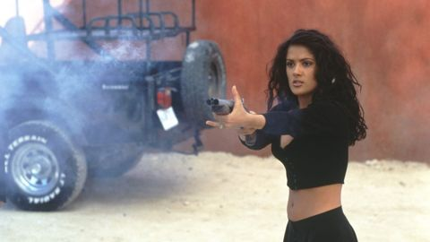 | Desperado (1995) | 7.1 | 211.729 | Action, Crime, Drama | 115 | Mariachi gitarist postaje revolveraš koji kreće u osvetnički pohod na lokalnog narkobossa. | Zemlja: SAD Redatelj: Robert Rodriguez Scenarij: Robert Rodriguez Glumci: Antonio Banderas, Salma Hayek, Joaquim de Almeida, Cheech Marin |
| ned 08.11. | 01:46 | HRT 3 | Dangube | I vitelloni (1953) | 7.8 | 23.608 | Comedy, Drama | 104 | U malom talijanskom gradu, Fausto zavede sestru svog prijatelja Moralda i prisiljen je oženiti se. Unatoč braku i djetetu, nastavlja živjeti po starom. | Zemlja: Francuska Redatelj: Federico Fellini Scenarij: Federico Fellini, Ennio Flaiano, Tullio Pinelli Glumci: Alberto Sordi, Franco Fabrizi, Franco Interlenghi, Leopoldo Trieste | |
| ned 08.11. | 01:50 | CineStar Comedy | 100 stvari | 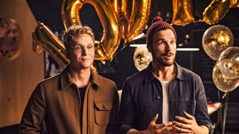 | 100 Dinge (2018) | 6.3 | 7.872 | Comedy, Drama | 113 | Dvojica najboljih prijatelja imaju svoj startup i razvijaju novu aplikaciju. Toni voli svoj aparat za kavu. Paul obožava svoj smartphone. Toni ne može ništa bez svojih tableta za rast kose. | Zemlja: Njemačka Redatelj: Florian David Fitz Scenarij: Florian David Fitz, Petri Luukkainen Glumci: Florian David Fitz, Matthias Schweighöfer, Miriam Stein, Hannelore Elsner |
| ned 08.11. | 01:55 | CineStar Action | Jako mi je stalo | I Care a Lot (2020) | 6.4 | 161.339 | Comedy, Crime, Drama | 127 | Marla Grayson vrlo je uspješna skrbnica koja vrlo vješto zakonom manipulira u svoju korist i na štetu svojih klijenata, živeći luksuzni život na njihov račun. | Zemlja: Ujedinjeno Kraljevstvo Redatelj: J Blakeson Scenarij: J Blakeson Glumci: Rosamund Pike, Peter Dinklage, Eiza González, Dianne Wiest | |
| ned 08.11. | 02:00 | Kino TV | Vicekraljeva palata | 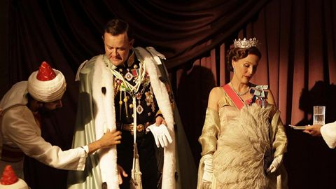 | Viceroy's House (2017) | 6.7 | 9.024 | Biography, Drama, History | 120 | Nakon tri stoljeća, bliži se kraj britanske vladavine u Indiji. Ovo je priča o posljednjim mjesecima te vladavine, neizvjesnosti, političkim spletkama i ispisivanju povijesti. | Zemlja: Ujedinjeno Kraljevstvo Redatelj: Gurinder Chadha Scenarij: Paul Mayeda Berges, Gurinder Chadha, Moira Buffini, Larry Collins Glumci: Hugh Bonneville, Gillian Anderson, Manish Dayal, Huma Qureshi |
| ned 08.11. | 02:10 | CineStar 1 | Najbolje od mene | 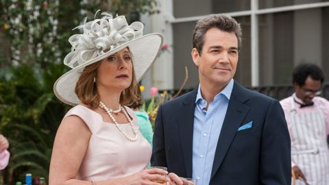 | The Best of Me (2014) | 6.7 | 82.156 | Drama, Romance | 126 | Nova ekranizacija romana Nicholasa Sparksa, autora Bilježnice i drugih djela koja su prodana širom svijeta u više od 80 milijuna primjeraka! | Zemlja: SAD Redatelj: Michael Hoffman Scenarij: Nicholas Sparks, Will Fetters, J. Mills Goodloe Glumci: James Marsden, Michelle Monaghan, Luke Bracey, Liana Liberato |
| ned 08.11. | 02:10 | Viasat Kino | Luda braća | Step Brothers (2008) | 6.9 | 346.462 | Comedy | 115 | Nakon što im se roditelji vjenčaju, dvojica sredovječnih gubitnika protiv svoje volje postaju cimeri. | Zemlja: SAD Redatelj: Adam McKay Scenarij: Will Ferrell, Adam McKay, John C. Reilly Glumci: Will Ferrell, John C. Reilly, Mary Steenburgen, Richard Jenkins | |
| ned 08.11. | 02:25 | CineStar 2 | Uhvati Gringa | 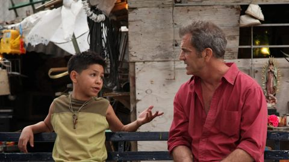 | Get the Gringo (2012) | 6.9 | 115.494 | Action, Drama, Thriller | 94 | Mel Gibson je Driver, američki gangster koji vozilom probija graničnu ogradu i upada na teritorij Meksika u pokušaju bijega američkoj pograničnoj patroli. | Zemlja: SAD Redatelj: Adrian Grunberg Scenarij: Mel Gibson, Stacy Perskie, Adrian Grunberg Glumci: Mel Gibson, Kevin Hernandez, Daniel Giménez Cacho, Jesús Ochoa |
| ned 08.11. | 02:30 | AMC | Rambo 2 — nastavak | 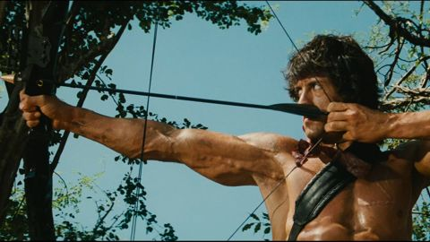 | Rambo: First Blood Part II (1985) | 6.5 | 199.484 | Action, Adventure, Thriller | 90 | Nekoliko američkih vojnika još je zatočeno u Vijetnamu, pa poručnik Trautman oslobađa Ramba iz zatvora. | Zemlja: SAD Redatelj: George P. Cosmatos Scenarij: David Morrell, Kevin Jarre, Sylvester Stallone, James Cameron Glumci: Sylvester Stallone, Richard Crenna, Charles Napier, Steven Berkoff |
| ned 08.11. | 02:55 | STAR Movies | Bezdan | 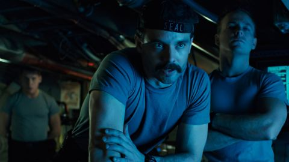 | The Abyss (1989) | 7.5 | 211.728 | Adventure, Drama, Mystery | 140 | U potrazi za potonulom nuklearnom podmornicom, tim ronilaca suočava se s opasnošću u susretu sa stranim vodenim bićima... | Zemlja: SAD Redatelj: James Cameron Scenarij: James Cameron Glumci: Ed Harris, Mary Elizabeth Mastrantonio, Michael Biehn, Leo Burmester |
| ned 08.11. | 03:37 | HRT 1 | Ruž | Why I Wore Lipstick to My Mastectomy (2006) | 7.0 | 992 | Biography, Comedy, Drama | 86 | Duhovit i životan TV film o mladoj ženi koja se s izazovom raka dojke suočava s hrabrošću i humorom, a žarko crveni ruž postaje moćan simbol njezina pozitivnog pristupa. | Zemlja: SAD Redatelj: Peter Werner Scenarij: Nancey Silvers, Geralyn Lucas Glumci: Sarah Chalke, Jay Harrington, Lally Cadeau, Harvey Atkin | |
| ned 08.11. | 04:00 | Kino TV | Počasni građanin | 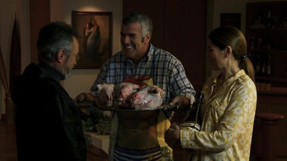 | El ciudadano ilustre (2016) | 7.5 | 14.571 | Comedy, Drama | 121 | Odbivši prestižne nagrade širom svijeta, gospodin Mantovani, dobitnik Nobelove nagrade za književnost, prihvaća poziv da posjeti svoj rodni grad Salas u Argentini. | Zemlja: Argentina Redatelj: Mariano Cohn, Gastón Duprat Scenarij: Andrés Duprat Glumci: Oscar Martínez, Dady Brieva, Andrea Frigerio, Nora Navas |
| ned 08.11. | 04:05 | Viasat Kino | Zatvorski krug | 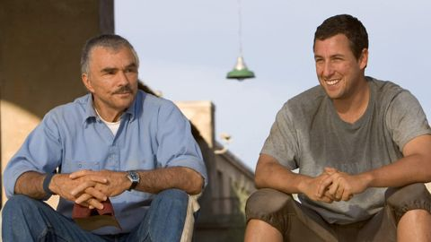 | The Longest Yard (2005) | 6.4 | 215.134 | Comedy, Crime, Sport | 145 | Zatvorenici formiraju nogometni tim kako bi izazvali zatvorske čuvare. | Zemlja: SAD Redatelj: Peter Segal Scenarij: Albert S. Ruddy, Tracy Keenan Wynn, Sheldon Turner Glumci: Adam Sandler, Chris Rock, Burt Reynolds, Nelly |
| ned 08.11. | 06:05 | CineStar 1 | Nepodnošljiva težina golemog talenta | 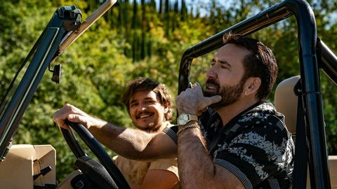 | The Unbearable Weight of Massive Talent (2022) | 7.0 | 182.565 | Action, Comedy, Crime | 120 | Nick Cage je u ulozi glumca koji očajnički želi dobiti ulogu u filmu Quentina Tarantina. | Zemlja: SAD Redatelj: Tom Gormican Scenarij: Tom Gormican, Kevin Etten Glumci: Nicolas Cage, Pedro Pascal, Tiffany Haddish, Sharon Horgan |
| ned 08.11. | 07:10 | STAR Movies | Koji je tvoj broj? | What's Your Number? (2011) | 6.1 | 93.835 | Comedy, Romance | 135 | Koji je tvoj broj?. Žena se prisjeća svih devetnaest muškaraca s kojima je bila u vezi tijekom svog života, te se pita je li jedan od njih možda bio njezina prava ljubav. | Zemlja: SAD Redatelj: Mark Mylod Scenarij: Karyn Bosnak, Gabrielle Allan, Jennifer Crittenden Glumci: Anna Faris, Chris Evans, Ari Graynor, Blythe Danner | |
| ned 08.11. | 08:00 | Kino TV | Fahim | 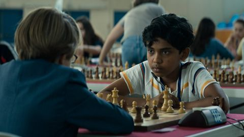 | Fahim (2019) | 6.9 | 2.097 | Biography, Comedy, Drama | 120 | Prisiljen pobjeći iz svog rodnog Bangladeša, mladi Fahim i njegov otac ostavljaju ostatak svoje obitelji i odlaze u Pariz. | Zemlja: Francuska Redatelj: Pierre-François Martin-Laval Scenarij: Thibault Vanhulle, Philippe Elno, Fahim Mohammad, Xavier Parmentier Glumci: Assad Ahmed, Gérard Depardieu, Isabelle Nanty, Mizanur Rahaman |
| ned 08.11. | 08:45 | Viasat Kino | Ponos i predrasude | Pride & Prejudice (2005) | 7.8 | 385.561 | Drama, Romance | 170 | Životi pet sestara u georgijanskoj Engleskoj okrenu se naglavce kada se bogati mladić sa svojim prijateljem doseli u njihovo susjedstvo. Film je temeljen na romanu Jane Austen. | Zemlja: SAD Redatelj: Joe Wright Scenarij: Deborah Moggach, Jane Austen, Emma Thompson Glumci: Keira Knightley, Matthew Macfadyen, Brenda Blethyn, Donald Sutherland | |
| ned 08.11. | 08:45 | CineStar 2 | Knjižara | The Bookshop (2017) | 6.5 | 19.152 | Drama | 120 | U fokusu filma nalazi se hrabra žena Florence Green, udovica slobodnog duha, koja svoju žalost ostavlja po stani i riskira sve da bi otvorila knjižaru, i to prvu takve vrste u uspavanom primorskom... | Zemlja: Njemačka Redatelj: Isabel Coixet Scenarij: Isabel Coixet, Penelope Fitzgerald Glumci: Emily Mortimer, Bill Nighy, Patricia Clarkson, Hunter Tremayne | |
| ned 08.11. | 08:50 | AMC | Afera Blaireau | 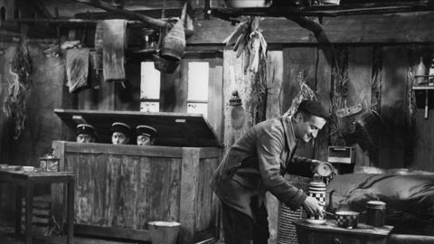 | Ni vu, ni connu (1958) | 7.1 | 2.358 | Comedy | 85 | U malom francuskom selu sve bi bilo tiho da lokalnog lovočuvara ne ismijava lukavi krivolovac. | Zemlja: Francuska Redatelj: Yves Robert Scenarij: Alphonse Allais, Jacques Celhay, Jean Marsan, Yves Robert Glumci: Louis de Funès, Noëlle Adam, Frédéric Duvallès, Claude Rich |
| ned 08.11. | 08:55 | CineStar Fantasy | Izum | 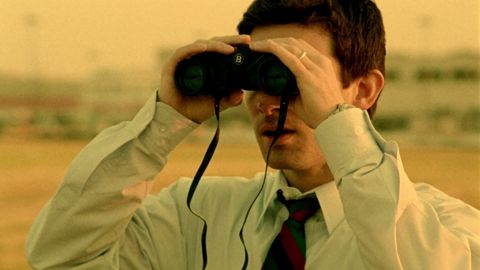 | Primer (2004) | 6.7 | 123.590 | Drama, Sci-Fi, Thriller | 90 | Danju, mala grupa inženjera radi za veliku korporaciju. Noću, provode opite u svojoj garaži. | Zemlja: SAD Redatelj: Shane Carruth Scenarij: Shane Carruth Glumci: Shane Carruth, David Sullivan, Casey Gooden, Anand Upadhyaya |
| ned 08.11. | 09:00 | CineStar Comedy | Nerazdvojni | Inseparables (2016) | 6.7 | 1.614 | Comedy, Drama | 115 | Felipe je bogati biznismen koji zbog nesreće postane kvadriplegičar i traži asistenta terapeuta. | Zemlja: Argentina Redatelj: Marcos Carnevale Scenarij: Marcos Carnevale, Olivier Nakache, Éric Toledano Glumci: Oscar Martínez, Rodrigo De la Serna, Alejandra Flechner, Carla Peterson | |
| ned 08.11. | 09:45 | CineStar 1 | Ja sam majka | I Am Mother (2019) | 6.7 | 107.824 | Drama, Mystery, Sci-Fi | 125 | Rođena iz probnih epruveta u nuklearnom skladištu, usamljena tinejdžerica prva je od novoga naraštaja ljudi koje je podigla "Majka" – dobronamjeran robot stvoren da ponovno nastani Zemlju nakon... | Zemlja: Australija Redatelj: Grant Sputore Scenarij: Michael Lloyd Green, Grant Sputore Glumci: Luke Hawker, Rose Byrne, Maddie Lenton, Hazel Sandery | |
| ned 08.11. | 11:35 | Viasat Kino | Scott Pilgrim protiv svijeta | Scott Pilgrim vs. the World (2010) | 7.5 | 502.787 | Action, Comedy, Fantasy | 135 | Da bi osvojio srce svoje nove djevojke, Scott Pilgrim mora pobijediti njezinih sedam bivših momaka. | Zemlja: SAD Redatelj: Edgar Wright Scenarij: Michael Bacall, Edgar Wright, Bryan Lee O'Malley Glumci: Michael Cera, Mary Elizabeth Winstead, Kieran Culkin, Chris Evans | |
| ned 08.11. | 11:50 | CineStar 1 | Igra ljubavi i mržnje | The Hating Game (2021) | 6.2 | 37.082 | Comedy, Romance | 120 | Lucy Hutton oduvijek je vjerovala da srdačna djevojčica može steći menadžersku poziciju. Ponosi se time što je na poslu svi vole − osim dojmljivog i savršeno odjevenog Joshue Templemana. | Zemlja: SAD Redatelj: Peter Hutchings Scenarij: Christina Mengert, Sally Thorne Glumci: Lucy Hale, Austin Stowell, Damon Daunno, Nicholas Baroudi | |
| ned 08.11. | 11:50 | STAR Movies | Legenda o Zorou | 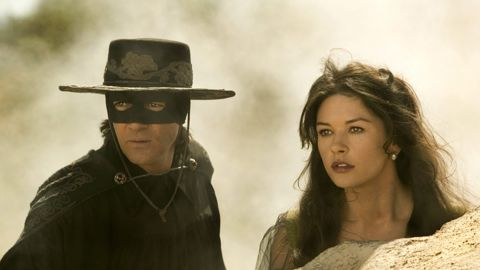 | The Legend of Zorro (2005) | 6.0 | 116.225 | Action, Adventure, Drama | 150 | Maskirani junak munjevita mača kreće na najopasniju pustolovinu svog života. | Zemlja: SAD Redatelj: Martin Campbell Scenarij: Roberto Orci, Alex Kurtzman, Ted Elliott, Terry Rossio Glumci: Antonio Banderas, Catherine Zeta-Jones, Rufus Sewell, Alberto Reyes |
| ned 08.11. | 12:00 | Kino TV | Kišni dan u New Yorku | 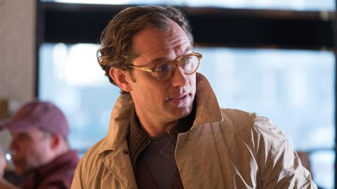 | A Rainy Day in New York (2019) | 6.4 | 59.439 | Comedy, Romance | 120 | Romantična komedija u režiji Woodyja Allena prikazuje mladi par, Ashleigh i Gatsbyja koji odluče otputovati na vikend u New York. | Zemlja: SAD Redatelj: Woody Allen Scenarij: Woody Allen Glumci: Timothée Chalamet, Elle Fanning, Selena Gomez, Jude Law |
| ned 08.11. | 12:10 | RTL | Flamin' Hot | 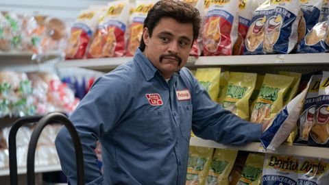 | Flamin' Hot (2023) | 6.8 | 22.118 | Biography, Drama, History | 120 | Richard Montañez (Jesse Garcia) i Judy (Annie Gonzalez) u financijskoj su stisci, a kada Judy ostane trudna, a Richard još jednom uhićen kao pripadnik bande, oni čvrsto odluče promijeniti život. | Zemlja: SAD Redatelj: Eva Longoria Scenarij: Lewis Colick, Linda Yvette Chávez, Richard Montanez, Judy Montanez Glumci: Tony Shalhoub, Annie Gonzalez, Jesse Garcia, Dennis Haysbert |
| ned 08.11. | 12:10 | CineStar Fantasy | Tri mušketira: D'Artagnan | Les trois mousquetaires: D'Artagnan (2023) | 6.7 | 27.847 | Action, Adventure, History | 130 | Nevjerojatna, herojska priča, govori o mladiću po imenu d'Artagnan koji od kuće odlazi u Pariz, nadajući se da će postati mušketir garde. | Zemlja: Njemačka Redatelj: Martin Bourboulon Scenarij: Matthieu Delaporte, Alexandre de La Patellière, Alexandre Dumas Glumci: François Civil, Vincent Cassel, Romain Duris, Pio Marmaï | |
| ned 08.11. | 12:20 | Nova TV | Nanny McPhee - Čudesna dadilja | 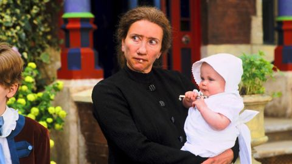 | Nanny McPhee (2005) | 6.6 | 93.281 | Comedy, Family, Fantasy | 115 | Gospodin Brown je otac sedmero najzločestije djece na svijetu i potpuno je izgubio kontrolu nad njima. Nakon što su otjerali čak sedamnaest dadilja, izgubio je svaku nadu da će ikada pronaći novu. | Zemlja: Francuska Redatelj: Kirk Jones Scenarij: Emma Thompson, Christianna Brand Glumci: Emma Thompson, Colin Firth, Angela Lansbury, Kelly MacDonald |
| ned 08.11. | 12:40 | CineStar 2 | Tajne petog staleža | The Fifth Estate (2013) | 6.2 | 44.410 | Biography, Crime, Drama | 135 | Kroz uspon WikiLeaksa, dvojica vizionara mijenjaju svijet, ali ih razdvajaju etika, ego i moć – dok istina izlazi na vidjelo, njihovo prijateljstvo puca. | Zemlja: SAD Redatelj: Bill Condon Scenarij: Daniel Domscheit-Berg, David Leigh, Luke Harding, Josh Singer Glumci: Benedict Cumberbatch, Daniel Brühl, Anthony Mackie, David Thewlis | |
| ned 08.11. | 13:45 | AMC | Murjaci s klupe | The Other Guys (2010) | 6.7 | 314.797 | Action, Comedy, Crime | 100 | Kada se ukaže prilika dvojici detektiva da oni budu ti koji će riješiti slučaj, hoće li uspjeti? | Zemlja: SAD Redatelj: Adam McKay Scenarij: Adam McKay, Chris Henchy Glumci: Will Ferrell, Derek Jeter, Mark Wahlberg, Eva Mendes | |
| ned 08.11. | 13:50 | Viasat Kino | Predvečerje | Evening (2007) | 6.4 | 14.492 | Drama, Romance | 145 | Drama koja istražuje romantičnu prošlost i emocionalnu sadašnjost Ann Grant i njezinih kćeri Constance i Nine. | Zemlja: Njemačka Redatelj: Lajos Koltai Scenarij: Susan Minot, Michael Cunningham Glumci: Claire Danes, Vanessa Redgrave, Natasha Richardson, Toni Collette | |
| ned 08.11. | 13:55 | CineStar Comedy | Ribarevi prijatelji 2 | Fisherman's Friends: One and All (2022) ? | 6.5 | 2.709 | Comedy, Drama, Music | 110 | Nastavak hit britanske komedije iz 2019. i nevjerojatna, uzbudljiva i istinita priča. | Zemlja: Ujedinjeno Kraljevstvo Redatelj: Meg Leonard, Nick Moorcroft Scenarij: Nick Moorcroft, Meg Leonard, Piers Ashworth Glumci: James Purefoy, Imelda May, Dave Johns, Sam Swainsbury | |
| ned 08.11. | 14:00 | Kino TV | Izgubljeno vrijeme | Pan de limón con semillas de amapola (2021) | 6.6 | 757 | Drama, Romance | 120 | U gradiću na otoku Mallorca, Anna i Marina, dvije sestre koje su bile razdvojene dok su bile tinejdžerice, ponovno se sastaju kako bi prodale pekarnicu koju su naslijedile od misteriozne žene o... | Zemlja: Španjolska Redatelj: Benito Zambrano Scenarij: Cristina Campos, Benito Zambrano Glumci: Elia Galera, Eva Martín, Mariona Pagès, Marilu Marini | |
| ned 08.11. | 14:15 | Nova TV | Kako izgubiti dečka za 10 dana | 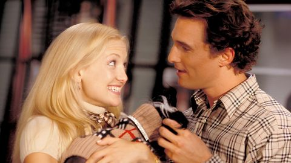 | How to Lose a Guy in 10 Days (2003) | 6.6 | 335.275 | Comedy, Romance | 140 | Benjamin Barry (Matthew McConaughey) je izvršni direktor marketinške firme i poznati ženskar. Kladi se sa šefom nastojeći dokazati da mu je dovoljno 10 dana da natjera ženu da se zaljubi u njega. | Zemlja: SAD Redatelj: Donald Petrie Scenarij: Michele Alexander, Jeannie Long, Kristen Buckley, Brian Regan Glumci: Kate Hudson, Matthew McConaughey, Adam Goldberg, Michael Michele |
| ned 08.11. | 14:20 | RTL | Neka bolji pobijedi | This Means War (2012) | 6.3 | 202.146 | Action, Comedy, Romance | 130 | Agenti CIA-e, Frank i Tuck nalaze se u Hong Kongu kako bi zaustavili međunarodnog kriminalaca Karla Heinricha u kupnji oružja za masovno uništenje. | Zemlja: SAD Redatelj: McG Scenarij: Timothy Dowling, Simon Kinberg, Marcus Gautesen Glumci: Reese Witherspoon, Chris Pine, Tom Hardy, Til Schweiger | |
| ned 08.11. | 14:20 | CineStar Fantasy | Tri mušketira: Milady | 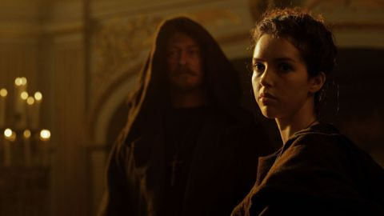 | Les trois mousquetaires: D'Artagnan (2023) ? | 6.7 | 27.847 | Action, Adventure, History | 125 | Roman Alexandra Dumasa književni je klasik koji je već nekoliko puta ekraniziran za velika platna, no ova raskošna adaptacija predstavlja nove likove i brojne lokacije, od slavnog Louvrea do... | Zemlja: Francuska Redatelj: Martin Bourboulon Scenarij: Matthieu Delaporte, Alexandre de La Patellière, Alexandre Dumas Glumci: François Civil, Vincent Cassel, Romain Duris, Pio Marmaï |
| ned 08.11. | 14:55 | CineStar 2 | Poslovni ljudi | The Company Men (2010) | 6.7 | 51.574 | Drama | 115 | Bobby Walker (Ben Affleck) živi poslovičan Američki san: sjajan posao, lijepa obitelj, sjajan Porsche u garaži. | Zemlja: Ujedinjeno Kraljevstvo Redatelj: John Wells Scenarij: John Wells Glumci: Ben Affleck, Tommy Lee Jones, Thomas Kee, Craig Mathers | |
| ned 08.11. | 15:25 | AMC | Džumandži: Dobrodošli u Džunglu | Jumanji: Welcome to the Jungle (2017) | 6.9 | 515.392 | Action, Adventure, Comedy | 110 | Tajanstvena videoigra povlači četvero srednjoškolaca u svijet džungle gdje postaju avatari. Spencer postaje avanturist, Fridge postaje Einstein, Bethany postaje profesor, a Martha ratnica. | Zemlja: SAD Redatelj: Jake Kasdan Scenarij: Chris McKenna, Erik Sommers, Scott Rosenberg, Jeff Pinkner Glumci: Dwayne Johnson, Karen Gillan, Kevin Hart, Jack Black | |
| ned 08.11. | 15:40 | CineStar 1 | Bitka za Midvej | Midway (2019) | 6.7 | 107.519 | Action, Drama, History | 150 | Bitka kod Midwaya započela je 4. lipnja 1942. godine. Bila je to odlučujuća pobjeda SAD-a protiv Japana za vrijeme Drugog svjetskog rata. | Zemlja: Hong Kong Redatelj: Roland Emmerich Scenarij: Wes Tooke Glumci: Ed Skrein, Patrick Wilson, Luke Evans, Woody Harrelson | |
| ned 08.11. | 15:45 | CineStar Comedy | Burnt | Burnt (2015) | 6.6 | 145.284 | Comedy, Drama | 105 | Chef Adam Jones imao je sve – i sve je izgubio. | Zemlja: SAD Redatelj: John Wells Scenarij: Steven Knight, Michael Kalesniko Glumci: Bradley Cooper, Sienna Miller, Daniel Brühl, Riccardo Scamarcio | |
| ned 08.11. | 16:00 | Kino TV | Kraljev izbor | 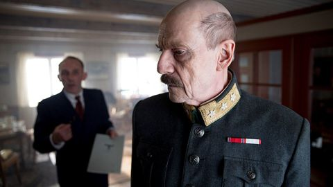 | Kongens nei (2016) | 7.1 | 11.286 | Biography, Drama, History | 135 | "Kraljev izbor" temelji se na istinitoj priči o tri dramatična dana u travnju 1940., gdje su njemačke oružane snage postavile kralju Norveške nezamisliv ultimatum: predaju ili smrt. | Zemlja: Norveška Redatelj: Erik Poppe Scenarij: Alf R. Jacobsen, Harald Rosenløw-Eeg, Jan Trygve Røyneland Glumci: Jesper Christensen, Anders Baasmo, Karl Markovics, Tuva Novotny |
| ned 08.11. | 16:15 | Viasat Kino | Sedam godina u Tibetu | 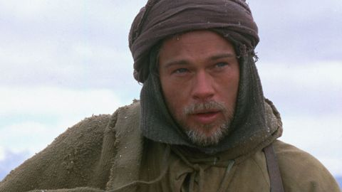 | Seven Years in Tibet (1997) | 7.1 | 171.208 | Adventure, Biography, Drama | 175 | Heinrich Harrer putuje na Himalaju kako bi planinario. No, izbija rat pa bježi u Tibet gdje se sprijatelji s mladim Dalaj Lamom. | Zemlja: SAD Redatelj: Jean-Jacques Annaud Scenarij: Heinrich Harrer, Becky Johnston Glumci: Brad Pitt, David Thewlis, BD Wong, Danny Denzongpa |
| ned 08.11. | 16:25 | CineStar Fantasy | Mali genijalac | 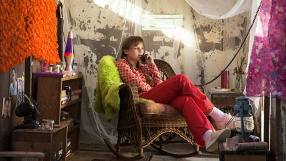 | The Young and Prodigious T.S. Spivet (2013) | 7.0 | 21.787 | Adventure, Comedy, Drama | 115 | Temeljena na popularnom i kod nas prevedenom debitantskom romanu "Odabrana djela T. V. Spiveta" američkog književnika Reifa Larsena, pustolovna obiteljska drama Mali genijalac redatelja... | Zemlja: Kanada Redatelj: Jean-Pierre Jeunet Scenarij: Jean-Pierre Jeunet, Guillaume Laurant, Reif Larsen Glumci: Kyle Catlett, Helena Bonham Carter, Judy Davis, Callum Keith Rennie |
| ned 08.11. | 16:50 | CineStar 2 | Mavka: Čuvarica šume | Mavka. Lisova pisnia (2023) | 6.6 | 7.474 | Adventure, Animation, Comedy | 105 | Od pamtivijeka su nepregledne ukrajinske šume skrivale bezbrojne tajne i nedokučive misterije. | Zemlja: Ukrajina Redatelj: Oleh Malamuzh, Oleksandra Ruban, Yevheniy Yermak Scenarij: Yaroslav Voytseshek, Lesya Ukrainka Glumci: Natalya Denisenko, Artem Pivovarov, Elena Kravets, Natalia Sumskaya | |
| ned 08.11. | 17:30 | CineStar Comedy | Božić na pameti | 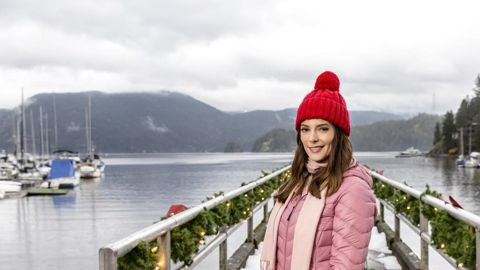 | Christmas on My Mind (2019) | 6.5 | 2.181 | Comedy, Drama, Romance | 90 | Lucy Lovett budi se držeći u rukama vjenčanicu i pomisli da se treba udati za ljubav svog života, Zacha Callahana, no otkriva da su prekinuli prije dvije godine i da njezin zaručnik nije Zach. | Zemlja: SAD Redatelj: Maclain Nelson Scenarij: Denise Hunter, Kirsten Hansen Glumci: Ashley Greene, Andrew W. Walker, Jackee Harry, Donna Benedicto |
| ned 08.11. | 18:10 | CineStar 1 | Nakon vjenčanja | 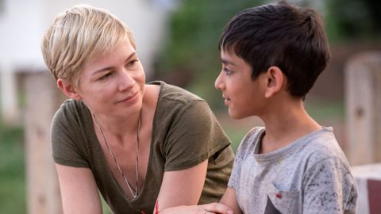 | After the Wedding (2019) | 6.3 | 9.384 | Drama | 125 | Isabel (Williams), suosnivačica doma za nezbrinutu djecu na rubu bankrota u Kalkuti, putuje u New York kako bi upoznala potencijalnu donatoricu Theresu (Moore), koja bi mogla riješiti sve njezine... | Zemlja: SAD Redatelj: Bart Freundlich Scenarij: Bart Freundlich, Susanne Bier, Anders Thomas Jensen Glumci: Julianne Moore, Michelle Williams, Billy Crudup, Abby Quinn |
| ned 08.11. | 18:20 | CineStar Fantasy | Svemir između nas | 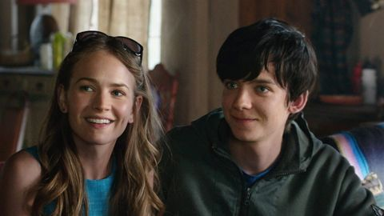 | The Space Between Us (2017) | 6.4 | 59.365 | Drama, Romance, Sci-Fi | 130 | U svemirskoj avanturi, space shuttle kreće u prvu misiju kolonizacije Marsa, no odmah nakon polijetanja saznaju da je jedna astronautkinja trudna. | Zemlja: SAD Redatelj: Peter Chelsom Scenarij: Allan Loeb, Stewart Schill, Richard Barton Lewis Glumci: Gary Oldman, Asa Butterfield, Carla Gugino, Britt Robertson |
| ned 08.11. | 18:30 | AMC | Spider-Man: Daleko od kuće | Spider-Man: Far from Home (2019) | 7.3 | 683.670 | Action, Adventure, Comedy | 120 | Spider-Man: Daleko od kuće. Peter Parker odlučuje otići na srednjoškolsku ekskurziju po Europi kako bi se odmorio od trauma iz nedavne prošlosti koje ga i dalje proganjaju. | Zemlja: SAD Redatelj: Jon Watts Scenarij: Chris McKenna, Erik Sommers, Stan Lee, Steve Ditko Glumci: Tom Holland, Samuel L. Jackson, Jake Gyllenhaal, Marisa Tomei | |
| ned 08.11. | 20:00 | CineStar Action | 12 hrabrih | 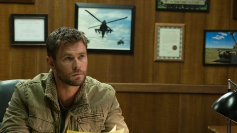 | 12 Strong (2018) | 6.6 | 102.538 | Action, Drama, History | 145 | Film je snimljen po istinitom događaju i temelji se na knjizi Douga Stantona (Horse soldiers) te opisuje događaje koji su uslijedili nakon napada 11. rujna 2001., nakon čega je CIA pokrenula tajnu... | Zemlja: SAD Redatelj: Nicolai Fuglsig Scenarij: Ted Tally, Peter Craig, Doug Stanton Glumci: Chris Hemsworth, Michael Shannon, Michael Peña, Navid Negahban |
| ned 08.11. | 20:00 | STAR Movies | Voliš li pse? | 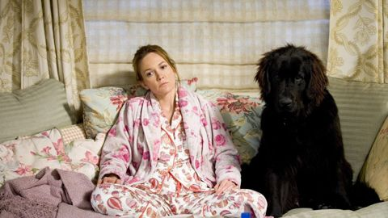 | Must Love Dogs (2005) | 6.0 | 34.556 | Comedy, Romance | 125 | Voliš li pse?. Odgajateljica od četrdeset i nešto godina traži od osobnih kontakata promjenu ritma i odnosa, s urnebesnim rezultatima. | Zemlja: SAD Redatelj: Gary David Goldberg Scenarij: Claire Cook, Gary David Goldberg Glumci: Diane Lane, John Cusack, Elizabeth Perkins, Christopher Plummer |
| ned 08.11. | 20:15 | CineStar 1 | Dani gnjeva | 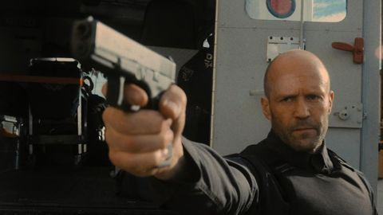 | Wrath of Man (2021) | 7.1 | 245.024 | Action, Crime, Thriller | 135 | Tijekom pljačke vozila novi zaposlenik zaštitarske tvrtke izvrsno se snađe, što izazove čuđenje i sumnju kod njegovih kolega. | Zemlja: SAD Redatelj: Guy Ritchie Scenarij: Nicolas Boukhrief, Éric Besnard, Guy Ritchie, Ivan Atkinson Glumci: Jason Statham, Holt McCallany, Jeffrey Donovan, Josh Hartnett |
| ned 08.11. | 20:15 | Kino TV | Srca s ožiljkom | 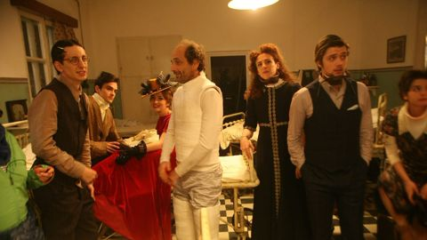 | Inimi cicatrizate (2016) | 7.1 | 1.428 | Biography, Drama | 140 | "Srca s ožiljkom" je film čija je radnja smještena u 1937. godinu, a inspiriran je istoimenim romanom rumunjskog književnika Maxa Blechera. | Zemlja: Rumunjska Redatelj: Radu Jude Scenarij: M. Blecher, Radu Jude Glumci: Serban Pavlu, Adina Cristescu, Alex Bogdan, Ivana Mladenović |
| ned 08.11. | 20:20 | CineStar 2 | Greben spašenih | Hacksaw Ridge (2016) | 8.1 | 702.355 | Biography, Drama, History | 145 | U proljeće 1945. godine – američke vojne snage susrele su se s najvažnijom i najopasnijom borbom na Pacifiku, međutim jedan vojnik se istaknuo kao drugačiji. | Zemlja: SAD Redatelj: Mel Gibson Scenarij: Robert Schenkkan, Andrew Knight Glumci: Andrew Garfield, Vince Vaughn, Sam Worthington, Teresa Palmer | |
| ned 08.11. | 20:30 | AMC | Gola istina | The Ugly Truth (2009) | 6.4 | 244.182 | Comedy, Romance | 90 | Abby Richter producentica je jutarnjeg televizijskog showa koji otkriva rješenje za sve probleme! Osim kad je u pitanju Abbyjin osobni ljubavni život jer Abby ima niz promašenih veza iza sebe. | Zemlja: SAD Redatelj: Robert Luketic Scenarij: Nicole Eastman, Karen McCullah, Kirsten Smith Glumci: Katherine Heigl, Gerard Butler, Bree Turner, Eric Winter | |
| ned 08.11. | 20:30 | CineStar Fantasy | Glasovi | The Voices (2014) | 6.3 | 67.609 | Comedy, Crime, Horror | 115 | Jerry (Ryan Reynolds) je onaj veseli tip koji radi od devet do 17 u tvornici kada, uz neobičan šarm onoga kojemu bi trebalo nekoliko prijatelja. | Zemlja: Njemačka Redatelj: Marjane Satrapi Scenarij: Michael R. Perry Glumci: Ryan Reynolds, Gemma Arterton, Anna Kendrick, Jacki Weaver | |
| ned 08.11. | 21:00 | RTL | Hobit: Smaugova pustoš | 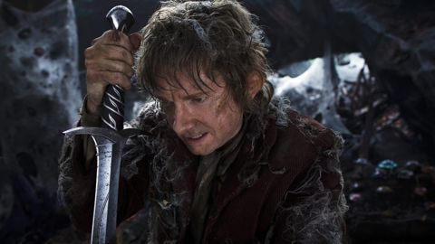 | The Hobbit: The Desolation of Smaug (2013) | 7.8 | 764.592 | Adventure, Fantasy | 185 | Azog (Manu Bennett) i njegovi orki nastavljaju progoniti Thorina (Richard Armitage) i njegovu družinu. | Zemlja: Novi Zeland Redatelj: Peter Jackson Scenarij: Fran Walsh, Philippa Boyens, Peter Jackson, Guillermo del Toro Glumci: Martin Freeman, Richard Armitage, Ian McKellen, Ken Stott |
| ned 08.11. | 21:00 | Viasat Kino | Legenda o Zorou | The Legend of Zorro (2005) | 6.0 | 116.225 | Action, Adventure, Drama | 170 | Iako maksimalno pokušava izbjeći nove avanture, prijetnja nadolazećem statusu Kalifornije potiče pustolovnog Alejandra de la Vegu i njegovu suprugu Elenu na akciju. | Zemlja: SAD Redatelj: Martin Campbell Scenarij: Roberto Orci, Alex Kurtzman, Ted Elliott, Terry Rossio Glumci: Antonio Banderas, Catherine Zeta-Jones, Rufus Sewell, Alberto Reyes | |
| ned 08.11. | 21:14 | HRT 1 | Plan za bijeg | 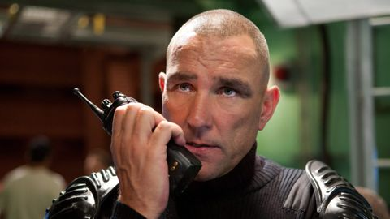 | Escape Plan (2013) | 6.7 | 273.352 | Action, Thriller | 121 | Akcijski triler. | Zemlja: SAD Redatelj: Mikael Håfström Scenarij: Miles Chapman, Jason Keller Glumci: Sylvester Stallone, Arnold Schwarzenegger, Jim Caviezel, Faran Tahir |
| ned 08.11. | 21:15 | HRT 1 | Plan za bijeg | Escape Plan (2013) | 6.7 | 273.352 | Action, Thriller | 120 | Akcijski triler. | Zemlja: SAD Redatelj: Mikael Håfström Scenarij: Miles Chapman, Jason Keller Glumci: Sylvester Stallone, Arnold Schwarzenegger, Jim Caviezel, Faran Tahir | |
| ned 08.11. | 22:05 | STAR Movies | Dežurni krivci | 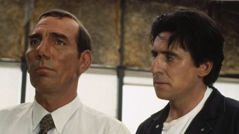 | The Usual Suspects (1995) | 8.5 | 1.261.713 | Crime, Drama, Mystery | 135 | U sobi za ispitivanje, u policiji Los Angelesa, Verbal pokušava uvjeriti federalne agente da mitski šef kriminalaca Keyser Soze postoji, i da je njega i još četvoricu uvukao u pljačku koja je... | Zemlja: SAD Redatelj: Bryan Singer Scenarij: Christopher McQuarrie Glumci: Gabriel Byrne, Stephen Baldwin, Chazz Palminteri, Kevin Pollak |
| ned 08.11. | 22:25 | CineStar Fantasy | Boss Level | 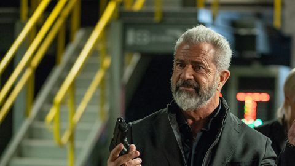 | Boss Level (2020) | 6.8 | 92.662 | Action, Adventure, Comedy | 110 | Umirovljeni vojni specijalac Roy Pulver (F. Grillo) iznova proživljava jedan te isti dan koji uvijek završava njegovom brutalnom smrću od strane nepoznatih mu plaćenika ili prilikom bježanja od istih. | Zemlja: SAD Redatelj: Joe Carnahan Scenarij: Chris Borey, Eddie Borey, Joe Carnahan Glumci: Frank Grillo, Mel Gibson, Naomi Watts, Michelle Yeoh |
| ned 08.11. | 22:30 | CineStar 1 | Obiteljski čovjek | 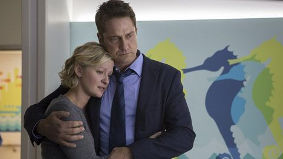 | A Family Man (2016) | 6.5 | 14.977 | Drama | 125 | Dane Jensen (Gerard Butler) jako je ambiciozan lovac na talente koji radi u jakoj firmi za zapošljavanje u Chicagu. | Zemlja: Kanada Redatelj: Mark Williams Scenarij: Bill Dubuque Glumci: Gerard Butler, Gretchen Mol, Alfred Molina, Willem Dafoe |
| ned 08.11. | 22:30 | CineStar Comedy | Plivaj muški | Le grand bain (2018) | 6.9 | 13.383 | Comedy, Drama, Sport | 120 | Gilles Lellouche donosi zabavni film o grupi muškaraca koji zajedno odluče osnovati nevjerojatan tim muških sinkroniziranih plivača. | Zemlja: Belgija Redatelj: Gilles Lellouche Scenarij: Ahmed Hamidi, Julien Lambroschini, Gilles Lellouche Glumci: Mathieu Amalric, Guillaume Canet, Benoît Poelvoorde, Jean-Hugues Anglade | |
| ned 08.11. | 22:35 | Nova TV | Istjerivači duhova: Ledena prijetnja | 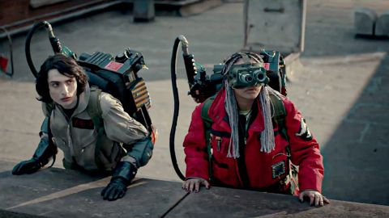 | Ghostbusters: Frozen Empire (2024) | 6.1 | 108.965 | Action, Adventure, Comedy | 115 | Nakon otkrića tajanstvenog artefakta koji oslobađa opasnu silu, nova i stara generacija Istjerivača duhova mora udružiti snage kako bi zaštitila New York od nadnaravne katastrofe. | Zemlja: SAD Redatelj: Gil Kenan Scenarij: Gil Kenan, Jason Reitman, Ivan Reitman, Dan Aykroyd Glumci: Paul Rudd, Carrie Coon, Finn Wolfhard, Mckenna Grace |
| ned 08.11. | 22:45 | CineStar 2 | Tully | Tully (2018) | 6.9 | 67.215 | Comedy, Drama, Mystery | 105 | Film prati mladu majku Marlo (dobitnica nagrade Oscar®, Charlize Theron), koja jedva preživljava iz dana u dan uz troje djece, od koje je jedno novorođenče. | Zemlja: SAD Redatelj: Jason Reitman Scenarij: Diablo Cody Glumci: Charlize Theron, Mackenzie Davis, Ron Livingston, Mark Duplass | |
| ned 08.11. | 23:47 | HRT 1 | Pregovarač | 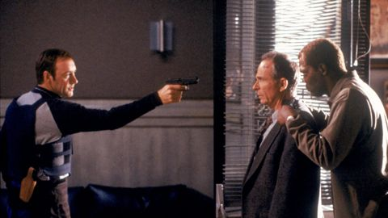 | The Negotiator (1998) | 7.3 | 171.520 | Action, Crime, Drama | 139 | Čikaški policajac Danny Roman (S. L. Jackson) nebrojeno je puta uspio spasiti taoce zahvaljujući svojim pregovaračkim vještinama. | Zemlja: SAD Redatelj: F. Gary Gray Scenarij: James DeMonaco, Kevin Fox Glumci: Samuel L. Jackson, Kevin Spacey, David Morse, Ron Rifkin |
| ned 08.11. | 23:50 | HRT 3 | Midnight Oil: 1984 | Midnight Oil: 1984 (2018) | 7.2 | 189 | Documentary, Music | 90 | Godine 1984. Midnight Oil objavio je svoj kultni album "Red Sails in the Sunset" i postao najprepoznatljiviji australski rock and roll bend. | Zemlja: Australija Redatelj: Ray Argall | |
| ned 08.11. | 23:50 | Viasat Kino | Bilo jednom u Meksiku | 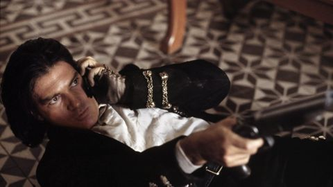 | Once Upon a Time in Mexico (2003) | 6.3 | 178.109 | Action, Crime, Thriller | 125 | Junak koji svira gitaru, El Mariachi, upliće se u međunarodnu špijunažu u koju su uključeni psihotični agent CIA-e i korumpirani meksički general. | Zemlja: SAD Redatelj: Robert Rodriguez Scenarij: Robert Rodriguez Glumci: Antonio Banderas, Salma Hayek, Johnny Depp, Mickey Rourke |
| pon 09.11. | 00:05 | CineStar Action | Riddick: Vladar Tame | Riddick (2013) ? | 6.4 | 188.572 | Action, Adventure, Sci-Fi | 135 | Nakon što ga Nekrozori izdaju i ostave da umre na zabačenom planetu, Riddick se bori za svoj život s izvanzemaljskim grabežljivcima te postaje snažniji i opasniji nego ikad prije. | Redatelj: David Twohy Scenarij: David Twohy, Jim Wheat, Ken Wheat Glumci: Vin Diesel, Jordi Mollà, Matt Nable, Katee Sackhoff | |
| pon 09.11. | 00:20 | STAR Movies | Zorro: Maskirani Osvetnik | The Mask of Zorro (1998) | 6.8 | 213.004 | Action, Adventure, Comedy | 155 | Mladi lopov, želeći osvetiti smrt svog brata, trenira pod pokroviteljstvom ostarjelog velikana Zorra, koji se isto želi osvetiti. | Redatelj: Martin Campbell Scenarij: Johnston McCulley, Ted Elliott, Terry Rossio, Randall Jahnson Glumci: Antonio Banderas, José María de Tavira, Catherine Zeta-Jones, Anthony Hopkins | |
| pon 09.11. | 00:30 | Nova TV | Plaćenici 2 | The Expendables 2 (2012) | 6.6 | 337.339 | Action, Adventure, Thriller | 100 | Vođa plaćenika Barney Ross (Sylvester Stallone), stručnjak za borbu noževima Lee Christmas (Jason Statham), ekspert za borbu prsa o prsa Yin Yang (Jet Li), specijalist za teško naoružanje Hale... | Redatelj: Simon West Scenarij: Richard Wenk, Sylvester Stallone, Ken Kaufman, David Agosto Glumci: Sylvester Stallone, Jason Statham, Jet Li, Arnold Schwarzenegger | |
| pon 09.11. | 00:30 | CineStar 2 | Ukleta Vožnja | Driven (2018) | 6.4 | 9.491 | Biography, Comedy, Crime | 115 | Nadahnut istinitim događajima, film UKLETA VOŽNJA smješten je u Kaliforniju 80-ih i prati vrtoglavi uspon Johna DeLoreana i njegove kultne tvrtke DeLorean Motor Company, kroz njegovo prijateljstvo... | Redatelj: Nick Hamm Scenarij: Colin Bateman, Alejandro Carpio Glumci: Jason Sudeikis, Lee Pace, Judy Greer, Isabel Arraiza | |
| pon 09.11. | 01:30 | RTL | Čovjek sa željeznom maskom | The Man in the Iron Mask (1998) | 6.5 | 193.301 | Action, Adventure, Drama | 145 | Godine 1638. francuska kraljica Anne (Anne Parillaud) rađa prijestolonasljednika koji će jednoga dana preuzeti krunu. Javnost, međutim, ne zna da je nekoliko minuta poslije rođeno još jedno dijete. | Zemlja: SAD Redatelj: Randall Wallace Scenarij: Alexandre Dumas, Randall Wallace Glumci: Leonardo DiCaprio, Jeremy Irons, John Malkovich, Gérard Depardieu | |
| pon 09.11. | 01:55 | Viasat Kino | Grimizni Vrh | Crimson Peak (2015) | 6.5 | 172.659 | Drama, Horror, Mystery | 155 | Spisateljica Edith Cushing upoznaje zagonetnog Sir Thomasa Sharpea. Vjenčaju se, a po povratku na njegovo imanje, Edith shvaća da stvari nisu onakve kakvima bi trebale biti. | Redatelj: Guillermo del Toro Scenarij: Guillermo del Toro, Matthew Robbins Glumci: Tom Hiddleston, Jessica Chastain, Mia Wasikowska, Charlie Hunnam | |
| pon 09.11. | 02:00 | CineStar Fantasy | Smrznuti | Frozen (2010) | 6.2 | 88.670 | Adventure, Thriller | 94 | Dan, Joe i Parker trojica su studenata koji se zadnjega dana skijaškog odmora upute na planinu posljednjom vožnjom žičare toga dana i slučajno zapnu na pola puta. | Redatelj: Adam Green Scenarij: Adam Green Glumci: Emma Bell, Shawn Ashmore, Kevin Zegers, Ed Ackerman | |
| pon 09.11. | 02:10 | Nova TV | Creed 2 | Creed II (2018) | 7.1 | 175.521 | Action, Drama, Sport | 120 | U nastavku sportske drame prvak u teškoj kategoriji Adonis Creed nastavlja trenirati pod vodstvom legendarnog Balboe. Ovoga puta očekuje ga borba protiv Viktora Drage. | Redatelj: Steven Caple Jr. Scenarij: Juel Taylor, Sylvester Stallone, Sascha Penn, Cheo Hodari Coker Glumci: Michael B. Jordan, Sylvester Stallone, Tessa Thompson, Phylicia Rashad | |
| pon 09.11. | 02:55 | STAR Movies | Međunarodna Prijevara | The International (2009) | 6.5 | 104.953 | Action, Crime, Drama | 120 | Agent Interpola pokušava razotkriti ulogu važne financijske institucije u prstenu međunarodne trgovine oružjem. | Redatelj: Tom Tykwer Scenarij: Eric Warren Singer Glumci: Clive Owen, Naomi Watts, Armin Mueller-Stahl, Ulrich Thomsen | |
| pon 09.11. | 04:00 | AMC | Univerzalni Vojnik | Universal Soldier (1992) | 6.1 | 103.117 | Action, Sci-Fi | 100 | Nakon smrti, Luc i Scott bivaju pretvoreni u smrtonosne vojne robote u tajnom vladinom projektu "UniSols". | Redatelj: Roland Emmerich Scenarij: Richard Rothstein, Christopher Leitch, Dean Devlin Glumci: Jean-Claude Van Damme, Dolph Lundgren, Ally Walker, Ed O'Ross | |
| pon 09.11. | 06:00 | AMC | Stauffenberg | Stauffenberg (2004) | 6.7 | 2.890 | Biography, Drama, History | 95 | Godine 1944., u strahu od potpunog njemačkog poraza u Drugom svjetskom ratu, skupina visokih časnika skuje plan protiv Hitlera. | Redatelj: Jo Baier Scenarij: Jo Baier Glumci: Sebastian Koch, Ulrich Tukur, Hardy Krüger jr., Christopher Buchholz | |
| pon 09.11. | 06:25 | CineStar 1 | Teen Spirit | Teen Spirit (2018) | 6.1 | 10.550 | Drama, Music | 110 | Violet je sramežljiva tinejdžerica koja sanja da pobjegne iz svog malog grada i slijedi svoju strast da pjeva. | Redatelj: Max Minghella Scenarij: Max Minghella Glumci: Elle Fanning, Zlatko Burić, Rebecca Hall, Agnieszka Grochowska | |
| pon 09.11. | 06:40 | Viasat Kino | Dvije Sestre Za Kralja | The Other Boleyn Girl (2008) | 6.7 | 128.543 | Biography, Drama, History | 135 | Ova povijesna drama prati oštru borbu sestara Mary (Scarlett Johansson) i Anne Boleyn (Natalie Portman), dok se trude steći naklonost kralja Henrika VIII. | Redatelj: Justin Chadwick Scenarij: Peter Morgan, Philippa Gregory Glumci: Natalie Portman, Scarlett Johansson, Eric Bana, Jim Sturgess | |
| pon 09.11. | 07:35 | AMC | Letači | Flyboys (2006) | 6.5 | 46.759 | Action, Drama, History | 125 | Pustolovine Lafayette Escadrille, mladih Amerikanaca koji su se prijavili za francusku vojsku prije ulaska SAD-a u Prvi svjetski rat i koji su postali prvi borbeni piloti u zemlji. | Redatelj: Tony Bill Scenarij: Phil Sears, Blake T. Evans, David S. Ward Glumci: James Franco, Jean Reno, Martin Henderson, Jennifer Decker | |
| pon 09.11. | 08:15 | CineStar 1 | Bitka Za Midway | Midway (2019) | 6.7 | 107.519 | Action, Drama, History | 150 | Bitka kod Midwaya započela je 4. lipnja 1942. godine. Bila je to odlučujuća pobjeda SAD-a protiv Japana za vrijeme Drugog svjetskog rata. | Redatelj: Roland Emmerich Scenarij: Wes Tooke Glumci: Ed Skrein, Patrick Wilson, Luke Evans, Woody Harrelson | |
| pon 09.11. | 08:20 | CineStar 2 | Moj Pas Blesavi | Mon chien Stupide (2019) | 6.3 | 2.737 | Comedy, Drama | 115 | Henri je sredovječni pisac kojega napušta nadahnuće i koji već godinama nije objavio nešto vrijedno spomena. Kod žene i četvero odrasle djece nailazi samo na nerazumijevanje. | Redatelj: Yvan Attal Scenarij: John Fante, Dean Craig, Yvan Attal, Yaël Langmann Glumci: Yvan Attal, Charlotte Gainsbourg, Eric Ruf, Pascale Arbillot | |
| pon 09.11. | 08:55 | Viasat Kino | Total Recall: Potpuno Sjećanje | Total Recall (2012) | 6.2 | 278.467 | Action, Adventure, Sci-Fi | 145 | Tvornički radnik, Douglas Quaid, počinje sumnjati da je špijun nakon što posjeti Rekall – tvrtku koja svojim klijentima ugrađuje lažna sjećanja na život kakav bi željeli voditi. | Redatelj: Len Wiseman Scenarij: Kurt Wimmer, Mark Bomback, Ronald Shusett, Dan O'Bannon Glumci: Colin Farrell, Kate Beckinsale, Jessica Biel, Bryan Cranston | |
| pon 09.11. | 09:00 | CineStar Fantasy | Mali Genijalac | The Young and Prodigious T.S. Spivet (2013) | 7.0 | 21.787 | Adventure, Comedy, Drama | 115 | Temeljena na popularnom i kod nas prevedenom debitantskom romanu "Odabrana djela T. V. Spiveta" američkog književnika Reifa Larsena, pustolovna obiteljska drama Mali genijalac redatelja... | Redatelj: Jean-Pierre Jeunet Scenarij: Jean-Pierre Jeunet, Guillaume Laurant, Reif Larsen Glumci: Kyle Catlett, Helena Bonham Carter, Judy Davis, Callum Keith Rennie | |
| pon 09.11. | 10:00 | Kino TV | Lara | Lara (2019) | 6.9 | 2.872 | Drama, Music | 120 | Lara upravo slavi 60-i rođendan i svakako ima razlog biti sretna: upravo večeras njezin sin Viktor po prvi put u svojoj glazbenoj karijeri održat će pijanistički koncert. | Redatelj: Jan-Ole Gerster Scenarij: Blaz Kutin Glumci: Corinna Harfouch, Tom Schilling, André Jung, Volkmar Kleinert | |
| pon 09.11. | 10:45 | STAR Movies | Zorro: Maskirani Osvetnik | The Mask of Zorro (1998) | 6.8 | 213.004 | Action, Adventure, Comedy | 170 | Mladi lopov, želeći osvetiti smrt svog brata, trenira pod pokroviteljstvom ostarjelog velikana Zorra, koji se isto želi osvetiti. | Redatelj: Martin Campbell Scenarij: Johnston McCulley, Ted Elliott, Terry Rossio, Randall Jahnson Glumci: Antonio Banderas, José María de Tavira, Catherine Zeta-Jones, Anthony Hopkins | |
| pon 09.11. | 10:55 | CineStar Fantasy | Mosley | Mosley (2019) | 6.3 | 1.372 | Adventure, Animation, Family | 105 | Animirani film "Mosley" donosi priču o pobuni torifana, posebne vrste bića koji se pobune protiv ropstva... | Redatelj: Kirby Atkins, Jun Huang Scenarij: Ge Jing, Kirby Atkins Glumci: Kirby Atkins, Rhys Darby, Lucy Lawless, Temuera Morrison | |
| pon 09.11. | 11:20 | Viasat Kino | Pusti Vodu Da Miševi Odu | Flushed Away (2006) | 6.6 | 152.315 | Action, Adventure, Animation | 110 | Ovo je priča o štakoru iz gornjeg dijela grada kojeg bace u WC školjku iz njegovog penthousea pa završi u kanalizaciji Londona gdje mora usvojiti skroz novi i drugačiji način života. | Redatelj: David Bowers, Sam Fell Scenarij: Dick Clement, Ian La Frenais, Christopher Lloyd, Joe Keenan Glumci: Hugh Jackman, Kate Winslet, Ian McKellen, Jean Reno | |
| pon 09.11. | 12:30 | AMC | Ruby Red | Rubinrot (2013) | 6.0 | 9.379 | Adventure, Drama, Family | 115 | Na svoj 16. rođendan, Gwendolyn Shepherd doznaje da je umjesto svog rođaka naslijedila rijedak gen koji joj omogućuje putovanje kroz vrijeme. | Redatelj: Felix Fuchssteiner Scenarij: Katharina Schöde, Kerstin Gier Glumci: Maria Ehrich, Jannis Niewöhner, Veronica Ferres, Uwe Kockisch | |
| pon 09.11. | 12:40 | CineStar Fantasy | Svemir Između Nas | The Space Between Us (2017) | 6.4 | 59.365 | Drama, Romance, Sci-Fi | 130 | U svemirskoj avanturi, space shuttle kreće u prvu misiju kolonizacije Marsa, no odmah nakon polijetanja saznaju da je jedna astronautkinja trudna. | Redatelj: Peter Chelsom Scenarij: Allan Loeb, Stewart Schill, Richard Barton Lewis Glumci: Gary Oldman, Asa Butterfield, Carla Gugino, Britt Robertson | |
| pon 09.11. | 13:35 | STAR Movies | Pirati! Banda Nepoželjnih | The Pirates! In an Adventure with Scientists! (2012) | 6.7 | 55.061 | Action, Adventure, Animation | 110 | Zajedno sa svojom posadom piratski kapetan odlazi na put kako bi porazio svoje suparnike Black Bellamyja i Cutlass Lizu, te osvojio nagradu "Pirat godine". | Redatelj: Peter Lord, Jeff Newitt Scenarij: Gideon Defoe, Kevin Cecil, Andy Riley Glumci: Hugh Grant, Martin Freeman, Imelda Staunton, David Tennant | |
| pon 09.11. | 14:00 | HRT 3 | Mozak | 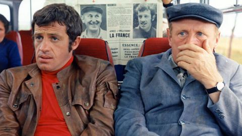 | Le cerveau (1969) | 6.8 | 4.837 | Adventure, Comedy, Crime | 110 | Posebni vlak prevozi NATO-ove tajne zalihe novca od Pariza do Bruxellesa. | Zemlja: Francuska Redatelj: Gérard Oury Scenarij: Gérard Oury, Marcel Jullian, Danièle Thompson Glumci: David Niven, Jean-Paul Belmondo, Bourvil, Eli Wallach |
| pon 09.11. | 14:20 | CineStar 2 | Churchill | Churchill (2017) | 6.0 | 16.476 | Biography, Drama, History | 115 | Kako savezničke snage stoje na južnoj obali Velike Britanije, spremne na invaziju nacistički okupirane Europe, oni čekaju Churchillovu konačnu odluku hoće li se invazija uopće dogoditi. | Redatelj: Jonathan Teplitzky Scenarij: Alex von Tunzelmann Glumci: Brian Cox, Miranda Richardson, John Slattery, Ella Purnell | |
| pon 09.11. | 14:25 | AMC | Ljudi U Crnom Iii | Men in Black³ (2012) | 6.8 | 417.637 | Action, Adventure, Comedy | 95 | Ljudi u crnom 3 nastavak je akcijske komedije s puno avanturističkih elemenata koja i dalje prati zbivanja agenta Jaya i agenta Kaya. Agenti se vraćaju u prošlost, a život agenta K je u opasnosti. | Redatelj: Barry Sonnenfeld Scenarij: Etan Cohen, Lowell Cunningham Glumci: Will Smith, Tommy Lee Jones, Josh Brolin, Jemaine Clement | |
| pon 09.11. | 15:25 | STAR Movies | Priča O Dupinu | Dolphin Tale (2011) | 6.8 | 27.159 | Drama, Family | 140 | Dječak pronalazi dupina koji je bio ozlijeđen u zamci. Oni postaju prijatelji, ali dupinu treba amputirati rep da bi preživio. | Redatelj: Charles Martin Smith Scenarij: Karen Janszen, Noam Dromi Glumci: Harry Connick Jr., Ashley Judd, Nathan Gamble, Morgan Freeman | |
| pon 09.11. | 15:35 | Viasat Kino | Čovjek Pauk | Spider-Man (2002) | 7.5 | 1.003.395 | Action, Adventure, Sci-Fi | 155 | Čovjek-pauk. Tobey Maguire je Peter Parker, zvani Spider-Man. Jedan je od najpopularnijih superjunaka iz stripova svih vremena. U ovoj akcijskoj avanturi nominiranoj za Oscara, gledamo ga na velikom platnu. | Redatelj: Sam Raimi Scenarij: Stan Lee, Steve Ditko, David Koepp Glumci: Tobey Maguire, Willem Dafoe, Kirsten Dunst, James Franco | |
| pon 09.11. | 16:00 | AMC | Kapetan Phillips | Captain Phillips (2013) | 7.8 | 524.598 | Action, Biography, Crime | 125 | Istinita priča o kapetanu Richardu Phillipsu i otmici američkog teretnog broda MV Maersk Alabama 2009. godine od strane somalijskih pirata. | Redatelj: Paul Greengrass Scenarij: Billy Ray, Richard Phillips, Stephan Talty Glumci: Tom Hanks, Catherine Keener, Michael Chernus, David Warshofsky | |
| pon 09.11. | 16:00 | Kino TV | Jacques Cousteau – Odisej | L'odyssée (2016) | 6.6 | 6.634 | Adventure, Biography, Drama | 120 | Godina je 1948. Jacques Cousteau, njegova supruga i dva sina žive 'u raju', u prelijepoj kući s pogledom na Sredozemno more. Međutim, Cousteau sanja samo o avanturi. | Redatelj: Jérôme Salle Scenarij: Jérôme Salle, Laurent Turner, Jean-Michel Cousteau, Albert Falco Glumci: Lambert Wilson, Pierre Niney, Audrey Tautou, Laurent Lucas | |
| pon 09.11. | 16:15 | CineStar Comedy | Plivaj Muški | Le grand bain (2018) | 6.9 | 13.383 | Comedy, Drama, Sport | 120 | Gilles Lellouche donosi zabavni film o grupi muškaraca koji zajedno odluče osnovati nevjerojatan tim muških sinkroniziranih plivača. | Redatelj: Gilles Lellouche Scenarij: Ahmed Hamidi, Julien Lambroschini, Gilles Lellouche Glumci: Mathieu Amalric, Guillaume Canet, Benoît Poelvoorde, Jean-Hugues Anglade | |
| pon 09.11. | 16:35 | CineStar 1 | Stockholmski Sindrom | Stockholm (2018) | 6.1 | 16.172 | Biography, Comedy, Crime | 110 | Dvojica naoružanih pljačkaša su 1973. godine u Stockholmu, u razdoblju od pet dana, držali četvero zaposlenika kao taoce. | Redatelj: Robert Budreau Scenarij: Robert Budreau, Daniel Lang, James Luscombe, Grayson Moore Glumci: Ethan Hawke, Noomi Rapace, Mark Strong, Christopher Heyerdahl | |
| pon 09.11. | 17:45 | STAR Movies | Očinstvo | Fatherhood (2021) | 6.6 | 47.646 | Comedy, Drama | 135 | Otac odgaja svoju djevojčicu kao samohrani roditelj nakon neočekivane smrti supruge koja je umrla dan nakon rođenja njihove kćeri. | Redatelj: Paul Weitz Scenarij: Dana Stevens, Paul Weitz, Matt Logelin Glumci: Kevin Hart, Alfre Woodard, Lil Rel Howery, DeWanda Wise | |
| pon 09.11. | 17:55 | CineStar Action | Terminator 3 | Terminator 3: Rise of the Machines (2003) ? | 6.3 | 442.205 | Action, Sci-Fi | 125 | Deset godina nakon posljednjeg susreta s Terminatorom, John Connor (Nick Stahl) živi kao lutalica kako ga strojevi ne bi pronašli. | Redatelj: Jonathan Mostow Scenarij: John Brancato, Michael Ferris, Tedi Sarafian Glumci: Arnold Schwarzenegger, Nick Stahl, Claire Danes, Kristanna Loken | |
| pon 09.11. | 18:00 | CineStar 2 | Svjetlo Između Oceana | The Light Between Oceans (2016) | 7.2 | 63.831 | Drama, Romance | 140 | Nakon gubitka nekoliko trudnoća, Isabel i njezin suprug Tom, koji radi kao svjetioničar, pronalaze bebu u čamcu. Odluče ne prijaviti pronalazak djeteta te ga odgojiti kao svoje. | Redatelj: Derek Cianfrance Scenarij: Derek Cianfrance, M.L. Stedman Glumci: Michael Fassbender, Alicia Vikander, Rachel Weisz, Bryan Brown | |
| pon 09.11. | 18:05 | AMC | Gola Istina | The Ugly Truth (2009) | 6.4 | 244.182 | Comedy, Romance | 85 | Abby Richter producentica je jutarnjeg televizijskog showa koji otkriva rješenje za sve probleme! Osim kad je u pitanju Abbyjin osobni ljubavni život jer Abby ima niz promašenih veza iza sebe. | Redatelj: Robert Luketic Scenarij: Nicole Eastman, Karen McCullah, Kirsten Smith Glumci: Katherine Heigl, Gerard Butler, Bree Turner, Eric Winter | |
| pon 09.11. | 18:10 | Viasat Kino | Sjećanja Jedne Gejše | Memoirs of a Geisha (2005) | 7.3 | 174.698 | Drama, Romance | 170 | Žena otkriva kako je nadvladala svoje korijene iz ribarskog sela i postala jedna od najslavnijih gejši u Japanu. | Redatelj: Rob Marshall Scenarij: Robin Swicord, Arthur Golden Glumci: Ken Watanabe, Ziyi Zhang, Michelle Yeoh, Li Gong | |
| pon 09.11. | 18:15 | CineStar Comedy | Božićne Zvijezde | Poinsettias for Christmas (2018) ? | 6.5 | 1.721 | Family | 90 | Ellie se vraća kući kako bi pomogla na obiteljskoj farmi "božićnih zvijezda", a usput dobiva i podsjetnik na ono što je doista blisko njezinom srcu. | Redatelj: Christie Will Scenarij: Barbara Kymlicka Glumci: Bethany Joy Lenz, Marcus Rosner, River Angeli, Rhonda Dent | |
| pon 09.11. | 18:25 | CineStar 1 | Paddington | Paddington (2014) | 7.3 | 160.077 | Adventure, Comedy, Family | 110 | Film Paddington prati komične avanture mladog peruanskog medvjeda koji putuje u London u potrazi za domom. | Redatelj: Paul King Scenarij: Paul King, Hamish McColl, Michael Bond Glumci: Hugh Bonneville, Sally Hawkins, Samuel Joslin, Madeleine Harris | |
| pon 09.11. | 18:40 | CineStar Fantasy | Vremenski Policajac | Timecop (1994) | 6.0 | 71.040 | Action, Crime, Sci-Fi | 110 | Policajca Maxa Walkera i njegovu suprugu Melissu napadnu nepoznati zlikovci – on preživi, a ona pogine. | Redatelj: Peter Hyams Scenarij: Mark Verheiden, Mike Richardson Glumci: Jean-Claude Van Damme, Mia Sara, Ron Silver, Bruce McGill | |
| pon 09.11. | 20:00 | CineStar Action | Igre Gladi | The Hunger Games (2012) | 7.2 | 1.101.399 | Action, Adventure, Sci-Fi | 155 | Katniss ima 16 godina i živi s majkom i mlađom sestrom u najsiromašnijem okrugu Panema, ostatku bivših Sjedinjenih Američkih Država. Nekoć davno okruzi su ratovali s Kapitolom koji ih je porazio. | Redatelj: Gary Ross Scenarij: Gary Ross, Suzanne Collins, Billy Ray Glumci: Jennifer Lawrence, Josh Hutcherson, Elizabeth Banks, Liam Hemsworth | |
| pon 09.11. | 20:00 | STAR Movies | Sahara | Sahara (2005) | 6.1 | 110.800 | Action, Adventure, Comedy | 165 | Istraživač Dirk Pitt kreće u životnu pustolovinu, u potragu za izgubljenim bojnim brodom iz Građanskog rata poznatim kao Brod smrti, a pritom u pustinji zapadne Afrike pomaže liječnici koju... | Redatelj: Breck Eisner Scenarij: Clive Cussler, Thomas Dean Donnelly, Joshua Oppenheimer, John C. Richards Glumci: Matthew McConaughey, Penélope Cruz, Steve Zahn, Lambert Wilson | |
| pon 09.11. | 20:15 | Kino TV | Bijesne Indijske Božice | Angry Indian Goddesses (2015) | 6.9 | 3.072 | Comedy, Crime, Drama | 105 | Frieda je modna fotografkinja koja pokušava pronaći svoj umjetnički stil. Svoje prijateljice iz svih dijelova Indije poziva u "sveti grad" Gou da s njima podijeli sretnu vijest – uskoro se udaje! | Redatelj: Pan Nalin Scenarij: Pan Nalin, Subhadra Mahajan, Dilip Shankar, Arsala Qureishi Glumci: Amrit Maghera, Rajshri Deshpande, Pavleen Gujral, Anushka Manchanda | |
| pon 09.11. | 21:00 | Viasat Kino | 12 Godina Ropstva | 12 Years a Slave (2013) | 8.1 | 797.867 | Biography, Drama, History | 170 | U SAD-u prije Građanskog rata, Solomon Northup, slobodni Afroamerikanac iz sjevernog dijela New Yorka, je otet i prodan u ropstvo. | Redatelj: Steve McQueen Scenarij: John Ridley, Solomon Northup Glumci: Chiwetel Ejiofor, Benedict Cumberbatch, Michael Fassbender, Brad Pitt | |
| pon 09.11. | 21:11 | HRT 2 | Crni Ponedjeljak | Margin Call (2011) | 7.1 | 166.540 | Drama, Thriller | 111 | Triler prikazuje ključne figure u jednoj investicijskoj banci dok se suočavaju s početkom velike financijske krize i tragaju za rješenjima koja će umanjiti cjelokupnu štetu. | Redatelj: J.C. Chandor Scenarij: J.C. Chandor Glumci: Kevin Spacey, Paul Bettany, Jeremy Irons, Zachary Quinto | |
| pon 09.11. | 22:05 | HRT 3 | Filmovi Wernera Herzoga: Zelena kobra | 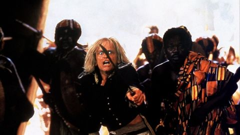 | Cobra Verde (1987) | 6.9 | 9.374 | Adventure, Drama | 108 | Radnja filma zbiva se krajem 18. i početkom 19. stoljeća. Cobra Verde (K. | Zemlja: Gana Redatelj: Werner Herzog Scenarij: Bruce Chatwin, Werner Herzog Glumci: Klaus Kinski, King Ampaw, José Lewgoy, Salvatore Basile |
| pon 09.11. | 22:10 | CineStar 1 | Bili Smo Vojnici | We Were Soldiers (2002) | 7.2 | 161.803 | Action, Drama, History | 150 | U nedjelju, 14. studenog 1965. godine, u 10 sati i 48 minuta, pukovnik Hal Moore i njegov odred spustili su se u dolinu Ia Drang, mjesto koje je u Vijetnamu poznato pod imenom "Dolina smrti". | Redatelj: Randall Wallace Scenarij: Harold G. Moore, Joseph Lee Galloway, Randall Wallace Glumci: Mel Gibson, Madeleine Stowe, Greg Kinnear, Sam Elliott | |
| pon 09.11. | 22:20 | CineStar 2 | Iscjelitelj | The Physician (2013) | 7.2 | 46.113 | Adventure, Drama, History | 160 | Priča je smještena u 11. stoljeće i prati Roba Colea koji ima posebnu moć i može osjetiti kada netko umire. | Redatelj: Philipp Stölzl Scenarij: Noah Gordon, Jan Berger, Philipp Stölzl, Simon Block Glumci: Stellan Skarsgård, Tom Payne, Emma Rigby, Olivier Martinez | |
| pon 09.11. | 22:45 | STAR Movies | Sjevernjak | The Northman (2022) | 7.0 | 308.884 | Action, Adventure, Drama | 170 | Ep pun akcije koji prati mladog vikinškog princa u potrazi za osvetom za očevo ubojstvo. | Redatelj: Robert Eggers Scenarij: Sjón, Robert Eggers Glumci: Alexander Skarsgård, Nicole Kidman, Claes Bang, Anya Taylor-Joy | |
| pon 09.11. | 23:30 | AMC | Underworld | Underworld (2003) | 7.0 | 304.865 | Action, Fantasy, Thriller | 115 | Žestoki sukobi između vampira i Likana ne jenjavaju već stotinu godina. | Redatelj: Len Wiseman Scenarij: Kevin Grevioux, Len Wiseman, Danny McBride Glumci: Kate Beckinsale, Scott Speedman, Michael Sheen, Shane Brolly | |
| pon 09.11. | 23:50 | Viasat Kino | Apokalipsa Danas | Apocalypse Now (1979) | 8.4 | 781.686 | Drama, Mystery, War | 260 | Američki časnik koji služi u Vijetnamu dobije zadatak da ubije odmetnutog pukovnika specijalnih snaga koji sebe smatra bogom. | Redatelj: Francis Ford Coppola Scenarij: John Milius, Francis Ford Coppola, Michael Herr, Joseph Conrad Glumci: Martin Sheen, Marlon Brando, Robert Duvall, Frederic Forrest | |
| uto 10.11. | 00:30 | RTL | Sumorno ljeto | 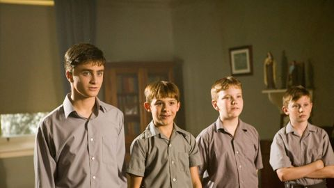 | December Boys (2007) | 6.5 | 12.753 | Drama, Romance | 120 | Četiri dječaka iz sirotišta, Maps (Daniel Radcliffe), Misty (Lee Cormie), Sparks (Christian Byers) i Spit (James Fraser) odlaze na odmor s gospodinom (Jack Thompson) i gospođom McAnsh (Kris McQuade). | Zemlja: Australija Redatelj: Rod Hardy Scenarij: Ronald Kinnoch, Michael Noonan, Marc Rosenberg Glumci: Daniel Radcliffe, Lee Cormie, Christian Byers, James Fraser |
| uto 10.11. | 00:30 | CineStar Comedy | Žene Na Rubu Živčanog Sloma | Mujeres al borde de un ataque de "nervios" (1988) | 7.5 | 51.580 | Comedy, Drama | 85 | Pepa i Ivan su dugogodišnji ljubavnici koji žive od sinkronizacije filmova i reklama. I dok je Pepina vjernost neupitna, u Ivanovu se može posumnjati i to s razlogom. | Redatelj: Pedro Almodóvar Scenarij: Pedro Almodóvar, Jean Cocteau Glumci: Carmen Maura, Antonio Banderas, Julieta Serrano, María Barranco | |
| uto 10.11. | 01:00 | CineStar 2 | Soba | Room (2015) | 8.1 | 486.710 | Drama, Thriller | 120 | Poput svake dobre majke, Ma se posvetila tome da je Jack sretan i siguran, dajući mu puno topline i ljubavi, često radeći tipične stvari poput raznih igara i pričanja priča. | Zemlja: Irska Redatelj: Lenny Abrahamson Scenarij: Emma Donoghue Glumci: Brie Larson, Jacob Tremblay, Joan Allen, Sean Bridgers | |
| uto 10.11. | 01:35 | STAR Movies | Milk | 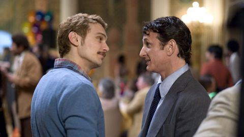 | Milk (2008) | 7.5 | 187.340 | Biography, Drama, History | 140 | Istinita priča o borcu za prava homoseksualaca, Harveyju Milku, aktivistu i političaru koji je postao prvi otvoreno homoseksualni muškarac koji je izabran za neku javnu funkciju u SAD-u. | Zemlja: SAD Redatelj: Gus Van Sant Scenarij: Dustin Lance Black Glumci: Sean Penn, Emile Hirsch, Josh Brolin, Diego Luna |
| uto 10.11. | 01:55 | CineStar Comedy | Mi smo vaši prijatelji | We Are Your Friends (2015) | 6.2 | 43.053 | Drama, Music, Romance | 99 | Radnja se odvija u svijetu elektronske glazbe i holivudskog noćnog života gdje Cole (Efron) kao mladi DJ dane provodi smišljajući planove, a noći radeći na pjesmi koja će zapaliti svijet. | Zemlja: Francuska Redatelj: Max Joseph Scenarij: Max Joseph, Meaghan Oppenheimer, Richard Silverman Glumci: Zac Efron, Emily Ratajkowski, Wes Bentley, Shiloh Fernandez | |
| uto 10.11. | 02:05 | CineStar 1 | Raj | Eden (2014) | 6.4 | 5.655 | Biography, Drama, Music | 141 | Paul, tinejdžer na pariškoj underground sceni na početku '90-ih, s prijateljima okuplja DJ-eve i zajedno poniru u noćni život pun seksa, droge i beskonačne glazbe. | Zemlja: Francuska Redatelj: Mia Hansen-Løve Scenarij: Mia Hansen-Løve, Sven Hansen-Løve Glumci: Félix de Givry, Pauline Etienne, Vincent Macaigne, Hugo Conzelmann | |
| uto 10.11. | 03:00 | CineStar 2 | Državni neprijatelj br.1 | 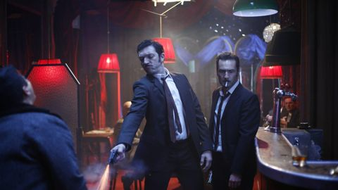 | L'instinct de mort (2008) | 7.5 | 36.980 | Action, Biography, Crime | 113 | Nakon sudjelovanja u Alžirskom ratu, Jacques Mesrine vraća se u roditeljski dom u Clichyju. Uskoro se upušta u svoje prve pljačkaške pohode koji će s vremenom prerasti u ozbiljne zločinačke poduhvate. | Zemlja: Francuska Redatelj: Jean-François Richet Scenarij: Jacques Mesrine, Abdel Raouf Dafri, Jean-François Richet Glumci: Vincent Cassel, Gérard Depardieu, Vincent Piant, Gilles Lellouche |
| uto 10.11. | 03:15 | AMC | Đangova osveta | 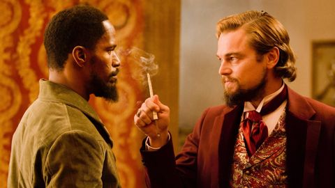 | Django Unchained (2012) | 8.5 | 1.925.450 | Drama, Western | 165 | Uoči Građanskog rata, oslobođeni rob Django udružuje snage s ekscentričnim lovcem na ucjene. | Zemlja: SAD Redatelj: Quentin Tarantino Scenarij: Quentin Tarantino Glumci: Jamie Foxx, Christoph Waltz, Leonardo DiCaprio, Samuel L. Jackson |
| uto 10.11. | 03:55 | STAR Movies | Desperado | Desperado (1995) | 7.1 | 211.729 | Action, Crime, Drama | 105 | Mariachi gitarist postaje revolveraš koji kreće u osvetnički pohod na lokalnog narkobossa. | Zemlja: SAD Redatelj: Robert Rodriguez Scenarij: Robert Rodriguez Glumci: Antonio Banderas, Salma Hayek, Joaquim de Almeida, Cheech Marin | |
| uto 10.11. | 04:00 | Kino TV | Bijesne indijske božice | 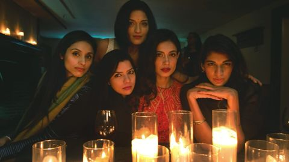 | Angry Indian Goddesses (2015) | 6.9 | 3.072 | Comedy, Crime, Drama | 121 | Frieda je modna fotografkinja koja pokušava pronaći svoj umjetnički stil. Svoje prijateljice iz svih dijelova Indije poziva u "sveti grad" Gou da s njima podijeli sretnu vijest – uskoro se udaje! | Zemlja: Indija Redatelj: Pan Nalin Scenarij: Pan Nalin, Subhadra Mahajan, Dilip Shankar, Arsala Qureishi Glumci: Amrit Maghera, Rajshri Deshpande, Pavleen Gujral, Anushka Manchanda |
| uto 10.11. | 06:35 | CineStar 1 | Visoka moda | Haute couture (2021) | 6.2 | 1.596 | Comedy, Drama | 120 | Esther se nalazi na kraju svoje karijere u ateljeu kuće Dior, jedne od najznačajnijih i najutjecajnijih francuskih modnih kuća. | Zemlja: Francuska Redatelj: Sylvie Ohayon Scenarij: Sylvie Ohayon, Sylvie Verheyde Glumci: Nathalie Baye, Lyna Khoudri, Pascale Arbillot, Claude Perron | |
| uto 10.11. | 06:35 | Viasat Kino | Ponos i predrasude | Pride & Prejudice (2005) | 7.8 | 385.561 | Drama, Romance | 155 | Životi pet sestara u georgijanskoj Engleskoj okrenu se naglavce kada se bogati mladić sa svojim prijateljem doseli u njihovo susjedstvo. Film je temeljen na romanu Jane Austen. | Zemlja: SAD Redatelj: Joe Wright Scenarij: Deborah Moggach, Jane Austen, Emma Thompson Glumci: Keira Knightley, Matthew Macfadyen, Brenda Blethyn, Donald Sutherland | |
| uto 10.11. | 06:50 | STAR Movies | Cura na lošem glasu | 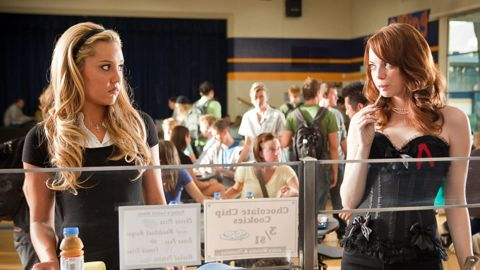 | Easy A (2010) | 7.0 | 449.583 | Comedy, Drama, Romance | 120 | Uzorna srednjoškolka oslanja se na školske glasine kako bi si unaprijedila društveni i financijski status. | Zemlja: SAD Redatelj: Will Gluck Scenarij: Bert V. Royal Glumci: Emma Stone, Penn Badgley, Amanda Bynes, Dan Byrd |
| uto 10.11. | 08:35 | CineStar 1 | Stockholmski sindrom | 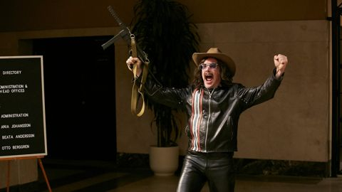 | Stockholm (2018) | 6.1 | 16.172 | Biography, Comedy, Crime | 110 | Film se temelji na istinitoj priči o talačkoj krizi i pljački koja se odvila u Stockholmu 1973. godine, a koja je objavljena godinu dana kasnije u članku New Yorkera pod nazivom The Bank Drama,... | Zemlja: SAD Redatelj: Robert Budreau Scenarij: Robert Budreau, Daniel Lang, James Luscombe, Grayson Moore Glumci: Ethan Hawke, Noomi Rapace, Mark Strong, Christopher Heyerdahl |
| uto 10.11. | 08:50 | STAR Movies | Samo drugarski | Friends with Benefits (2011) | 6.5 | 425.115 | Comedy, Romance | 135 | Mladi par odlučuju svoj odnos pomaknuti na višu razinu bez da postanu par, ali uskoro otkrivaju da uvođenje seksa samo donosi komplikacije. | Zemlja: SAD Redatelj: Will Gluck Scenarij: Keith Merryman, David A. Newman, Will Gluck, Harley Peyton Glumci: Justin Timberlake, Mila Kunis, Patricia Clarkson, Jenna Elfman | |
| uto 10.11. | 09:10 | Viasat Kino | Predvečerje | Evening (2007) | 6.4 | 14.492 | Drama, Romance | 150 | Drama koja istražuje romantičnu prošlost i emocionalnu sadašnjost Ann Grant i njezinih kćeri Constance i Nine. | Zemlja: Njemačka Redatelj: Lajos Koltai Scenarij: Susan Minot, Michael Cunningham Glumci: Claire Danes, Vanessa Redgrave, Natasha Richardson, Toni Collette | |
| uto 10.11. | 10:00 | Kino TV | Do krajeva svijeta | 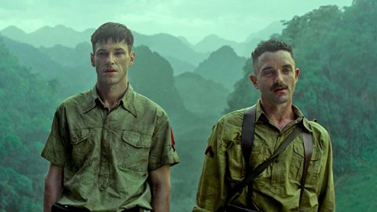 | Les confins du monde (2018) | 6.2 | 1.401 | Adventure, Crime, Drama | 120 | Indokina, 1945. Francuski vojnik Robert jedini je preživio masakr u kojem mu je brat izgubio život. Zaslijepljen osvetom, ponovno se pridružuje snagama u potrazi za ubojicama. | Zemlja: Francuska Redatelj: Guillaume Nicloux Scenarij: Jérôme Beaujour, Guillaume Nicloux Glumci: Gaspard Ulliel, Guillaume Gouix, Lang Khê Tran, Gérard Depardieu |
| uto 10.11. | 10:25 | CineStar 1 | Sudbina je rekla svoje | 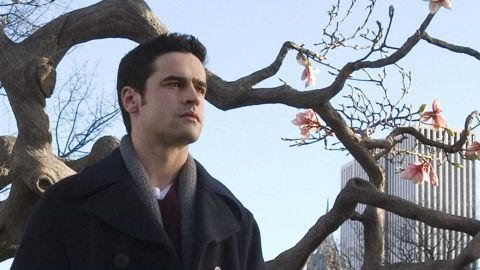 | My Sassy Girl (2008) | 6.2 | 21.096 | Comedy, Drama, Romance | 110 | U ovoj nekonvencionalnoj romanci, Charlie je neupadljivi momak sa Srednjega zapada čiji je život uredno isplaniran. | Zemlja: SAD Redatelj: Yann Samuell Scenarij: Victor Levin, Kwak Jae-young, Ho-sik Kim Glumci: Elisha Cuthbert, Jesse Bradford, Austin Basis, Chris Sarandon |
| uto 10.11. | 10:35 | CineStar Action | Terminator 3 | Terminator 3: Rise of the Machines (2003) ? | 6.3 | 442.205 | Action, Sci-Fi | 125 | Deset godina nakon posljednjeg susreta s Terminatorom, John Connor (Nick Stahl) živi kao lutalica kako ga strojevi ne bi pronašli. | Zemlja: SAD Redatelj: Jonathan Mostow Scenarij: John Brancato, Michael Ferris, Tedi Sarafian Glumci: Arnold Schwarzenegger, Nick Stahl, Claire Danes, Kristanna Loken | |
| uto 10.11. | 11:05 | STAR Movies | Arthur Božić | Arthur Christmas (2011) | 7.1 | 74.463 | Adventure, Animation, Comedy | 120 | Djed Mrazov nespretni sin Arthur dobiva misiju da s ocem svetog Nika u manje od 2 sata mladoj djevojci da poklon kojeg su izgubili. | Zemlja: SAD Redatelj: Sarah Smith, Barry Cook Scenarij: Peter Baynham, Sarah Smith Glumci: James McAvoy, Hugh Laurie, Bill Nighy, Jim Broadbent | |
| uto 10.11. | 11:40 | Viasat Kino | Sedam godina u Tibetu | Seven Years in Tibet (1997) | 7.1 | 171.208 | Adventure, Biography, Drama | 170 | Heinrich Harrer putuje na Himalaju kako bi planinario. No, izbija rat pa bježi u Tibet gdje se sprijatelji s mladim Dalaj Lamom. | Zemlja: SAD Redatelj: Jean-Jacques Annaud Scenarij: Heinrich Harrer, Becky Johnston Glumci: Brad Pitt, David Thewlis, BD Wong, Danny Denzongpa | |
| uto 10.11. | 12:00 | Kino TV | Otmica premijera | 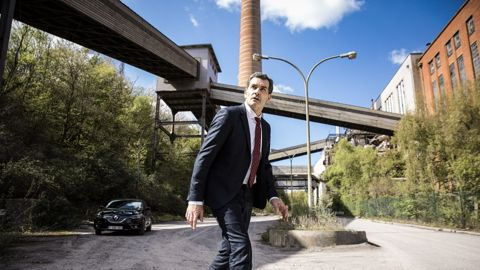 | De Premier (2016) | 6.2 | 3.084 | Thriller | 120 | Prije susreta s američkom predsjednicom, automobil belgijskog premijera Michela Devreesea je napadnut. | Zemlja: Belgija Redatelj: Erik Van Looy Scenarij: Erik Van Looy, Carl Joos, Robin Pront Glumci: Koen De Bouw, Tine Reymer, Charlotte Vandermeersch, Dirk Roofthooft |
| uto 10.11. | 12:05 | CineStar 2 | Svjetlo između oceana | 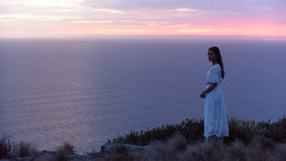 | The Light Between Oceans (2016) | 7.2 | 63.831 | Drama, Romance | 140 | Nakon gubitka nekoliko trudnoća, Isabel i njezin suprug Tom, koji radi kao svjetioničar, pronalaze bebu u čamcu. Odluče ne prijaviti pronalazak djeteta te ga odgojiti kao svoje. | Zemlja: SAD Redatelj: Derek Cianfrance Scenarij: Derek Cianfrance, M.L. Stedman Glumci: Michael Fassbender, Alicia Vikander, Rachel Weisz, Bryan Brown |
| uto 10.11. | 12:15 | CineStar 1 | Paddington | Paddington (2014) | 7.3 | 160.077 | Adventure, Comedy, Family | 110 | Film Paddington prati komične avanture mladog peruanskog medvjeda koji putuje u London u potrazi za domom. | Zemlja: Ujedinjeno Kraljevstvo Redatelj: Paul King Scenarij: Paul King, Hamish McColl, Michael Bond Glumci: Hugh Bonneville, Sally Hawkins, Samuel Joslin, Madeleine Harris | |
| uto 10.11. | 12:40 | CineStar Action | Igre gladi | The Hunger Games (2012) | 7.2 | 1.101.399 | Action, Adventure, Sci-Fi | 155 | Katniss ima 16 godina i živi s majkom i mlađom sestrom u najsiromašnijem okrugu Panema, ostatku bivših Sjedinjenih Američkih Država. Nekoć davno okruzi su ratovali s Kapitolom koji ih je porazio. | Zemlja: SAD Redatelj: Gary Ross Scenarij: Gary Ross, Suzanne Collins, Billy Ray Glumci: Jennifer Lawrence, Josh Hutcherson, Elizabeth Banks, Liam Hemsworth | |
| uto 10.11. | 12:40 | CineStar Fantasy | Vremenski policajac | Timecop (1994) | 6.0 | 71.040 | Action, Crime, Sci-Fi | 110 | Policajca Maxa Walkera i njegovu suprugu Melissu napadnu nepoznati zlikovci – on preživi, a ona pogine. | Zemlja: Japan Redatelj: Peter Hyams Scenarij: Mark Verheiden, Mike Richardson Glumci: Jean-Claude Van Damme, Mia Sara, Ron Silver, Bruce McGill | |
| uto 10.11. | 13:05 | STAR Movies | Kronike Spiderwick | The Spiderwick Chronicles (2008) | 6.5 | 110.667 | Action, Adventure, Drama | 125 | Obitelj Grace preseli se na staro zapušteno imanje Spiderwick, gdje se ubrzo počnu događati tajanstvene stvari. Svi pomisle da iza njih stoji dječak Jared koji je inače sklon nestašlucima. | Zemlja: SAD Redatelj: Mark Waters Scenarij: Karey Kirkpatrick, David Berenbaum, John Sayles, Tony DiTerlizzi Glumci: Freddie Highmore, Mary-Louise Parker, Sarah Bolger, Joan Plowright | |
| uto 10.11. | 13:45 | AMC | Divlja rijeka | The River Wild (1994) | 6.5 | 54.507 | Adventure, Crime, Thriller | 105 | Skiperica za rafting Gail sukobi se s dvojicom naoružanih ubojica tijekom veslanja na vrlo opasnoj rijeci. | Zemlja: SAD Redatelj: Curtis Hanson Scenarij: Denis O'Neill Glumci: Meryl Streep, David Strathairn, Kevin Bacon, Joseph Mazzello | |
| uto 10.11. | 14:00 | HRT 3 | Čovjek u bijelom odijelu | The Man in the White Suit (1951) | 7.2 | 11.882 | Comedy, Drama, Sci-Fi | 83 | Sidney Stratton, pomoćni radnik u laboratoriju jedne tvornice tekstila, potajno nastoji izumiti novu tkaninu koja se nikad neće ni uprljati ni istrošiti. | Zemlja: Ujedinjeno Kraljevstvo Redatelj: Alexander Mackendrick Scenarij: Roger MacDougall, John Dighton, Alexander Mackendrick Glumci: Alec Guinness, Joan Greenwood, Cecil Parker, Michael Gough | |
| uto 10.11. | 14:00 | Kino TV | Tajna dvorišne rasprodaje: Smrtonosna soba | Garage Sale Mystery: The Deadly Room (2015) | 7.0 | 1.560 | Crime, Drama, Mystery | 120 | Jenniferina prijateljica Adrianna ima problema s prodajom viktorijanske vile zbog priče da u kući postoji tajna soba te da nitko ne može preživjeti noć u kući. | Zemlja: Kanada Redatelj: Peter DeLuise Scenarij: Walter Klenhard, Suzi Weinert Glumci: Lori Loughlin, Sarah Strange, Steve Bacic, Brendan Meyer | |
| uto 10.11. | 14:01 | HRT 3 | Čovjek u bijelom odijelu | The Man in the White Suit (1951) | 7.2 | 11.882 | Comedy, Drama, Sci-Fi | 82 | Sidney Stratton, pomoćni radnik u laboratoriju jedne tvornice tekstila, potajno nastoji izumiti novu tkaninu koja se nikad neće ni uprljati ni istrošiti. | Zemlja: Ujedinjeno Kraljevstvo Redatelj: Alexander Mackendrick Scenarij: Roger MacDougall, John Dighton, Alexander Mackendrick Glumci: Alec Guinness, Joan Greenwood, Cecil Parker, Michael Gough | |
| uto 10.11. | 14:05 | CineStar 1 | Blizu horizonta | Dem Horizont so nah (2019) ? | 6.6 | 2.364 | Drama, Romance | 130 | Istinita priča o dubokoj ljubavi. Priča o povjerenju, hrabrosti, boli, očaju i snazi da se nešto pusti. Jessica vodi jednostavan život i pred njom je obećavajuća budućnost. | Zemlja: Francuska Redatelj: Tim Trachte Scenarij: Ariane Schröder, Jessica Koch Glumci: Luna Wedler, Jannik Schümann, Luise Befort, Victoria Mayer | |
| uto 10.11. | 14:30 | Viasat Kino | Željezna dama | The Iron Lady (2011) | 6.4 | 117.678 | Biography, Drama | 130 | Starija Margaret Thatcher zamišlja da razgovara sa svojim nedavno preminulim suprugom pokušavajući se pomiriti s njegovom smrću. | Zemlja: Ujedinjeno Kraljevstvo Redatelj: Phyllida Lloyd Scenarij: Abi Morgan Glumci: Meryl Streep, Jim Broadbent, Olivia Colman, Richard E. Grant | |
| uto 10.11. | 15:10 | STAR Movies | Priča o dupinu 2 | Dolphin Tale 2 (2014) | 6.4 | 10.421 | Drama, Family | 130 | Film će ispričati još jednu istinitu priču inspiriranu životom dupina Wintera, ali ona uključuje i novo mladunče dupina po imenu Hope koje je spasio morski akvarij Clearwater 2010. godine. | Zemlja: SAD Redatelj: Charles Martin Smith Scenarij: Charles Martin Smith, Karen Janszen, Noam Dromi Glumci: Harry Connick Jr., Ashley Judd, Kris Kristofferson, Morgan Freeman | |
| uto 10.11. | 16:00 | Kino TV | Minamata | Minamata (2020) | 7.2 | 25.394 | Drama | 120 | Triput nominiran za nagradu Oscar Johnny Depp glumi proslavljenog ratnog fotografa W. Eugenea Smitha u istinitoj priči o Davidu protiv Golijata u kojoj Smith dolazi u sukob protiv moćne... | Zemlja: Ujedinjeno Kraljevstvo Redatelj: Andrew Levitas Scenarij: David Kessler, Stephen Deuters, Andrew Levitas, Jason Forman Glumci: Johnny Depp, Hiroyuki Sanada, Minami, Bill Nighy | |
| uto 10.11. | 16:25 | CineStar 2 | Juraj i hrabri vitezovi | Justin and the Knights of Valour (2013) | 6.0 | 6.790 | Adventure, Animation, Comedy | 110 | Juraj živi u velikom kraljevstvu i sanja da će jednoga dana postati hrabar vitez, kakav je bio njegov djed. | Zemlja: Nizozemska Redatelj: Manuel Sicilia Scenarij: Manuel Sicilia, Matthew Jacobs, Stephen Hughes Glumci: Freddie Highmore, Antonio Banderas, Michael Culkin, Tamsin Egerton | |
| uto 10.11. | 16:40 | Viasat Kino | Spajdermen 2 | Spider-Man 2 (2004) | 7.5 | 813.766 | Action, Adventure, Sci-Fi | 155 | Čovjek-pauk 2. Sam Raimi režira ovu Oscarom nagrađenu akcijsku avanturu u kojoj glumi Tobey Maguire Petera Parkera koji pokušava pronaći ravnotežu između života studenta i superjunaka. | Zemlja: SAD Redatelj: Sam Raimi Scenarij: Stan Lee, Steve Ditko, Alfred Gough, Miles Millar Glumci: Tobey Maguire, Kirsten Dunst, James Franco, Alfred Molina | |
| uto 10.11. | 17:20 | STAR Movies | Joy | Joy (2015) | 6.6 | 153.777 | Biography, Drama | 160 | Mlada žena gradi poslovnu dinastiju koja će se protegnuti kroz četiri generacije. Saveznici postaju protivnici, a protivnici saveznici dok bogata mašta Joy vodi kroz svijet nemilosrdne trgovine. | Zemlja: SAD Redatelj: David O. Russell Scenarij: David O. Russell, Annie Mumolo Glumci: Jennifer Lawrence, Robert De Niro, Bradley Cooper, Édgar Ramírez | |
| uto 10.11. | 17:30 | STAR Movies | Joy | Joy (2015) | 6.6 | 153.777 | Biography, Drama | 150 | Mlada žena gradi poslovnu dinastiju koja će se protegnuti kroz četiri generacije. Saveznici postaju protivnici, a protivnici saveznici dok bogata mašta Joy vodi kroz svijet nemilosrdne trgovine. | Redatelj: David O. Russell Scenarij: David O. Russell, Annie Mumolo Glumci: Jennifer Lawrence, Robert De Niro, Bradley Cooper, Édgar Ramírez | |
| uto 10.11. | 17:40 | CineStar Comedy | Božić s Tuckerom | Christmas with Tucker (2013) | 6.9 | 912 | Drama, Family | 95 | George McCray je 13-g. dječak koji se bori s nedavnim gubitkom oca koji je stradao u nesreći s traktorom na njihovoj farmi u Kansasu. | Zemlja: Kanada Redatelj: Larry A. McLean Scenarij: Greg Kincaid, Dave Alan Johnson Glumci: James Brolin, Gage Munroe, Josie Bissett, Barbara Gordon | |
| uto 10.11. | 18:00 | CineStar Action | Duh u oklopu | Ghost in the Shell (2017) | 6.3 | 242.685 | Action, Crime, Drama | 120 | "Duh u oklopu" temeljen je na međunarodno priznatom SF naslijeđu, japanskom animiranom filmu iz 1995. godine, kojeg je režirao Mamoru Oshii prema istoimenoj mangi iz 1991. godine. | Zemlja: SAD Redatelj: Rupert Sanders Scenarij: Shirow Masamune, Jamie Moss, William Wheeler, Ehren Kruger Glumci: Scarlett Johansson, Pilou Asbæk, Takeshi Kitano, Juliette Binoche | |
| uto 10.11. | 18:00 | Kino TV | Strojovođa u potrazi za ljubavlju | The Bra (2018) | 6.6 | 1.344 | Comedy, Drama | 135 | Vozač vlakova Nurlan posljednji put prije mirovine putuje u Baku. Na putu kroz kvartove grada, njegov vlak otkida plavi grudnjak sa štrika za sušenje. | Zemlja: Njemačka Redatelj: Veit Helmer Scenarij: Leonie Geisinger, Veit Helmer Glumci: Predrag, Manojlović, Paz Vega, Denis Lavant | |
| uto 10.11. | 18:15 | CineStar 1 | Medvjedić Paddington 2 | Paddington 2 (2017) | 7.8 | 117.321 | Adventure, Comedy, Family | 120 | Omiljeni lik kultne engleske serije slikovnica, medvjedić Paddington, vraća se na velika platna s novim avanturama. | Zemlja: SAD Redatelj: Paul King Scenarij: Paul King, Simon Farnaby, Michael Bond, Mark Burton Glumci: Ben Whishaw, Hugh Bonneville, Sally Hawkins, Hugh Grant | |
| uto 10.11. | 18:15 | CineStar Fantasy | Himalaja | Himalaya (2015) | 6.4 | 1.446 | Adventure, Biography, Drama | 135 | Temeljeno na istinitom događaju poznatog planinara koji kreće na Everest kako bi vratio pokojna tijela svojih penjača te se suočava s najvećim izazovom u životu. | Zemlja: Južna Koreja Redatelj: Lee Seok-hoon Scenarij: Jieun-min Suo, JK Youn, Lee Seok-hoon, Dae-gyu Kang Glumci: Lee Chae Yun, Kim In-kwon, Ji-Hong Park, Woo Jung | |
| uto 10.11. | 18:30 | AMC | Murjaci s klupe | The Other Guys (2010) | 6.7 | 314.797 | Action, Comedy, Crime | 100 | Kada se ukaže prilika dvojici detektiva da oni budu ti koji će riješiti slučaj, hoće li uspjeti? | Zemlja: SAD Redatelj: Adam McKay Scenarij: Adam McKay, Chris Henchy Glumci: Will Ferrell, Derek Jeter, Mark Wahlberg, Eva Mendes | |
| uto 10.11. | 19:15 | Viasat Kino | Frka s Dick i Jane | Fun with Dick and Jane (2005) | 6.2 | 164.938 | Comedy, Crime | 105 | Menadžer srednjeg ranga i njegova supruga žive dobar život sve dok ga izvršni direktor tvrtke ne postavi za javno lice katastrofe. Nezaposleni i bez ušteđevine, par se okreće kriminalu. | Zemlja: SAD Redatelj: Dean Parisot Scenarij: Judd Apatow, Nicholas Stoller, Gerald Gaiser, David Giler Glumci: Jim Carrey, Téa Leoni, Alec Baldwin, Richard Jenkins | |
| uto 10.11. | 19:15 | CineStar Comedy | Srednja škola: Najgore razdoblje mog života | Middle School: The Worst Years of My Life (2016) | 6.1 | 11.284 | Comedy, Family | 90 | Priča prati život Rafea Khatchadoriana, koji i bez problema u srednjoj školi ima dovoljno problema kod kuće. Srećom, napravio je plan za najbolju godinu u povijesti. | Zemlja: SAD Redatelj: Steve Carr Scenarij: Chris Bowman, Hubbel Palmer, Kara Holden, James Patterson Glumci: Griffin Gluck, Lauren Graham, Alexa Nisenson, Andy Daly | |
| uto 10.11. | 20:00 | CineStar Action | Igre gladi: Plamen | The Hunger Games: Catching Fire (2013) | 7.5 | 787.542 | Action, Adventure, Romance | 155 | Drugi nastavak trilogije o mladoj junakinji koja se u totalitarnom društvu opet mora boriti na život i smrt. | Zemlja: SAD Redatelj: Francis Lawrence Scenarij: Simon Beaufoy, Michael Arndt, Suzanne Collins Glumci: Jennifer Lawrence, Liam Hemsworth, Josh Hutcherson, Woody Harrelson | |
| uto 10.11. | 20:00 | STAR Movies | Batman | Batman (1989) | 7.5 | 438.088 | Crime | 160 | Vitez tame iz Gotham Cityja započinje svoj rat protiv zločina a njegov prvi veliki neprijatelj je Joker, ubojiti manijak koji izgleda poput klauna. | Zemlja: Ujedinjeno Kraljevstvo Redatelj: Tim Burton Scenarij: Bob Kane, Sam Hamm, Warren Skaaren Glumci: Michael Keaton, Jack Nicholson, Kim Basinger, Billy Dee Williams | |
| uto 10.11. | 20:10 | AMC | S.W.A.T. | S.W.A.T. (2003) | 6.1 | 161.306 | Action, Adventure, Crime | 110 | S.W.A.T.. Osramoćeni policajac dobije priliku za iskupljenje kad se pridruži specijalnoj jedinici za borbu protiv kriminala. | Zemlja: SAD Redatelj: Clark Johnson Scenarij: Robert Hamner, Ron Mita, Jim McClain, David Ayer Glumci: Colin Farrell, Samuel L. Jackson, Michelle Rodriguez, LL Cool J | |
| uto 10.11. | 20:15 | Kino TV | Raspoloženi za ljubav | Fa yeung nin wah (2000) | 8.0 | 192.801 | Drama, Romance | 105 | Film "Raspoloženi za ljubav" prati sudbinu dvoje ljudi, koji istoga dana useljavaju u jednu zgradu u Hong Kongu. Ubrzo ih zbliži saznanje da su im supružnici nevjerni. | Zemlja: Burkina Faso Redatelj: Wong Kar-Wai Scenarij: Wong Kar-Wai Glumci: Maggie Cheung, Tony Leung Chiu-wai, Ping Lam Siu, Rebecca Pan | |
| uto 10.11. | 20:20 | CineStar 2 | Koliba | The Shack (2017) | 6.3 | 43.391 | Drama, Fantasy | 140 | Iako je to trebalo biti zabavno obiteljsko kampiranje, druženje Macka i njegove djece pretvorilo se u pravi užas. | Zemlja: SAD Redatelj: Stuart Hazeldine Scenarij: John Fusco, Andrew Lanham, Destin Daniel Cretton, William P. Young Glumci: Sam Worthington, Octavia Spencer, Tim McGraw, Avraham Aviv Alush | |
| uto 10.11. | 20:45 | CineStar Comedy | Pas | Dog (2022) | 6.5 | 53.504 | Comedy, Drama | 100 | Bivšem vojnom rendžeru Briggsu je dodijeljeno da se brine o vojno obučenom psu palog vojnika. Njegova je misija transportirati psa na drugi kraj zemlje kako bi prisustvovali vojničkom sprovodu. | Zemlja: SAD Redatelj: Reid Carolin, Channing Tatum Scenarij: Reid Carolin, Brett Rodriguez Glumci: Channing Tatum, Jane Adams, Kevin Nash, Q'orianka Kilcher | |
| uto 10.11. | 21:00 | Viasat Kino | 21 | 21 (2008) | 6.8 | 283.839 | Crime, Drama, Thriller | 160 | Adaptirano prema bestseleru Bena Mezricha "Raspad sistema", ovo je istinita priča o šest genijalnih studenata koji su koristili mozak kako bi pobijedili unatoč dobrim šansama. | Zemlja: SAD Redatelj: Robert Luketic Scenarij: Peter Steinfeld, Allan Loeb, Ben Mezrich Glumci: Jim Sturgess, Kate Bosworth, Laurence Fishburne, Kevin Spacey | |
| uto 10.11. | 22:00 | HRT 3 | Vječni ciklus komedije: Naslovna stranica | The Front Page (1974) | 7.3 | 16.932 | Comedy, Drama, Romance | 103 | Hildy Johnson odličan je novinar koji se sprema dati otkaz kako bi se mogao posvetiti privatnom životu. Njegovom šefu nimalo se ne sviđa ta ideja i on na sve načine pokušava zadržati Johnsona. | Zemlja: SAD Redatelj: Billy Wilder Scenarij: Ben Hecht, Charles MacArthur, Billy Wilder, I.A.L. Diamond Glumci: Jack Lemmon, Walter Matthau, Susan Sarandon, Vincent Gardenia | |
| uto 10.11. | 22:00 | AMC | Torrente 2: Misija u Marbelli | Torrente 2: Misión en Marbella (2001) | 6.4 | 9.216 | Action, Comedy, Crime | 95 | Torrente sada živi u Marbelli; nakon što je izgubio sav novac, vraća se privatnom istraživanju. | Zemlja: Španjolska Redatelj: Santiago Segura Scenarij: Santiago Segura Glumci: Gabino Diego, Tony Leblanc, José Luis Moreno, Inés Sastre | |
| uto 10.11. | 23:30 | Nova TV | Istjerivači duhova: Ledena prijetnja | Ghostbusters: Frozen Empire (2024) | 6.1 | 108.965 | Action, Adventure, Comedy | 115 | Nakon otkrića tajanstvenog artefakta koji oslobađa opasnu silu, nova i stara generacija Istjerivača duhova mora udružiti snage kako bi zaštitila New York od nadnaravne katastrofe. | Zemlja: SAD Redatelj: Gil Kenan Scenarij: Gil Kenan, Jason Reitman, Ivan Reitman, Dan Aykroyd Glumci: Paul Rudd, Carrie Coon, Finn Wolfhard, Mckenna Grace | |
| uto 10.11. | 23:35 | AMC | Univerzalan vojnik | Universal Soldier (1992) | 6.1 | 103.117 | Action, Sci-Fi | 95 | Nakon smrti, Luc i Scott bivaju pretvoreni u smrtonosne vojne robote u tajnom vladinom projektu "UniSols". | Zemlja: SAD Redatelj: Roland Emmerich Scenarij: Richard Rothstein, Christopher Leitch, Dean Devlin Glumci: Jean-Claude Van Damme, Dolph Lundgren, Ally Walker, Ed O'Ross | |
| uto 10.11. | 23:40 | Viasat Kino | Sjećanja jedne gejše | Memoirs of a Geisha (2005) | 7.3 | 174.698 | Drama, Romance | 180 | Žena otkriva kako je nadvladala svoje korijene iz ribarskog sela i postala jedna od najslavnijih gejši u Japanu. | Zemlja: SAD Redatelj: Rob Marshall Scenarij: Robin Swicord, Arthur Golden Glumci: Ken Watanabe, Ziyi Zhang, Michelle Yeoh, Li Gong | |
| uto 10.11. | 23:55 | Nova TV | Istjerivači Duhova: Ledena Prijetnja | Ghostbusters: Frozen Empire (2024) | 6.1 | 108.965 | Action, Adventure, Comedy | 130 | Nakon otkrića tajanstvenog artefakta koji oslobađa opasnu silu, nova i stara generacija Istjerivača duhova mora udružiti snage kako bi zaštitila New York od nadnaravne katastrofe. | Redatelj: Gil Kenan Scenarij: Gil Kenan, Jason Reitman, Ivan Reitman, Dan Aykroyd Glumci: Paul Rudd, Carrie Coon, Finn Wolfhard, Mckenna Grace | |
| sri 11.11. | 00:11 | HRT 3 | Čovjek U Bijelom Odijelu | The Man in the White Suit (1951) | 7.2 | 11.882 | Comedy, Drama, Sci-Fi | 82 | Sidney Stratton, pomoćni radnik u laboratoriju jedne tvornice tekstila, potajno nastoji izumiti novu tkaninu koja se nikad neće ni uprljati ni istrošiti. | Redatelj: Alexander Mackendrick Scenarij: Roger MacDougall, John Dighton, Alexander Mackendrick Glumci: Alec Guinness, Joan Greenwood, Cecil Parker, Michael Gough | |
| sri 11.11. | 00:30 | CineStar 2 | Hrvač | The Wrestler (2008) | 7.9 | 333.492 | Drama, Sport | 110 | Nekadašnja hrvačka zvijezda Randy "The Ram" Robinson na zalazu je karijere te pokušava započeti novo poglavlje života. Ipak, ne može se tek tako oduprijeti prilici za povratak u veliki ring. | Redatelj: Darren Aronofsky Scenarij: Robert Siegel Glumci: Mickey Rourke, Marisa Tomei, Evan Rachel Wood, Mark Margolis | |
| sri 11.11. | 02:15 | Kino TV | Strojovođa u potrazi za ljubavlju | The Bra (2018) | 6.6 | 1.344 | Comedy, Drama | 105 | Vozač vlakova Nurlan posljednji put prije mirovine putuje u Baku. Na putu kroz kvartove grada, njegov vlak otkida plavi grudnjak sa štrika za sušenje. | Zemlja: Njemačka Redatelj: Veit Helmer Scenarij: Leonie Geisinger, Veit Helmer Glumci: Predrag, Manojlović, Paz Vega, Denis Lavant | |
| sri 11.11. | 02:20 | CineStar 2 | Državni neprijatelj br.1 (Drugi dio) | L'instinct de mort (2008) | 7.5 | 36.980 | Action, Biography, Crime | 132 | Nastavak biografskog trilera o najvećem gangsteru svih vremena. Tijekom cijeloga života Jacques Mesrine bio je proglašen državnim neprijateljem br. | Zemlja: Francuska Redatelj: Jean-François Richet Scenarij: Jacques Mesrine, Abdel Raouf Dafri, Jean-François Richet Glumci: Vincent Cassel, Ludivine Sagnier, Mathieu Amalric, Samuel Le Bihan | |
| sri 11.11. | 02:35 | AMC | Drakula | Bram Stoker's Dracula (1992) | 7.4 | 273.354 | Fantasy, Horror, Romance | 120 | Stoljećima star vampir, grof Drakula dolazi u Englesku da bi zaveo Minu Murray, zaručnicu svog odvjetnika Jonathana Harkera te unio potpunu pometnju u stranoj zemlji. | Zemlja: SAD Redatelj: Francis Ford Coppola Scenarij: Bram Stoker, James V. Hart Glumci: Gary Oldman, Winona Ryder, Anthony Hopkins, Keanu Reeves | |
| sri 11.11. | 02:40 | Viasat Kino | Predvečerje | Evening (2007) | 6.4 | 14.492 | Drama, Romance | 170 | Drama koja istražuje romantičnu prošlost i emocionalnu sadašnjost Ann Grant i njezinih kćeri Constance i Nine. | Zemlja: Njemačka Redatelj: Lajos Koltai Scenarij: Susan Minot, Michael Cunningham Glumci: Claire Danes, Vanessa Redgrave, Natasha Richardson, Toni Collette | |
| sri 11.11. | 03:20 | CineStar Action | Vuk pred vratima | O Lobo Atrás da Porta (2013) ? | 7.4 | 6.178 | Crime, Drama, Thriller | 111 | Smješten u predgrađu Rio de Janeira, "Vuk pred vratima" napeta je priča o otetom djetetu i užasu roditelja koji ostaju iza njega. | Zemlja: Brazil Redatelj: Fernando Coimbra Scenarij: Fernando Coimbra Glumci: Thalita Carauta, Juliano Cazarré, Milhem Cortaz, Antonio dos Santos | |
| sri 11.11. | 04:00 | Kino TV | Raspoloženi za ljubav | Fa yeung nin wah (2000) | 8.0 | 192.801 | Drama, Romance | 121 | Film "Raspoloženi za ljubav" prati sudbinu dvoje ljudi, koji istoga dana useljavaju u jednu zgradu u Hong Kongu. Ubrzo ih zbliži saznanje da su im supružnici nevjerni. | Zemlja: Burkina Faso Redatelj: Wong Kar-Wai Scenarij: Wong Kar-Wai Glumci: Maggie Cheung, Tony Leung Chiu-wai, Ping Lam Siu, Rebecca Pan | |
| sri 11.11. | 04:05 | STAR Movies | Amonit | Ammonite (2020) | 6.5 | 27.377 | Drama, History, Romance | 115 | 1840-ih u Engleskoj, hvaljena, ali zanemarena lovkinja na fosile Mary Anning i mlada žena poslana na oporavak uz more razvijaju intenzivnu vezu koja im je zauvijek promijenila živote. | Zemlja: Ujedinjeno Kraljevstvo Redatelj: Francis Lee Scenarij: Francis Lee Glumci: Kate Winslet, Saoirse Ronan, Gemma Jones, Fiona Shaw | |
| sri 11.11. | 05:30 | Viasat Kino | Scott Pilgrim protiv svijeta | Scott Pilgrim vs. the World (2010) | 7.5 | 502.787 | Action, Comedy, Fantasy | 135 | Da bi osvojio srce svoje nove djevojke, Scott Pilgrim mora pobijediti njezinih sedam bivših momaka. | Zemlja: SAD Redatelj: Edgar Wright Scenarij: Michael Bacall, Edgar Wright, Bryan Lee O'Malley Glumci: Michael Cera, Mary Elizabeth Winstead, Kieran Culkin, Chris Evans | |
| sri 11.11. | 06:45 | STAR Movies | Očinstvo | Fatherhood (2021) | 6.6 | 47.646 | Comedy, Drama | 135 | Otac odgaja svoju djevojčicu kao samohrani roditelj nakon neočekivane smrti supruge koja je umrla dan nakon rođenja njihove kćeri. | Zemlja: SAD Redatelj: Paul Weitz Scenarij: Dana Stevens, Paul Weitz, Matt Logelin Glumci: Kevin Hart, Alfre Woodard, Lil Rel Howery, DeWanda Wise | |
| sri 11.11. | 06:55 | AMC | Letači | Flyboys (2006) | 6.5 | 46.759 | Action, Drama, History | 125 | Pustolovine Lafayette Escadrille, mladih Amerikanaca koji su se prijavili za francusku vojsku prije ulaska SAD-a u Prvi svjetski rat i koji su postali prvi borbeni piloti u zemlji. | Zemlja: Ujedinjeno Kraljevstvo Redatelj: Tony Bill Scenarij: Phil Sears, Blake T. Evans, David S. Ward Glumci: James Franco, Jean Reno, Martin Henderson, Jennifer Decker | |
| sri 11.11. | 07:45 | Viasat Kino | Pusti vodu da miševi odu | Flushed Away (2006) | 6.6 | 152.315 | Action, Adventure, Animation | 110 | Ovo je priča o štakoru iz gornjeg dijela grada kojeg bace u WC školjku iz njegovog penthousea pa završi u kanalizaciji Londona gdje mora usvojiti skroz novi i drugačiji način života. | Zemlja: Australija Redatelj: David Bowers, Sam Fell Scenarij: Dick Clement, Ian La Frenais, Christopher Lloyd, Joe Keenan Glumci: Hugh Jackman, Kate Winslet, Ian McKellen, Jean Reno | |
| sri 11.11. | 09:00 | STAR Movies | Voliš li pse? | Must Love Dogs (2005) | 6.0 | 34.556 | Comedy, Romance | 125 | Voliš li pse?. Odgajateljica od četrdeset i nešto godina traži od osobnih kontakata promjenu ritma i odnosa, s urnebesnim rezultatima. | Zemlja: SAD Redatelj: Gary David Goldberg Scenarij: Claire Cook, Gary David Goldberg Glumci: Diane Lane, John Cusack, Elizabeth Perkins, Christopher Plummer | |
| sri 11.11. | 10:35 | CineStar 2 | Moj plus jedan | Plus One (2019) | 6.6 | 20.473 | Comedy, Drama, Romance | 110 | Svi su doživjeli ili će tek doživjeti trenutak u životu kada se njihovi prijatelji, naizgled svi istovremeno, odluče vjenčati. | Zemlja: SAD Redatelj: Jeff Chan, Andrew Rhymer Scenarij: Jeff Chan, Andrew Rhymer Glumci: Maya Erskine, Jack Quaid, Ed Begley Jr., Alex Anfanger | |
| sri 11.11. | 10:40 | AMC | Ruby Red | Rubinrot (2013) | 6.0 | 9.379 | Adventure, Drama, Family | 110 | Na svoj 16. rođendan, Gwendolyn Shepherd doznaje da je umjesto svog rođaka naslijedila rijedak gen koji joj omogućuje putovanje kroz vrijeme. | Zemlja: Njemačka Redatelj: Felix Fuchssteiner Scenarij: Katharina Schöde, Kerstin Gier Glumci: Maria Ehrich, Jannis Niewöhner, Veronica Ferres, Uwe Kockisch | |
| sri 11.11. | 10:55 | CineStar Action | Duh u oklopu | Ghost in the Shell (2017) | 6.3 | 242.685 | Action, Crime, Drama | 120 | Radnja je smještena u 2029. Godinu, kada su mnogi ljudi postali kiborzi zamijenivši neke svoje dijelove tijela umjetnim implantatima. | Zemlja: SAD Redatelj: Rupert Sanders Scenarij: Shirow Masamune, Jamie Moss, William Wheeler, Ehren Kruger Glumci: Scarlett Johansson, Pilou Asbæk, Takeshi Kitano, Juliette Binoche | |
| sri 11.11. | 11:05 | STAR Movies | Božićna iskra | A Christmas Spark (2022) | 6.1 | 754 | Comedy, Drama, Romance | 115 | Priča priču o nedavno udovici Molly koja odlučuje posjetiti svoju kćer za Božić. Prijavljuje se za vođenje gradske božićne priredbe i zaljubljuje se u Hanka, najpoželjnijeg neženju u gradu. | Zemlja: SAD Redatelj: Rhonda Baraka Scenarij: Eirene Tran Donohue Glumci: Jane Seymour, Joe Lando, Sarah Smyth, Jason Tremblay | |
| sri 11.11. | 11:35 | CineStar 1 | Medvjedić Paddington 2 | Paddington 2 (2017) | 7.8 | 117.321 | Adventure, Comedy, Family | 120 | Omiljeni lik kultne engleske serije slikovnica, medvjedić Paddington, vraća se na velika platna s novim avanturama. | Zemlja: SAD Redatelj: Paul King Scenarij: Paul King, Simon Farnaby, Michael Bond, Mark Burton Glumci: Ben Whishaw, Hugh Bonneville, Sally Hawkins, Hugh Grant | |
| sri 11.11. | 11:50 | Viasat Kino | Spajdermen | Spider-Man (2002) | 7.5 | 1.003.395 | Action, Adventure, Sci-Fi | 160 | Čovjek-pauk. Tobey Maguire je Peter Parker, zvani Spider-Man. Jedan je od najpopularnijih superjunaka iz stripova svih vremena. U ovoj akcijskoj avanturi nominiranoj za Oscara, gledamo ga na velikom platnu. | Zemlja: SAD Redatelj: Sam Raimi Scenarij: Stan Lee, Steve Ditko, David Koepp Glumci: Tobey Maguire, Willem Dafoe, Kirsten Dunst, James Franco | |
| sri 11.11. | 12:25 | CineStar Fantasy | Himalaja | Himalaya (2015) | 6.4 | 1.446 | Adventure, Biography, Drama | 135 | Temeljeno na istinitom događaju poznatog planinara koji kreće na Everest kako bi vratio pokojna tijela svojih penjača te se suočava s najvećim izazovom u životu. | Zemlja: Južna Koreja Redatelj: Lee Seok-hoon Scenarij: Jieun-min Suo, JK Youn, Lee Seok-hoon, Dae-gyu Kang Glumci: Lee Chae Yun, Kim In-kwon, Ji-Hong Park, Woo Jung | |
| sri 11.11. | 12:30 | AMC | Danas 13, sutra 30 | 13 Going on 30 (2004) | 6.4 | 255.075 | Comedy, Fantasy, Romance | 95 | Djevojčica za svoj 13. rođendan, nakon propalog tuluma, ima samo jednu želju: biti odrasla osoba. | Zemlja: SAD Redatelj: Gary Winick Scenarij: Josh Goldsmith, Cathy Yuspa Glumci: Jennifer Garner, Mark Ruffalo, Judy Greer, Andy Serkis | |
| sri 11.11. | 12:55 | CineStar Action | Igre gladi: Plamen | The Hunger Games: Catching Fire (2013) | 7.5 | 787.542 | Action, Adventure, Romance | 155 | Drugi nastavak trilogije o mladoj junakinji koja se u totalitarnom društvu opet mora boriti na život i smrt. | Zemlja: SAD Redatelj: Francis Lawrence Scenarij: Simon Beaufoy, Michael Arndt, Suzanne Collins Glumci: Jennifer Lawrence, Liam Hemsworth, Josh Hutcherson, Woody Harrelson | |
| sri 11.11. | 13:35 | CineStar 1 | Velika iluzija | Now You See Me (2013) | 7.2 | 781.582 | Crime, Mystery, Thriller | 125 | Četvero mađioničara odgovara na misteriozni poziv na opskurnu adresu koja skriva tajne. | Zemlja: Francuska Redatelj: Louis Leterrier Scenarij: Ed Solomon, Boaz Yakin, Edward Ricourt Glumci: Jesse Eisenberg, Mark Ruffalo, Woody Harrelson, Isla Fisher | |
| sri 11.11. | 14:05 | HRT 3 | Američka ljubica | American Violet (2008) | 6.9 | 2.939 | Drama | 101 | Dee Roberts, mladu Afroamerikanku i samohranu majku iz Teksasa, nakon policijske racije nepravedno optuže za posjedovanje droge s namjerom prodaje. Tužitelj joj nudi nagodbu, blaža kazna za priznanje. | Zemlja: SAD Redatelj: Tim Disney Scenarij: Bill Haney Glumci: Nicole Beharie, Tim Blake Nelson, Will Patton, Michael O'Keefe | |
| sri 11.11. | 14:05 | AMC | Džumandži: Dobrodošli u Džunglu | Jumanji: Welcome to the Jungle (2017) | 6.9 | 515.392 | Action, Adventure, Comedy | 105 | Tajanstvena videoigra povlači četvero srednjoškolaca u svijet džungle gdje postaju avatari. Spencer postaje avanturist, Fridge postaje Einstein, Bethany postaje profesor, a Martha ratnica. | Zemlja: SAD Redatelj: Jake Kasdan Scenarij: Chris McKenna, Erik Sommers, Scott Rosenberg, Jeff Pinkner Glumci: Dwayne Johnson, Karen Gillan, Kevin Hart, Jack Black | |
| sri 11.11. | 14:05 | CineStar Comedy | Srednja škola: Najgore razdoblje mog života | Middle School: The Worst Years of My Life (2016) | 6.1 | 11.284 | Comedy, Family | 90 | Priča prati život Rafea Khatchadoriana, koji i bez problema u srednjoj školi ima dovoljno problema kod kuće. Srećom, napravio je plan za najbolju godinu u povijesti. | Zemlja: SAD Redatelj: Steve Carr Scenarij: Chris Bowman, Hubbel Palmer, Kara Holden, James Patterson Glumci: Griffin Gluck, Lauren Graham, Alexa Nisenson, Andy Daly | |
| sri 11.11. | 14:30 | HRT 2 | Vera | Vera (2019) | 6.7 | 152 | Mystery, Thriller | 93 | Blind Spot. Viša inspektorica Vera Stanhope dolazi na poprište ubojstva Joanne Caswell. Joanneino je tijelo pronađeno odbačeno na smetlištu. | Zemlja: Ujedinjeno Kraljevstvo Redatelj: Waldemar Oldenburger Scenarij: Waldemar Oldenburger Glumci: Brenda Blethyn, Kenny Doughty, Jon Morrison, Riley Jones | |
| sri 11.11. | 14:30 | CineStar 2 | Koliba | The Shack (2017) | 6.3 | 43.391 | Drama, Fantasy | 140 | Iako je to trebalo biti zabavno obiteljsko kampiranje, druženje Macka i njegove djece pretvorilo se u pravi užas. | Zemlja: SAD Redatelj: Stuart Hazeldine Scenarij: John Fusco, Andrew Lanham, Destin Daniel Cretton, William P. Young Glumci: Sam Worthington, Octavia Spencer, Tim McGraw, Avraham Aviv Alush | |
| sri 11.11. | 14:31 | HRT 2 | Vera | Vera (2019) | 6.7 | 152 | Mystery, Thriller | 92 | Blind Spot. Viša inspektorica Vera Stanhope dolazi na poprište ubojstva Joanne Caswell. Joanneino je tijelo pronađeno odbačeno na smetlištu. | Zemlja: Ujedinjeno Kraljevstvo Redatelj: Waldemar Oldenburger Scenarij: Waldemar Oldenburger Glumci: Brenda Blethyn, Kenny Doughty, Jon Morrison, Riley Jones | |
| sri 11.11. | 14:40 | CineStar Fantasy | Zagonetni dječak | Zagonetni djecak (2013) | 6.3 | 457 | Adventure, Family, Mystery | 100 | Zagonetni dječak priča je o domišljatom i spretnom četrnaestogodišnjaku Koku koji, uz pomoć prijatelja, rješava novi misterij. Kokov prijatelj Tomo nedavno se doselio u grad i čežne za pustolovinama. | Zemlja: Hrvatska Redatelj: Drazen Zarkovic Scenarij: Hana Jusic, Daniel Kusan, Ivan Kusan, Drazen Zarkovic Glumci: Antonio Parač, Karlo Maloča, Vanja Markovinović, Toma Budanko | |
| sri 11.11. | 14:55 | STAR Movies | Odleti kući | Fly Away Home (1996) | 6.9 | 29.266 | Adventure, Drama, Family | 140 | Dug put kući priča je o samohranom ocu Thomasu Aldenu (Jeff Daniels) koji ponovno susreće kćer Amy (Anna Paquin) nakon duge razdvojenosti. U guščjem gnijezdu na očevoj farmi Amy nalazi jaja. | Zemlja: SAD Redatelj: Carroll Ballard Scenarij: Bill Lishman, Robert Rodat, Vince McKewin Glumci: Anna Paquin, Jeff Daniels, Dana Delany, Terry Kinney | |
| sri 11.11. | 15:30 | CineStar Action | Lopovi | Thick as Thieves (2009) | 6.0 | 37.216 | Action, Crime, Thriller | 115 | Keith Ripley je vrhunski lopov koji se priprema na svoju posljednju pljačku kako bi izravnao račune s ruskom mafijom. U pomoć mu priskače neiskusni kolega Gabriel Martin. | Zemlja: SAD Redatelj: Mimi Leder Scenarij: Ted Humphrey Glumci: Morgan Freeman, Antonio Banderas, Radha Mitchell, Rade Šerbedžija | |
| sri 11.11. | 15:35 | CineStar Comedy | Pas | Dog (2022) | 6.5 | 53.504 | Comedy, Drama | 100 | Bivšem vojnom rendžeru Briggsu je dodijeljeno da se brine o vojno obučenom psu palog vojnika. Njegova je misija transportirati psa na drugi kraj zemlje kako bi prisustvovali vojničkom sprovodu. | Zemlja: SAD Redatelj: Reid Carolin, Channing Tatum Scenarij: Reid Carolin, Brett Rodriguez Glumci: Channing Tatum, Jane Adams, Kevin Nash, Q'orianka Kilcher | |
| sri 11.11. | 15:40 | CineStar 1 | Majstori iluzije 2 | Now You See Me 2 (2016) | 6.4 | 368.185 | Action, Adventure, Comedy | 140 | Četiri jahača (Jesse Eisenberg, Woody Harrelson, Dave Franco, Lizzy Caplan) se vraćaju u nastavku uzbudljivog trilera koji je oduševio publiku diljem svijeta! | Zemlja: SAD Redatelj: Jon M. Chu Scenarij: Ed Solomon, Peter Chiarelli, Boaz Yakin, Edward Ricourt Glumci: Jesse Eisenberg, Mark Ruffalo, Woody Harrelson, Dave Franco | |
| sri 11.11. | 16:00 | Kino TV | Novi poredak | Nuevo orden (2020) | 6.5 | 11.358 | Crime, Drama, Sci-Fi | 120 | U ovoj začaranoj, napetoj distopijskoj drami, raskošno vjenčanje više klase pokvari se u neočekivanom ustanku klasnog rata koji ustupa mjesto nasilnom državnom udaru. | Zemlja: Francuska Redatelj: Michel Franco Scenarij: Michel Franco Glumci: Naian González Norvind, Diego Boneta, Mónica Del Carmen, Fernando Cuautle | |
| sri 11.11. | 16:15 | Viasat Kino | Spider-Man 3 | Spider-Man 3 (2007) | 6.3 | 724.308 | Action, Adventure, Sci-Fi | 175 | Spider-Man 3. Kada neobični izvanzemaljac oboji Spider-Manovo odijelo u crno, njegovi najmračniji demoni izlaze na vidjelo. Spider-Man je u borbi svog života, a u glavnoj ulozi je Tobey Maguire. | Zemlja: SAD Redatelj: Sam Raimi Scenarij: Sam Raimi, Ivan Raimi, Alvin Sargent, Stan Lee Glumci: Tobey Maguire, Kirsten Dunst, James Franco, Thomas Haden Church | |
| sri 11.11. | 17:10 | STAR Movies | Legenda o vitezu | A Knight's Tale (2001) | 7.0 | 224.109 | Action, Adventure, Drama | 170 | Seljak štitonoša William Thatcher izmisli sebi novi identitet nakon smrti svojeg viteza i sam postane vitez. | Zemlja: SAD Redatelj: Brian Helgeland Scenarij: Brian Helgeland Glumci: Heath Ledger, Rufus Sewell, Shannyn Sossamon, Paul Bettany | |
| sri 11.11. | 17:15 | CineStar Comedy | Djed mraz i ja | Le père Noël (2014) | 6.3 | 922 | Comedy | 80 | Kao i svako dijete šestogodišnji Antoine sanja o susretu s Djedom Mrazom. Velika želja jednog mu se dana i ostvari, kad se na njegovom balkonu bradom i kapom pojavi upravo on! | Zemlja: Belgija Redatelj: Alexandre Coffre Scenarij: Rachel Palmieri, Fabrice Carazzo, Alexandre Coffre, Laurent Zeitoun Glumci: Tahar Rahim, Victor Cabal, Annelise Hesme, Michaël Abiteboul | |
| sri 11.11. | 17:15 | STAR Movies | Legenda o vitezu | A Knight's Tale (2001) | 7.0 | 224.109 | Action, Adventure, Drama | 165 | Seljak štitonoša William Thatcher izmisli sebi novi identitet nakon smrti svojeg viteza i sam postane vitez. | Zemlja: SAD Redatelj: Brian Helgeland Scenarij: Brian Helgeland Glumci: Heath Ledger, Rufus Sewell, Shannyn Sossamon, Paul Bettany | |
| sri 11.11. | 18:00 | CineStar 1 | Krojačica | The Dressmaker (2015) | 7.0 | 71.793 | Comedy, Drama | 135 | Ovo je priča o prekrasnoj i nadarenoj Tilly Dunnage. | Zemlja: Australija Redatelj: Jocelyn Moorhouse Scenarij: Rosalie Ham, Jocelyn Moorhouse, P.J. Hogan Glumci: Kate Winslet, Judy Davis, Liam Hemsworth, Hugo Weaving | |
| sri 11.11. | 18:00 | Kino TV | Čarobne noći | Notti magiche (2018) | 6.1 | 1.747 | Comedy, Drama, Mystery | 135 | Ljeto je 1990. godine. Radnja filma "Magične noći" odvija se u vrijeme Svjetskog prvenstva u nogometu i prati priču troje mladih ljudi u dvadesetim godinama: Antonina, Eugenije i Luciana. | Zemlja: Italija Redatelj: Paolo Virzì Scenarij: Paolo Virzì, Francesca Archibugi, Francesco Piccolo Glumci: Mauro Lamantia, Giovanni Toscano, Irene Vetere, Giancarlo Giannini | |
| sri 11.11. | 18:15 | CineStar Action | Mrtvi u tjedan dana: Ili vraćamo novac | Dead in a Week (or Your Money Back) (2018) | 6.3 | 7.792 | Comedy, Drama | 105 | Williamu je dosta svega. Ne želi više živjeti. Nakon što mu je propao i deveti pokušaj samoubojstva, mladi spisatelj (Aneurin Barnard) čini se da je loš u smrti kao što je loš i u životu. | Zemlja: Ujedinjeno Kraljevstvo Redatelj: Tom Edmunds Scenarij: Tom Edmunds Glumci: Tom Wilkinson, Aneurin Barnard, Marion Bailey, Freya Mavor | |
| sri 11.11. | 18:25 | CineStar 2 | Pakao na horizontu | Deepwater Horizon (2016) | 7.1 | 203.106 | Action, Drama, History | 115 | Film prati događaje iz travnja 2010. godine, kada se odvijala najveća katastrofa za koju je zaslužan ljudski faktor. | Zemlja: SAD Redatelj: Peter Berg Scenarij: Matthew Michael Carnahan, Matthew Sand, David Barstow, David Rohde Glumci: Mark Wahlberg, Kurt Russell, Douglas M. Griffin, James DuMont | |
| sri 11.11. | 18:35 | CineStar Comedy | Put | The Way (2010) | 7.3 | 38.934 | Comedy, Drama | 130 | Martin Sheen glumi Toma, američkog liječnika koji dolazi u St. Jean Pied de Port u Francuskoj po ostatke svog odraslog sina koji je poginuo u nevremenu na Pirinejima za vrijeme hodočašća na Camino... | Zemlja: SAD Redatelj: Emilio Estevez Scenarij: Emilio Estevez, Jack Hitt Glumci: Martin Sheen, Emilio Estevez, Deborah Kara Unger, Yorick van Wageningen | |
| sri 11.11. | 19:50 | AMC | Tajna podmornice K-19 | K-19: The Widowmaker (2002) | 6.7 | 73.269 | Drama, History, Thriller | 130 | Tajna podmornice K-19. Na vrhuncu Hladnog rata kapetan Aleksij Vostrikov preuzima zapovjedništvo nad nuklearnom podmornicom K-19. Tijekom putovanja dolazi do ozbiljnog kvara zbog kojeg će Vostrikovljevo iskustvo i... | Zemlja: Ujedinjeno Kraljevstvo Redatelj: Kathryn Bigelow Scenarij: Louis Nowra, Christopher Kyle Glumci: Harrison Ford, Liam Neeson, Peter Sarsgaard, Christian Camargo | |
| sri 11.11. | 20:00 | CineStar Action | Igra gladi: Šojka rugalica, 1. dio | The Hunger Games: Mockingjay - Part 1 (2014) | 6.6 | 557.543 | Action, Adventure, Sci-Fi | 130 | Mlada oscarovka Jennifer Lawrence vraća se ulozi koja ju je proslavila. | Zemlja: SAD Redatelj: Francis Lawrence Scenarij: Peter Craig, Danny Strong, Suzanne Collins Glumci: Jennifer Lawrence, Josh Hutcherson, Liam Hemsworth, Woody Harrelson | |
| sri 11.11. | 20:15 | CineStar 1 | 1917 | 1917 (2019) | 8.2 | 791.649 | Drama, War | 130 | Napeta ratna drama prati dva mlada britanska vojnika, koji dobivaju naizgled nemoguću misiju. | Zemlja: Burkina Faso Redatelj: Sam Mendes Scenarij: Sam Mendes, Krysty Wilson-Cairns Glumci: George MacKay, Dean-Charles Chapman, Benedict Cumberbatch, Colin Firth | |
| sri 11.11. | 20:15 | Kino TV | Otvaranje šaka | Razzhimaya kulaki (2021) | 6.6 | 2.084 | Drama | 105 | Mali rudarski gradić Mizur nalazi se u Republici Sjevernoj Osetiji-Alaniji, smješten na samoj ivici Ruske federacije. Zaur se tamo preselio sa svojom obitelji nakon tragičnih događaja. | Zemlja: Rusija Redatelj: Kira Kovalenko Scenarij: Kira Kovalenko, Lyubov Mulmenko, Anton Yarush Glumci: Milana Aguzarova, Alik Karaev, Soslan Khugaev, Khetag Bibilov | |
| sri 11.11. | 20:20 | CineStar 2 | Rat struja | The Current War (2017) | 6.5 | 33.744 | Biography, Drama, History | 115 | Okosnica filma je bespoštedno nadmetanje Edisona i Georgea Westinghousea oko toga čiji će električni sustav strujom opskrbljivati moderni svijet. | Zemlja: Rusija Redatelj: Alfonso Gomez-Rejon Scenarij: Michael Mitnick Glumci: Benedict Cumberbatch, Oliver Powell, Sophia Ally, Tuppence Middleton | |
| sri 11.11. | 20:45 | CineStar Comedy | Nedodirljivi | Intouchables (2011) | 8.5 | 1.048.270 | Comedy, Drama | 115 | Ova topla emocionalna priča o prijateljstvu dvojice potpuno različitih muškaraca inspirirana je istinitim događajima i postala je najuspješniji francuski film svih vremena. | Zemlja: Francuska Redatelj: Olivier Nakache, Éric Toledano Scenarij: Olivier Nakache, Éric Toledano, Philippe Pozzo di Borgo Glumci: François Cluzet, Omar Sy, Anne Le Ny, Audrey Fleurot | |
| sri 11.11. | 21:00 | Viasat Kino | Angelin prah | Angela's Ashes (1999) | 7.3 | 24.715 | Biography, Drama | 190 | Irska obitelj vraća se u Limerick nakon smrti djeteta. Otac, nezaposleni veteran IRA-e, bori se sa siromaštvom, predrasudama i alkoholizmom dok obitelj podnosi teške životne uvjete. | Zemlja: SAD Redatelj: Alan Parker Scenarij: Frank McCourt, Laura Jones, Alan Parker Glumci: Emily Watson, Robert Carlyle, Joe Breen, Ciaran Owens | |
| sri 11.11. | 21:14 | HRT 2 | Til | Till (2022) | 7.2 | 18.297 | Biography, Crime, Drama | 136 | Film prati Mamie Till-Mobley, majku 14-togodišnjeg Emmetta Tilla, koji je brutalno ubijen u Mississippiju 1955. zbog optužbi da je neprimjereno komentirao bijelu ženu. | Zemlja: SAD Redatelj: Chinonye Chukwu Scenarij: Michael Reilly, Keith Beauchamp, Chinonye Chukwu Glumci: Danielle Deadwyler, Jalyn Hall, Whoopi Goldberg, Haley Bennett | |
| sri 11.11. | 21:15 | HRT 2 | Til | Till (2022) | 7.2 | 18.297 | Biography, Crime, Drama | 135 | Film prati Mamie Till-Mobley, majku 14-togodišnjeg Emmetta Tilla, koji je brutalno ubijen u Mississippiju 1955. zbog optužbi da je neprimjereno komentirao bijelu ženu. | Zemlja: SAD Redatelj: Chinonye Chukwu Scenarij: Michael Reilly, Keith Beauchamp, Chinonye Chukwu Glumci: Danielle Deadwyler, Jalyn Hall, Whoopi Goldberg, Haley Bennett | |
| sri 11.11. | 22:10 | CineStar Action | Colombiana | Colombiana (2011) | 6.4 | 116.079 | Action, Crime, Drama | 120 | 1992. g., Kolumbija. Devetogodišnja Cataleya svjedoči ubojstvu svojih roditelja. Jedva uspije i sama izbjeći masakr te se skriva u Sjedinjenim Državama kod svojeg gangsterskog rođaka Emilia. | Zemlja: Kanada Redatelj: Olivier Megaton Scenarij: Luc Besson, Robert Mark Kamen Glumci: Zoe Saldaña, Jordi Mollà, Lennie James, Michael Vartan | |
| sri 11.11. | 22:15 | CineStar 2 | Ubij ih nježno | Killing Them Softly (2012) | 6.2 | 162.250 | Crime, Drama, Thriller | 105 | Trojica glupih tipova prave se pametni i opljačkaju kartašku igru koja je pod zaštitom mafije te time izazivaju urušavanje kriminalističke ekonomije. | Zemlja: SAD Redatelj: Andrew Dominik Scenarij: Andrew Dominik, George V. Higgins Glumci: Brad Pitt, Scoot McNairy, Ben Mendelsohn, James Gandolfini | |
| sri 11.11. | 22:35 | STAR Movies | Nesanica | Insomnia (2002) | 7.2 | 354.021 | Drama, Mystery, Thriller | 145 | Dobitnici Oscara Al Pacino, Robin Williams i Hilary Swank predvode fantastičnu glumačku postavu i pružaju snažne izvedbe u uzbudljivom psihološkom trileru hvaljenog redatelja filma Memento. | Redatelj: Christopher Nolan Scenarij: Hillary Seitz, Nikolaj Frobenius, Erik Skjoldbjærg Glumci: Al Pacino, Robin Williams, Hilary Swank, Martin Donovan | |
| sri 11.11. | 22:45 | STAR Movies | Nesanica | Insomnia (2002) | 7.2 | 354.021 | Drama, Mystery, Thriller | 150 | Dobitnici Oscara Al Pacino, Robin Williams i Hilary Swank predvode fantastičnu glumačku postavu i pružaju snažne izvedbe u uzbudljivom psihološkom trileru hvaljenog redatelja filma Memento. | Zemlja: SAD Redatelj: Christopher Nolan Scenarij: Hillary Seitz, Nikolaj Frobenius, Erik Skjoldbjærg Glumci: Al Pacino, Robin Williams, Hilary Swank, Martin Donovan | |
| čet 12.11. | 00:10 | Viasat Kino | Željezna Dama | The Iron Lady (2011) | 6.4 | 117.678 | Biography, Drama | 130 | Starija Margaret Thatcher zamišlja da razgovara sa svojim nedavno preminulim suprugom pokušavajući se pomiriti s njegovom smrću. | Redatelj: Phyllida Lloyd Scenarij: Abi Morgan Glumci: Meryl Streep, Jim Broadbent, Olivia Colman, Richard E. Grant | |
| čet 12.11. | 00:25 | HRT 2 | Vera | Vera (2019) | 6.7 | 152 | Mystery, Thriller | 90 | Blind Spot. Viša inspektorica Vera Stanhope dolazi na poprište ubojstva Joanne Caswell. Joanneino je tijelo pronađeno odbačeno na smetlištu. | Zemlja: Ujedinjeno Kraljevstvo Redatelj: Waldemar Oldenburger Scenarij: Waldemar Oldenburger Glumci: Brenda Blethyn, Kenny Doughty, Jon Morrison, Riley Jones | |
| čet 12.11. | 00:30 | HRT 2 | Vera | Vera (2019) | 6.7 | 152 | Mystery, Thriller | 90 | Blind Spot. Viša inspektorica Vera Stanhope dolazi na poprište ubojstva Joanne Caswell. Joanneino je tijelo pronađeno odbačeno na smetlištu. | Redatelj: Waldemar Oldenburger Scenarij: Waldemar Oldenburger Glumci: Brenda Blethyn, Kenny Doughty, Jon Morrison, Riley Jones | |
| čet 12.11. | 00:35 | HRT 3 | Američka ljubica | American Violet (2008) | 6.9 | 2.939 | Drama | 99 | Dee Roberts, mladu Afroamerikanku i samohranu majku iz Teksasa, nakon policijske racije nepravedno optuže za posjedovanje droge s namjerom prodaje. Tužitelj joj nudi nagodbu, blaža kazna za priznanje. | Zemlja: SAD Redatelj: Tim Disney Scenarij: Bill Haney Glumci: Nicole Beharie, Tim Blake Nelson, Will Patton, Michael O'Keefe | |
| čet 12.11. | 01:10 | AMC | Podzemni svet | Underworld (2003) | 7.0 | 304.865 | Action, Fantasy, Thriller | 115 | Žestoki sukobi između vampira i Likana ne jenjavaju već stotinu godina. | Zemlja: Ujedinjeno Kraljevstvo Redatelj: Len Wiseman Scenarij: Kevin Grevioux, Len Wiseman, Danny McBride Glumci: Kate Beckinsale, Scott Speedman, Michael Sheen, Shane Brolly | |
| čet 12.11. | 01:25 | Nova TV | Brzina metka | Bullet Train (2022) | 7.3 | 552.131 | Action, Comedy, Thriller | 120 | Brad Pitt kao "Ladybug" glumi nesretnog ubojicu koji je odlučio obavljati svoj posao na mirniji način nakon što su neke misije pošle po zlu. | Zemlja: SAD Redatelj: David Leitch Scenarij: Zak Olkewicz, Kôtarô Isaka Glumci: Brad Pitt, Joey King, Aaron Taylor-Johnson, Brian Tyree Henry | |
| čet 12.11. | 01:35 | CineStar 2 | Do kraja gasa | Burn Out (2017) | 6.2 | 4.912 | Action, Thriller | 103 | Tony je perspektivni vozač superbikea. Cijeli je život posvetio svojoj strasti i njegov se san napokon treba ostvariti: postati član vrhunskog profesionalnog tima. | Zemlja: Francuska Redatelj: Yann Gozlan Scenarij: Yann Gozlan, Guillaume Lemans, Jérémie Guez, Simon Moutaïrou Glumci: François Civil, Olivier Rabourdin, Manon Azem, Samuel Jouy | |
| čet 12.11. | 01:50 | Nova TV | Brzina metka | Bullet Train (2022) | 7.3 | 552.131 | Action, Comedy, Thriller | 125 | Brad Pitt kao "Ladybug" glumi nesretnog ubojicu koji je odlučio obavljati svoj posao na mirniji način nakon što su neke misije pošle po zlu. | Zemlja: SAD Redatelj: David Leitch Scenarij: Zak Olkewicz, Kôtarô Isaka Glumci: Brad Pitt, Joey King, Aaron Taylor-Johnson, Brian Tyree Henry | |
| čet 12.11. | 02:20 | CineStar 1 | Zbornica | Zbornica (2021) | 6.9 | 663 | Drama | 136 | Suočena s restrikcijama školskog sistema te okružena obeshrabrenim učiteljima, nova i entuzijastična osnovnoškolska pedagogica Anamarija ulazi u vlastitu borbu s problematičnim profesorom... | Zemlja: Hrvatska Redatelj: Sonja Tarokic Scenarij: Sonja Tarokic Glumci: Marina Redžepović, Stojan Matavulj, Nives Ivanković, Maja Posavec | |
| čet 12.11. | 02:20 | Viasat Kino | Bilo jednom u Meksiku | Once Upon a Time in Mexico (2003) | 6.3 | 178.109 | Action, Crime, Thriller | 130 | Junak koji svira gitaru, El Mariachi, upliće se u međunarodnu špijunažu u koju su uključeni psihotični agent CIA-e i korumpirani meksički general. | Zemlja: SAD Redatelj: Robert Rodriguez Scenarij: Robert Rodriguez Glumci: Antonio Banderas, Salma Hayek, Johnny Depp, Mickey Rourke | |
| čet 12.11. | 03:00 | STAR Movies | Kill Bill: Volume 1 | Kill Bill: Vol. 1 (2003) | 8.2 | 1.331.916 | Action, Crime, Thriller | 110 | Mlada žena se probudi iz četverogodišnje kome u El Pasou u Teksasu i otkrije da je njezina beba nestala te se odmah zakune na osvetu. | Zemlja: SAD Redatelj: Quentin Tarantino Scenarij: Quentin Tarantino, Uma Thurman Glumci: Uma Thurman, Vivica A. Fox, Lucy Liu, David Carradine | |
| čet 12.11. | 04:00 | Kino TV | Novi poredak | Nuevo orden (2020) | 6.5 | 11.358 | Crime, Drama, Sci-Fi | 121 | U ovoj začaranoj, napetoj distopijskoj drami, raskošno vjenčanje više klase pokvari se u neočekivanom ustanku klasnog rata koji ustupa mjesto nasilnom državnom udaru. | Zemlja: Francuska Redatelj: Michel Franco Scenarij: Michel Franco Glumci: Naian González Norvind, Diego Boneta, Mónica Del Carmen, Fernando Cuautle | |
| čet 12.11. | 06:00 | CineStar 1 | Velika iluzija | Now You See Me (2013) | 7.2 | 781.582 | Crime, Mystery, Thriller | 125 | Četvero mađioničara odgovara na misteriozni poziv na opskurnu adresu koja skriva tajne. | Zemlja: Francuska Redatelj: Louis Leterrier Scenarij: Ed Solomon, Boaz Yakin, Edward Ricourt Glumci: Jesse Eisenberg, Mark Ruffalo, Woody Harrelson, Isla Fisher | |
| čet 12.11. | 06:01 | Kino TV | Čarobne noći | Notti magiche (2018) | 6.1 | 1.747 | Comedy, Drama, Mystery | 124 | Ljeto je 1990. godine. Radnja filma "Magične noći" odvija se u vrijeme Svjetskog prvenstva u nogometu i prati priču troje mladih ljudi u dvadesetim godinama: Antonina, Eugenije i Luciana. | Zemlja: Italija Redatelj: Paolo Virzì Scenarij: Paolo Virzì, Francesca Archibugi, Francesco Piccolo Glumci: Mauro Lamantia, Giovanni Toscano, Irene Vetere, Giancarlo Giannini | |
| čet 12.11. | 06:45 | Viasat Kino | Scott Pilgrim protiv svijeta | Scott Pilgrim vs. the World (2010) | 7.5 | 502.787 | Action, Comedy, Fantasy | 145 | Da bi osvojio srce svoje nove djevojke, Scott Pilgrim mora pobijediti njezinih sedam bivših momaka. | Zemlja: SAD Redatelj: Edgar Wright Scenarij: Michael Bacall, Edgar Wright, Bryan Lee O'Malley Glumci: Michael Cera, Mary Elizabeth Winstead, Kieran Culkin, Chris Evans | |
| čet 12.11. | 07:00 | STAR Movies | Joy | Joy (2015) | 6.6 | 153.777 | Biography, Drama | 150 | Mlada žena gradi poslovnu dinastiju koja će se protegnuti kroz četiri generacije. Saveznici postaju protivnici, a protivnici saveznici dok bogata mašta Joy vodi kroz svijet nemilosrdne trgovine. | Zemlja: SAD Redatelj: David O. Russell Scenarij: David O. Russell, Annie Mumolo Glumci: Jennifer Lawrence, Robert De Niro, Bradley Cooper, Édgar Ramírez | |
| čet 12.11. | 07:15 | CineStar Action | Lopovi | Thick as Thieves (2009) | 6.0 | 37.216 | Action, Crime, Thriller | 115 | Keith Ripley je vrhunski lopov koji se priprema na svoju posljednju pljačku kako bi izravnao račune s ruskom mafijom. U pomoć mu priskače neiskusni kolega Gabriel Martin. | Zemlja: SAD Redatelj: Mimi Leder Scenarij: Ted Humphrey Glumci: Morgan Freeman, Antonio Banderas, Radha Mitchell, Rade Šerbedžija | |
| čet 12.11. | 08:05 | CineStar 1 | Majstori iluzije 2 | Now You See Me 2 (2016) | 6.4 | 368.185 | Action, Adventure, Comedy | 140 | Četiri jahača (Jesse Eisenberg, Woody Harrelson, Dave Franco, Lizzy Caplan) se vraćaju u nastavku uzbudljivog trilera koji je oduševio publiku diljem svijeta! | Zemlja: SAD Redatelj: Jon M. Chu Scenarij: Ed Solomon, Peter Chiarelli, Boaz Yakin, Edward Ricourt Glumci: Jesse Eisenberg, Mark Ruffalo, Woody Harrelson, Dave Franco | |
| čet 12.11. | 08:05 | Kino TV | Otvaranje šaka | Razzhimaya kulaki (2021) | 6.6 | 2.084 | Drama | 115 | Mali rudarski gradić Mizur nalazi se u Republici Sjevernoj Osetiji-Alaniji, smješten na samoj ivici Ruske federacije. Zaur se tamo preselio sa svojom obitelji nakon tragičnih događaja. | Zemlja: Rusija Redatelj: Kira Kovalenko Scenarij: Kira Kovalenko, Lyubov Mulmenko, Anton Yarush Glumci: Milana Aguzarova, Alik Karaev, Soslan Khugaev, Khetag Bibilov | |
| čet 12.11. | 09:00 | CineStar 2 | Studentica i gospodin Henri | L'étudiante et Monsieur Henri (2015) | 6.7 | 5.011 | Comedy, Drama | 110 | Stariji mrzovoljnik mladoj studentici besplatno iznajmi sobu u svom velikom stanu pod uvjetom da ona poduzme sve što je u njezinoj moći kako bi razvrgla brak njegova sina. | Zemlja: Francuska Redatelj: Ivan Calbérac Scenarij: Ivan Calbérac Glumci: Claude Brasseur, Guillaume de Tonquédec, Noémie Schmidt, Frédérique Bel | |
| čet 12.11. | 09:10 | Viasat Kino | Željezna dama | The Iron Lady (2011) | 6.4 | 117.678 | Biography, Drama | 125 | Starija Margaret Thatcher zamišlja da razgovara sa svojim nedavno preminulim suprugom pokušavajući se pomiriti s njegovom smrću. | Zemlja: Ujedinjeno Kraljevstvo Redatelj: Phyllida Lloyd Scenarij: Abi Morgan Glumci: Meryl Streep, Jim Broadbent, Olivia Colman, Richard E. Grant | |
| čet 12.11. | 09:30 | STAR Movies | Sahara | Sahara (2005) | 6.1 | 110.800 | Action, Adventure, Comedy | 155 | Istraživač Dirk Pitt kreće u životnu pustolovinu, u potragu za izgubljenim bojnim brodom iz Građanskog rata poznatim kao Brod smrti, a pritom u pustinji zapadne Afrike pomaže liječnici koju... | Zemlja: Ujedinjeno Kraljevstvo Redatelj: Breck Eisner Scenarij: Clive Cussler, Thomas Dean Donnelly, Joshua Oppenheimer, John C. Richards Glumci: Matthew McConaughey, Penélope Cruz, Steve Zahn, Lambert Wilson | |
| čet 12.11. | 10:00 | Kino TV | Plesačica | La danseuse (2016) | 6.5 | 2.981 | Biography, Drama, History | 120 | Premda je Loie Fuller rođena na američkom zapadu, ovu djevojku sa sela ništa neće spriječiti u njezinom naumu da postane plesačica pariških cabareta i slavne pariške opere. | Zemlja: Češka Redatelj: Stéphanie Di Giusto Scenarij: Thomas Bidegain, Giovanni Lista, Stéphanie Di Giusto, Sarah Thibau Glumci: Soko, Gaspard Ulliel, Mélanie Thierry, Lily-Rose Depp | |
| čet 12.11. | 10:35 | CineStar Comedy | Taxi | Taxi (2015) | 7.3 | 18.696 | Comedy, Drama | 90 | Žuti taxi vozi se kroz živahne i slikovite ulice Teherana. | Zemlja: Iran Redatelj: Jafar Panahi Scenarij: Jafar Panahi Glumci: Jafar Panahi, Hana Saeidi, Nasrin Sotoudeh, Majid Panahi | |
| čet 12.11. | 10:40 | AMC | Letači | Flyboys (2006) | 6.5 | 46.759 | Action, Drama, History | 130 | Pustolovine Lafayette Escadrille, mladih Amerikanaca koji su se prijavili za francusku vojsku prije ulaska SAD-a u Prvi svjetski rat i koji su postali prvi borbeni piloti u zemlji. | Zemlja: Ujedinjeno Kraljevstvo Redatelj: Tony Bill Scenarij: Phil Sears, Blake T. Evans, David S. Ward Glumci: James Franco, Jean Reno, Martin Henderson, Jennifer Decker | |
| čet 12.11. | 10:50 | CineStar 2 | Blagi fantastični gorostas | The BFG (2016) | 6.3 | 101.379 | Adventure, Family, Fantasy | 125 | BFG je uzbudljiva priča o desetogodišnjoj djevojčici Sophie iz Londona i misterioznom divu koji je upoznaje sa čudnovatim i opasnim svijetom divova. | Zemlja: Ujedinjeno Kraljevstvo Redatelj: Steven Spielberg Scenarij: Melissa Mathison, Roald Dahl Glumci: Mark Rylance, Ruby Barnhill, Rebecca Hall, Penelope Wilton | |
| čet 12.11. | 11:10 | CineStar Action | Mrtvi u tjedan dana: Ili vraćamo novac | Dead in a Week (or Your Money Back) (2018) | 6.3 | 7.792 | Comedy, Drama | 105 | Williamu je dosta svega. Ne želi više živjeti. Nakon što mu je propao i deveti pokušaj samoubojstva, mladi spisatelj (Aneurin Barnard) čini se da je loš u smrti kao što je loš i u životu. | Zemlja: Ujedinjeno Kraljevstvo Redatelj: Tom Edmunds Scenarij: Tom Edmunds Glumci: Tom Wilkinson, Aneurin Barnard, Marion Bailey, Freya Mavor | |
| čet 12.11. | 11:15 | Viasat Kino | Spajdermen 2 | Spider-Man 2 (2004) | 7.5 | 813.766 | Action, Adventure, Sci-Fi | 155 | Čovjek-pauk 2. Sam Raimi režira ovu Oscarom nagrađenu akcijsku avanturu u kojoj glumi Tobey Maguire Petera Parkera koji pokušava pronaći ravnotežu između života studenta i superjunaka. | Zemlja: SAD Redatelj: Sam Raimi Scenarij: Stan Lee, Steve Ditko, Alfred Gough, Miles Millar Glumci: Tobey Maguire, Kirsten Dunst, James Franco, Alfred Molina | |
| čet 12.11. | 12:05 | CineStar 1 | Krojačica | The Dressmaker (2015) | 7.0 | 71.793 | Comedy, Drama | 135 | Ovo je priča o prekrasnoj i nadarenoj Tilly Dunnage. | Zemlja: Australija Redatelj: Jocelyn Moorhouse Scenarij: Rosalie Ham, Jocelyn Moorhouse, P.J. Hogan Glumci: Kate Winslet, Judy Davis, Liam Hemsworth, Hugo Weaving | |
| čet 12.11. | 12:50 | AMC | Kapetan Filips | Captain Phillips (2013) | 7.8 | 524.598 | Action, Biography, Crime | 120 | Istinita priča o kapetanu Richardu Phillipsu i otmici američkog teretnog broda MV Maersk Alabama 2009. godine od strane somalijskih pirata. | Zemlja: SAD Redatelj: Paul Greengrass Scenarij: Billy Ray, Richard Phillips, Stephan Talty Glumci: Tom Hanks, Catherine Keener, Michael Chernus, David Warshofsky | |
| čet 12.11. | 12:55 | CineStar Action | Igra gladi: Šojka rugalica, 1. dio | The Hunger Games: Mockingjay - Part 1 (2014) | 6.6 | 557.543 | Action, Adventure, Sci-Fi | 130 | Mlada oscarovka Jennifer Lawrence vraća se ulozi koja ju je proslavila. | Zemlja: SAD Redatelj: Francis Lawrence Scenarij: Peter Craig, Danny Strong, Suzanne Collins Glumci: Jennifer Lawrence, Josh Hutcherson, Liam Hemsworth, Woody Harrelson | |
| čet 12.11. | 12:55 | CineStar 2 | Pakao na horizontu | Deepwater Horizon (2016) | 7.1 | 203.106 | Action, Drama, History | 115 | Film prati događaje iz travnja 2010. godine, kada se odvijala najveća katastrofa za koju je zaslužan ljudski faktor. | Zemlja: SAD Redatelj: Peter Berg Scenarij: Matthew Michael Carnahan, Matthew Sand, David Barstow, David Rohde Glumci: Mark Wahlberg, Kurt Russell, Douglas M. Griffin, James DuMont | |
| čet 12.11. | 13:50 | Viasat Kino | Sjećanja jedne gejše | Memoirs of a Geisha (2005) | 7.3 | 174.698 | Drama, Romance | 180 | Žena otkriva kako je nadvladala svoje korijene iz ribarskog sela i postala jedna od najslavnijih gejši u Japanu. | Zemlja: SAD Redatelj: Rob Marshall Scenarij: Robin Swicord, Arthur Golden Glumci: Ken Watanabe, Ziyi Zhang, Michelle Yeoh, Li Gong | |
| čet 12.11. | 13:55 | STAR Movies | Roboti | Robots (2005) | 6.4 | 177.987 | Adventure, Animation, Comedy | 115 | U svijetu robota mladi i idealistički izumitelj putuje u veliki grad da se pridruži tvrtci koja ga nadahnjuje. Međutim, ubrzo će shvatiti da se suprotstavlja zlokobnom rukovodstvu tvrtke. | Zemlja: SAD Redatelj: Chris Wedge, Carlos Saldanha Scenarij: David Lindsay-Abaire, Lowell Ganz, Babaloo Mandel, Ron Mita Glumci: Ewan McGregor, Halle Berry, Robin Williams, Mel Brooks | |
| čet 12.11. | 14:00 | HRT 3 | Stražar | Il vigile (1960) | 7.2 | 1.747 | Comedy | 103 | Priča prati Ottella, nezaposlenog i pomalo nespretnog čovjeka koji preko veze postaje prometni policajac u malom gradu. Poslije ga taj isti sustav kažnjava kada pokuša igrati "po pravilima.". | Zemlja: Italija Redatelj: Luigi Zampa Scenarij: Rodolfo Sonego, Luigi Zampa, Ugo Guerra Glumci: Alberto Sordi, Marisa Merlini, Sylva Koscina, Vittorio De Sica | |
| čet 12.11. | 14:01 | HRT 3 | Stražar | Il vigile (1960) | 7.2 | 1.747 | Comedy | 103 | Priča prati Ottella, nezaposlenog i pomalo nespretnog čovjeka koji preko veze postaje prometni policajac u malom gradu. Poslije ga taj isti sustav kažnjava kada pokuša igrati "po pravilima.". | Zemlja: Italija Redatelj: Luigi Zampa Scenarij: Rodolfo Sonego, Luigi Zampa, Ugo Guerra Glumci: Alberto Sordi, Marisa Merlini, Sylva Koscina, Vittorio De Sica | |
| čet 12.11. | 14:05 | Kino TV | Do zadnjeg metka | The Keeping Room (2014) | 6.0 | 8.024 | Drama, Western | 115 | Ostavljene bez muškaraca koji su u vihoru Američkog građanskog rata, tri južnjakinje-dvije sestre i afričko američka robinja moraju obraniti svoj dom i sebe od dvojice grubih vojnika. | Zemlja: SAD Redatelj: Daniel Barber Scenarij: Julia Hart Glumci: Brit Marling, Hailee Steinfeld, Muna Otaru, Sam Worthington | |
| čet 12.11. | 14:15 | CineStar Comedy | Put | The Way (2010) | 7.3 | 38.934 | Comedy, Drama | 130 | Martin Sheen glumi Toma, američkog liječnika koji dolazi u St. Jean Pied de Port u Francuskoj po ostatke svog odraslog sina koji je poginuo u nevremenu na Pirinejima za vrijeme hodočašća na Camino... | Zemlja: SAD Redatelj: Emilio Estevez Scenarij: Emilio Estevez, Jack Hitt Glumci: Martin Sheen, Emilio Estevez, Deborah Kara Unger, Yorick van Wageningen | |
| čet 12.11. | 14:50 | CineStar 2 | Rat struja | The Current War (2017) | 6.5 | 33.744 | Biography, Drama, History | 115 | Okosnica filma je bespoštedno nadmetanje Edisona i Georgea Westinghousea oko toga čiji će električni sustav strujom opskrbljivati moderni svijet. | Zemlja: Rusija Redatelj: Alfonso Gomez-Rejon Scenarij: Michael Mitnick Glumci: Benedict Cumberbatch, Oliver Powell, Sophia Ally, Tuppence Middleton | |
| čet 12.11. | 16:00 | Kino TV | Projekat Florida | The Florida Project (2017) | 7.6 | 150.327 | Drama | 120 | Topao i dirljiv film o šestogodišnjoj Moonee koja u motelu "Magični dvorac" provodi ljeto pun avantura, dok majka ulaže velike napore za njezinu sigurnost i sreću. | Zemlja: SAD Redatelj: Sean Baker Scenarij: Sean Baker, Chris Bergoch Glumci: Willem Dafoe, Brooklynn Prince, Bria Vinaite, Valeria Cotto | |
| čet 12.11. | 16:10 | AMC | Pripravnici | The Internship (2013) | 6.3 | 229.775 | Comedy | 110 | Dva nezaposlena trgovca odluče se dokazati kroz pripravništvo u Googleu, gdje se moraju nadmetati s mlađim kolegama. | Zemlja: SAD Redatelj: Shawn Levy Scenarij: Vince Vaughn, Jared Stern Glumci: Vince Vaughn, Owen Wilson, Rose Byrne, Aasif Mandvi | |
| čet 12.11. | 16:25 | CineStar Comedy | Nedodirljivi | Intouchables (2011) | 8.5 | 1.048.270 | Comedy, Drama | 115 | Ova topla emocionalna priča o prijateljstvu dvojice potpuno različitih muškaraca inspirirana je istinitim događajima i postala je najuspješniji francuski film svih vremena. | Zemlja: Francuska Redatelj: Olivier Nakache, Éric Toledano Scenarij: Olivier Nakache, Éric Toledano, Philippe Pozzo di Borgo Glumci: François Cluzet, Omar Sy, Anne Le Ny, Audrey Fleurot | |
| čet 12.11. | 16:45 | CineStar Fantasy | Jednaki | Equals (2015) | 6.0 | 34.747 | Drama, Romance, Sci-Fi | 110 | Futuristička ljubavna priča smještena u svijet gdje su emocije zabranjene i izbrisane.Radnja filma se vrti oko kolega Nije i Silasa, koji žive u futurističkom utopijskom društvo nazvanom... | Zemlja: SAD Redatelj: Drake Doremus Scenarij: Nathan Parker, Drake Doremus Glumci: Nicholas Hoult, Kristen Stewart, Guy Pearce, Jacki Weaver | |
| čet 12.11. | 17:50 | CineStar 1 | Što žene vole | What Women Want (2000) | 6.5 | 242.086 | Comedy, Fantasy, Romance | 145 | Nick Marshall je reklamni stručnjak iz Chicaga, koji se ponaša nametljivo i superiorno na uštrb svog izgleda i novca. | Zemlja: SAD Redatelj: Nancy Meyers Scenarij: Josh Goldsmith, Cathy Yuspa, Diane Drake Glumci: Mel Gibson, Helen Hunt, Marisa Tomei, Alan Alda | |
| čet 12.11. | 18:00 | STAR Movies | Kuća na jezeru | The Lake House (2006) | 6.8 | 167.536 | Drama, Fantasy, Romance | 125 | Sandra Bullock i Keanu Reeves ponovno se susreću u romantičnoj priči o ljubavi koja nadilazi vrijeme. | Zemlja: SAD Redatelj: Alejandro Agresti Scenarij: David Auburn, Eun-Jeong Kim, Ji Na Yeo Glumci: Keanu Reeves, Sandra Bullock, Christopher Plummer, Ebon Moss-Bachrach | |
| čet 12.11. | 18:00 | Kino TV | Neizvjesna Bitka | In Dubious Battle (2016) | 6.0 | 4.816 | Crime, Drama, History | 135 | <div>U adaptaciji istoimenog klasičnog romana Pulitzerom nagrađivanog Johna Steinbecka, Lisa London (Selena Gomez) je trudna djevojka, a partner joj je Nat Wolff koji glumi njezinu ljubav Jima. | Zemlja: SAD Redatelj: James Franco Scenarij: Matt Rager, John Steinbeck Glumci: Nat Wolff, James Franco, Vincent D'Onofrio, Selena Gomez | |
| čet 12.11. | 18:05 | CineStar Action | Podivljalo more | Adrift (2018) | 6.6 | 66.974 | Action, Adventure, Biography | 115 | Temeljena na stvarnim događajima, priča prati mladi par čije putovanje oceanom prekida katastrofalna oluja. | Zemlja: Hong Kong Redatelj: Baltasar Kormákur Scenarij: Aaron Kandell, Jordan Kandell, David Branson Smith, Tami Ashcraft Glumci: Shailene Woodley, Sam Claflin, Jeffrey Thomas, Elizabeth Hawthorne | |
| čet 12.11. | 18:25 | CineStar 2 | Barb i Star na putu za Vista Del Mar | Barb & Star Go to Vista Del Mar (2021) | 6.4 | 22.445 | Comedy, Fantasy | 115 | Dvije najbolje prijateljice, Barb i Star, prvi put u životu napuštaju svoj gradić Midwestern kako bi otišle na odmor u Vista Del Mar na Floridi, gdje se uskoro nađu usred avanture, ljubavnih... | Zemlja: SAD Redatelj: Josh Greenbaum Scenarij: Annie Mumolo, Kristen Wiig Glumci: Kristen Wiig, Annie Mumolo, Jamie Dornan, Damon Wayans Jr. | |
| čet 12.11. | 19:05 | Viasat Kino | Rent-a-mama | Baby Mama (2008) | 6.0 | 50.354 | Comedy, Romance | 115 | Rent-a-mama. Uspješna, neudana poslovna žena koja silno želi imati dijete dozna da je neplodna te angažira ženu iz radničke klase da joj bude zamjenska majka. | Zemlja: SAD Redatelj: Michael McCullers Scenarij: Michael McCullers Glumci: Amy Poehler, Tina Fey, Greg Kinnear, Dax Shepard | |
| čet 12.11. | 19:50 | CineStar Comedy | Iz sveg glasa | Boychoir (2014) | 6.7 | 8.091 | Drama, Music | 100 | Oscarovac Dustin Hoffman u inspirativnoj priči o talentu i unutrašnjoj borbi u kojoj sami moramo pobijediti! Stet je problematični 11-godišnjak koji živi u malom teksaškom gradiću. | Zemlja: SAD Redatelj: François Girard Scenarij: Ben Ripley Glumci: Dustin Hoffman, Garrett Wareing, Kathy Bates, Debra Winger | |
| čet 12.11. | 19:55 | AMC | Legenda o vitezu | A Knight's Tale (2001) | 7.0 | 224.109 | Action, Adventure, Drama | 125 | Nakon smrti svog gospodara, seoski zemljoposjednik, vođen čežnjom za hranom i slavom, stvara novi viteški identitet. | Zemlja: SAD Redatelj: Brian Helgeland Scenarij: Brian Helgeland Glumci: Heath Ledger, Rufus Sewell, Shannyn Sossamon, Paul Bettany | |
| čet 12.11. | 20:00 | CineStar Action | Igre gladi: Šojka rugalica, 2. dio | The Hunger Games: Mockingjay - Part 2 (2015) | 6.6 | 424.923 | Action, Adventure, Sci-Fi | 145 | U grand finalu epskog globalnog fenomena Igre gladi, Katniss Everdeen shvaća kako je na kocki puno više od pukog preživljavanja – bori se za budućnost! | Zemlja: Francuska Redatelj: Francis Lawrence Scenarij: Peter Craig, Danny Strong, Suzanne Collins Glumci: Jennifer Lawrence, Josh Hutcherson, Liam Hemsworth, Woody Harrelson | |
| čet 12.11. | 20:15 | CineStar 1 | Horizont: Američka saga - Prvo poglavlje | Horizon: An American Saga - Chapter 1 (2024) | 6.6 | 46.658 | Drama, Western | 190 | Film prati 15-godišnje razdoblje širenja i naseljavanja američkog zapada prije i poslije Građanskog rata. | Zemlja: SAD Redatelj: Kevin Costner Scenarij: Jon Baird, Kevin Costner, Mark Kasdan Glumci: Kevin Costner, Sienna Miller, Sam Worthington, Jena Malone | |
| čet 12.11. | 20:15 | Kino TV | Optužba | Les choses humaines (2021) | 7.0 | 2.428 | Crime, Drama | 135 | Kada mlada Mila optuži dobrostojećeg mladića Alexandra za silovanje, dvije obitelji različitih staleža se nađu na dvije suprotne strane, svatko sa svojom istinom. | Zemlja: Francuska Redatelj: Yvan Attal Scenarij: Karine Tuil, Yaël Langmann, Yvan Attal Glumci: Ben Attal, Suzanne Jouannet, Charlotte Gainsbourg, Mathieu Kassovitz | |
| čet 12.11. | 20:20 | CineStar 2 | Apocalypto | Apocalypto (2006) | 7.9 | 366.241 | Action, Adventure, Drama | 145 | Idiličan život Jaguarove šape i njegovog plemena u prašumi prekida se kada u selo upadnu majanski lovci na glave. Muškarce će prodati za žrtvovanje, a žene u roblje. | Zemlja: SAD Redatelj: Mel Gibson Scenarij: Mel Gibson, Farhad Safinia Glumci: Rudy Youngblood, Dalia Hernández, Jonathan Brewer, Morris Birdyellowhead | |
| čet 12.11. | 20:30 | CineStar Fantasy | Panov labirint | El laberinto del fauno (2006) | 8.2 | 756.858 | Drama, Fantasy, War | 125 | Za vrijeme španjolskog građanskog rata, u izolirano planinsko područje nemilosrdni frankistički časnik Vidal dovodi trudnu suprugu i njezinu kći Ofeliju, jer želi da mu se sin rodi u njegovoj blizini. | Zemlja: Meksiko Redatelj: Guillermo del Toro Scenarij: Guillermo del Toro Glumci: Ivana Baquero, Doug Jones, Sergi López, Maribel Verdú | |
| čet 12.11. | 21:00 | Viasat Kino | Dankinja | The Danish Girl (2015) | 7.1 | 207.956 | Biography, Drama | 160 | Brak i radni odnos danske umjetnice sa suprugom razvijaju se dok on započinje revolucionarno putovanje kao transrodni prvak. | Zemlja: SAD Redatelj: Tom Hooper Scenarij: Lucinda Coxon, David Ebershoff Glumci: Eddie Redmayne, Alicia Vikander, Ben Whishaw, Sebastian Koch | |
| čet 12.11. | 21:05 | HRT 2 | Praznik rada | Praznik rada (2022) | 7.1 | 453 | Drama | 120 | Nakon deset godina rada u Njemačkoj, Armin se vraća u Bosnu. Tek se oženio i želi iznenaditi oca Fudu. No Fude nema. Susjedi kažu da je uhićen, ali nitko ne zna zašto. | Zemlja: BiH Redatelj: Pjer Zalica Scenarij: Pjer Zalica Glumci: Muhamed Hadžović, Emir Hadžihafizbegović, Admir Glamočak, Boris Isaković | |
| čet 12.11. | 21:06 | HRT 2 | Praznik rada | Praznik rada (2022) | 7.1 | 453 | Drama | 119 | Nakon deset godina rada u Njemačkoj, Armin se vraća u Bosnu. Tek se oženio i želi iznenaditi oca Fudu. No Fude nema. Susjedi kažu da je uhićen, ali nitko ne zna zašto. | Zemlja: BiH Redatelj: Pjer Zalica Scenarij: Pjer Zalica Glumci: Muhamed Hadžović, Emir Hadžihafizbegović, Admir Glamočak, Boris Isaković | |
| čet 12.11. | 21:30 | CineStar Comedy | Dostavljač | Delivery Man (2013) | 6.3 | 86.476 | Comedy, Drama | 105 | Vince Vaughn u urnebesnoj ulozi čovjeka koji saznaje da je otac 533 djece! | Zemlja: SAD Redatelj: Ken Scott Scenarij: Ken Scott, Martin Petit Glumci: Vince Vaughn, Chris Pratt, Cobie Smulders, Jack Reynor | |
| čet 12.11. | 22:22 | HRT 3 | Filmovi Abbasa Kiarostamija: Gdje je prijateljeva kuća? | Khane-ye doust kodjast? (1987) | 8.1 | 23.948 | Adventure, Drama, Family | 82 | Filmovi Abbasa Kiarostamija: Gdje je prijateljeva kuća?. Dječak Ahmed (B. A. Poor) sjedi u školskoj klupi do Mohameda (A. A. Poor) kojega učitelj (K. B. Defai) neprestano grdi, jer ne piše domaće zadaće. | Zemlja: Iran Redatelj: Abbas Kiarostami Scenarij: Abbas Kiarostami Glumci: Babek Ahmed Poor, Ahmed Ahmed Poor, Kheda Barech Defai, Iran Utari | |
| čet 12.11. | 22:25 | CineStar Action | Maggie Moore i Maggie Moore | Maggie Moore(s) (2023) | 6.2 | 11.280 | Comedy, Crime, Mystery | 115 | Radnja filma događa se u prašnjavom pustinjskom gradu u kojemu se ništa ne događa, jer se šef policije iznenada suoči s umorstvima dviju žena istoga imena. "Jedno umorstvo je zločin. | Zemlja: SAD Redatelj: John Slattery Scenarij: Paul Bernbaum Glumci: Jon Hamm, Tina Fey, Christopher Denham, Micah Stock | |
| čet 12.11. | 22:25 | STAR Movies | Zatočene | Prisoners (2013) | 8.2 | 967.411 | Crime, Drama, Mystery | 190 | Kad mu šestogodišnja kći iznenada nestane ispred njihove kuće, zajedno sa svojom prijateljicom, shrvani Keller Dover odlučuje uzeti stvar u svoje ruke. | Redatelj: Denis Villeneuve Scenarij: Aaron Guzikowski Glumci: Hugh Jackman, Jake Gyllenhaal, Viola Davis, Maria Bello | |
| čet 12.11. | 22:35 | STAR Movies | Zatočene | Prisoners (2013) | 8.2 | 967.411 | Crime, Drama, Mystery | 185 | Kad mu šestogodišnja kći iznenada nestane ispred njihove kuće, zajedno sa svojom prijateljicom, shrvani Keller Dover odlučuje uzeti stvar u svoje ruke. | Zemlja: SAD Redatelj: Denis Villeneuve Scenarij: Aaron Guzikowski Glumci: Hugh Jackman, Jake Gyllenhaal, Viola Davis, Maria Bello | |
| čet 12.11. | 22:45 | CineStar 2 | Zlato | Gold (2016) | 6.7 | 75.379 | Biography, Crime, Drama | 125 | Kenny Wells (Matthew McConaughey), nesretan čovjek, udružuje se s geologom Michaelom Acostom (Édgar Ramírez) kako bi pronašli zlatno u neistraženoj džungli Indonezije. | Zemlja: SAD Redatelj: Stephen Gaghan Scenarij: Patrick Massett, John Zinman Glumci: Matthew McConaughey, Bryce Dallas Howard, Édgar Ramírez, Toby Kebbell | |
| čet 12.11. | 23:00 | RTL | Đavolji advokat | The Devil's Advocate (1997) | 7.5 | 454.962 | Drama, Fantasy, Mystery | 120 | Za mladog odvjetnika, Kevina Lomaxa (Keanu Reeves), suđenje nije proces dokazivanja krivnje ili nedužnosti, već gladijatorska arena u kojoj je jedino bitno odnijeti pobjedu. | Zemlja: Njemačka Redatelj: Taylor Hackford Scenarij: Andrew Neiderman, Jonathan Lemkin, Tony Gilroy Glumci: Keanu Reeves, Al Pacino, Charlize Theron, Jeffrey Jones | |
| čet 12.11. | 23:15 | CineStar Comedy | Razgovori s drugim ženama | Conversations with Other Women (2005) | 6.9 | 13.652 | Comedy, Drama, Romance | 90 | Kad muškarac i žena koketiraju jedno s drugim na svadbenom slavlju, seksualna se napetost čini spontanom. Ali kako se razgovor produbljuje, razotkriva se njihov život. | Zemlja: SAD Redatelj: Hans Canosa Scenarij: Gabrielle Zevin Glumci: Aaron Eckhart, Helena Bonham Carter, Yury Tsykun, Brian Geraghty | |
| čet 12.11. | 23:40 | Viasat Kino | Dvije sestre za kralja | The Other Boleyn Girl (2008) | 6.7 | 128.543 | Biography, Drama, History | 145 | Ova povijesna drama prati oštru borbu sestara Mary (Scarlett Johansson) i Anne Boleyn (Natalie Portman), dok se trude steći naklonost kralja Henrika VIII. | Zemlja: Ujedinjeno Kraljevstvo Redatelj: Justin Chadwick Scenarij: Peter Morgan, Philippa Gregory Glumci: Natalie Portman, Scarlett Johansson, Eric Bana, Jim Sturgess | |
| čet 12.11. | 23:40 | RTL | Đavolji advokat | The Devil's Advocate (1997) | 7.5 | 454.962 | Drama, Fantasy, Mystery | 170 | Za mladog odvjetnika, Kevina Lomaxa (Keanu Reeves), suđenje nije proces dokazivanja krivnje ili nedužnosti, već gladijatorska arena u kojoj je jedino bitno odnijeti pobjedu. | Zemlja: Njemačka Redatelj: Taylor Hackford Scenarij: Andrew Neiderman, Jonathan Lemkin, Tony Gilroy Glumci: Keanu Reeves, Al Pacino, Charlize Theron, Jeffrey Jones | |
| pet 13.11. | 00:06 | HRT 3 | Stražar | Il vigile (1960) | 7.2 | 1.747 | Comedy | 100 | Priča prati Ottella, nezaposlenog i pomalo nespretnog čovjeka koji preko veze postaje prometni policajac u malom gradu. Poslije ga taj isti sustav kažnjava kada pokuša igrati "po pravilima.". | Zemlja: Italija Redatelj: Luigi Zampa Scenarij: Rodolfo Sonego, Luigi Zampa, Ugo Guerra Glumci: Alberto Sordi, Marisa Merlini, Sylva Koscina, Vittorio De Sica | |
| pet 13.11. | 00:07 | HRT 3 | Stražar | Il vigile (1960) | 7.2 | 1.747 | Comedy | 101 | Priča prati Ottella, nezaposlenog i pomalo nespretnog čovjeka koji preko veze postaje prometni policajac u malom gradu. Poslije ga taj isti sustav kažnjava kada pokuša igrati "po pravilima.". | Zemlja: Italija Redatelj: Luigi Zampa Scenarij: Rodolfo Sonego, Luigi Zampa, Ugo Guerra Glumci: Alberto Sordi, Marisa Merlini, Sylva Koscina, Vittorio De Sica | |
| pet 13.11. | 00:10 | Kino TV | Prave majke | Asa ga kuru (2020) | 7.0 | 2.360 | Drama | 135 | Par iz Tokija koji se liječi od aspermije i posljedične neplodnosti živi sređenim, uobičajenim životom. | Zemlja: Japan Redatelj: Naomi Kawase Scenarij: Naomi Kawase, Izumi Takahashi, Mizuki Tsujimura Glumci: Hiromi Nagasaku, Arata Iura, Aju Makita, Reo Sato | |
| pet 13.11. | 00:45 | CineStar Comedy | Udovolji mi | Humor Me (2017) | 6.1 | 1.646 | Comedy | 90 | Nekoć priznati njujorški dramski pisac, Nate (Jemaine Clement), muči se završiti svoju novu dramu kad ga njegova supruga (Maria Dizzia) napusti, odvodeći njihova sina. | Zemlja: SAD Redatelj: Sam Hoffman Scenarij: Sam Hoffman Glumci: Jemaine Clement, Elliott Gould, Ingrid Michaelson, Maria Dizzia | |
| pet 13.11. | 00:50 | CineStar 2 | Životni partneri | Life Partners (2014) | 6.2 | 9.641 | Comedy, Drama, Romance | 95 | 29-g. odvjetnica (Gillian Jacobs) i njezina najbolja prijateljica lezbijka (Leighton Meester) doživljavaju dramatičnu promjenu u svom dugogodišnjem prijateljskom odnosu nakon što jedna od njih uđe... | Zemlja: SAD Redatelj: Susanna Fogel Scenarij: Susanna Fogel, Joni Lefkowitz Glumci: Leighton Meester, Gillian Jacobs, Gabourey Sidibe, Beth Dover | |
| pet 13.11. | 01:05 | AMC | Torrente 2: Misija u Marbelli | Torrente 2: Misión en Marbella (2001) | 6.4 | 9.216 | Action, Comedy, Crime | 95 | Torrente sada živi u Marbelli; nakon što je izgubio sav novac, vraća se privatnom istraživanju. | Zemlja: Španjolska Redatelj: Santiago Segura Scenarij: Santiago Segura Glumci: Gabino Diego, Tony Leblanc, José Luis Moreno, Inés Sastre | |
| pet 13.11. | 01:10 | CineStar 1 | Sveta Frances | Saint Frances (2019) | 7.1 | 5.950 | Comedy, Drama | 105 | Početkom ljeta, Bridget doživi pobačaj baš kad dobije prijeko potreban posao – dadilja je 6-g. Frances. | Zemlja: SAD Redatelj: Alex Thompson Scenarij: Kelly O'Sullivan Glumci: Kelly O'Sullivan, Charin Alvarez, Braden Crothers, William Drain | |
| pet 13.11. | 02:25 | Kino TV | Do zadnjeg metka | The Keeping Room (2014) | 6.0 | 8.024 | Drama, Western | 95 | Ostavljene bez muškaraca koji su u vihoru Američkog građanskog rata, tri južnjakinje-dvije sestre i afričko američka robinja moraju obraniti svoj dom i sebe od dvojice grubih vojnika. | Zemlja: SAD Redatelj: Daniel Barber Scenarij: Julia Hart Glumci: Brit Marling, Hailee Steinfeld, Muna Otaru, Sam Worthington | |
| pet 13.11. | 03:35 | STAR Movies | Kill Bill: Volume 2 | Kill Bill: Vol. 2 (2004) ? | 8.0 | 884.482 | Action, Crime, Thriller | 145 | Nakon što se uspješno riješila prvih dviju članica plaćeničkog tima, Vernite Green i O-Ren Ishii, Nevjesta (čije je pravo ime Beatrix Kiddo) kreće za ostalih troje, Billovim bratom Buddom, Elle... | Zemlja: SAD Redatelj: Quentin Tarantino Scenarij: Quentin Tarantino, Uma Thurman Glumci: Uma Thurman, David Carradine, Michael Madsen, Daryl Hannah | |
| pet 13.11. | 04:00 | Kino TV | Projekat Florida | The Florida Project (2017) | 7.6 | 150.327 | Drama | 121 | Topao i dirljiv film o šestogodišnjoj Moonee koja u motelu "Magični dvorac" provodi ljeto pun avantura, dok majka ulaže velike napore za njezinu sigurnost i sreću. | Zemlja: SAD Redatelj: Sean Baker Scenarij: Sean Baker, Chris Bergoch Glumci: Willem Dafoe, Brooklynn Prince, Bria Vinaite, Valeria Cotto | |
| pet 13.11. | 06:00 | AMC | Opasna veza | Lakeview Terrace (2008) | 6.2 | 60.150 | Crime, Drama, Thriller | 105 | Problematični i rasistički nastrojen Afroamerikanac, koji radi kao policajac, spreman je na sve kako bi otjerao svoje nove susjede, simpatični međurasni par. | Zemlja: SAD Redatelj: Neil LaBute Scenarij: David Loughery, Howard Korder Glumci: Samuel L. Jackson, Patrick Wilson, Kerry Washington, Ron Glass | |
| pet 13.11. | 06:00 | STAR Movies | Legenda o vitezu | A Knight's Tale (2001) | 7.0 | 224.109 | Action, Adventure, Drama | 145 | Seljak štitonoša William Thatcher izmisli sebi novi identitet nakon smrti svojeg viteza i sam postane vitez. | Zemlja: SAD Redatelj: Brian Helgeland Scenarij: Brian Helgeland Glumci: Heath Ledger, Rufus Sewell, Shannyn Sossamon, Paul Bettany | |
| pet 13.11. | 06:01 | STAR Movies | Legenda o vitezu | A Knight's Tale (2001) | 7.0 | 224.109 | Action, Adventure, Drama | 144 | Seljak štitonoša William Thatcher izmisli sebi novi identitet nakon smrti svojeg viteza i sam postane vitez. | Zemlja: SAD Redatelj: Brian Helgeland Scenarij: Brian Helgeland Glumci: Heath Ledger, Rufus Sewell, Shannyn Sossamon, Paul Bettany | |
| pet 13.11. | 06:01 | Kino TV | Neizvjesna Bitka | In Dubious Battle (2016) | 6.0 | 4.816 | Crime, Drama, History | 119 | <div>U adaptaciji istoimenog klasičnog romana Pulitzerom nagrađivanog Johna Steinbecka, Lisa London (Selena Gomez) je trudna djevojka, a partner joj je Nat Wolff koji glumi njezinu ljubav Jima. | Zemlja: SAD Redatelj: James Franco Scenarij: Matt Rager, John Steinbeck Glumci: Nat Wolff, James Franco, Vincent D'Onofrio, Selena Gomez | |
| pet 13.11. | 06:20 | Viasat Kino | Spajdermen | Spider-Man (2002) | 7.5 | 1.003.395 | Action, Adventure, Sci-Fi | 155 | Čovjek-pauk. Tobey Maguire je Peter Parker, zvani Spider-Man. Jedan je od najpopularnijih superjunaka iz stripova svih vremena. U ovoj akcijskoj avanturi nominiranoj za Oscara, gledamo ga na velikom platnu. | Zemlja: SAD Redatelj: Sam Raimi Scenarij: Stan Lee, Steve Ditko, David Koepp Glumci: Tobey Maguire, Willem Dafoe, Kirsten Dunst, James Franco | |
| pet 13.11. | 06:30 | CineStar 1 | Oproštaj | The Farewell (2019) | 7.5 | 76.346 | Comedy, Drama, Family | 115 | Scenaristica i redateljica Lulu Wang stvorila je u Oproštaju živopisnu sliku jedne obitelji i uvela gledatelje u bogati svijet sa zanimljivom humorističnom premisom. | Zemlja: Burkina Faso Redatelj: Lulu Wang Scenarij: Lulu Wang Glumci: Awkwafina, Zhao Shuzhen, Tzi Ma, Diana Lin | |
| pet 13.11. | 07:45 | AMC | Stauffenberg | Stauffenberg (2004) | 6.7 | 2.890 | Biography, Drama, History | 95 | Godine 1944., u strahu od potpunog njemačkog poraza u Drugom svjetskom ratu, skupina visokih časnika skuje plan protiv Hitlera. | Zemlja: Austrija Redatelj: Jo Baier Scenarij: Jo Baier Glumci: Sebastian Koch, Ulrich Tukur, Hardy Krüger jr., Christopher Buchholz | |
| pet 13.11. | 08:00 | Kino TV | Optužba | Les choses humaines (2021) | 7.0 | 2.428 | Crime, Drama | 135 | Kada mlada Mila optuži dobrostojećeg mladića Alexandra za silovanje, dvije obitelji različitih staleža se nađu na dvije suprotne strane, svatko sa svojom istinom. | Zemlja: Francuska Redatelj: Yvan Attal Scenarij: Karine Tuil, Yaël Langmann, Yvan Attal Glumci: Ben Attal, Suzanne Jouannet, Charlotte Gainsbourg, Mathieu Kassovitz | |
| pet 13.11. | 08:25 | STAR Movies | Batman | Batman (1989) | 7.5 | 438.088 | Crime | 165 | Vitez tame iz Gotham Cityja započinje svoj rat protiv zločina a njegov prvi veliki neprijatelj je Joker, ubojiti manijak koji izgleda poput klauna. | Zemlja: Ujedinjeno Kraljevstvo Redatelj: Tim Burton Scenarij: Bob Kane, Sam Hamm, Warren Skaaren Glumci: Michael Keaton, Jack Nicholson, Kim Basinger, Billy Dee Williams | |
| pet 13.11. | 08:50 | CineStar 2 | Savršen plan | Un plan parfait (2012) | 6.3 | 10.553 | Adventure, Comedy, Romance | 115 | Isabelle (Diane Kruger) je lijepa mlada žena zaljubljena u svog dečka s kojim ima stabilnu vezu i uskoro ide pred oltar. | Zemlja: Francuska Redatelj: Pascal Chaumeil Scenarij: Laurent Zeitoun, Yoann Gromb, Béatrice Fournera, Philippe Mechelen Glumci: Diane Kruger, Dany Boon, Etienne Chicot, Alice Pol | |
| pet 13.11. | 08:55 | Viasat Kino | Sedam godina u Tibetu | Seven Years in Tibet (1997) | 7.1 | 171.208 | Adventure, Biography, Drama | 170 | Heinrich Harrer putuje na Himalaju kako bi planinario. No, izbija rat pa bježi u Tibet gdje se sprijatelji s mladim Dalaj Lamom. | Zemlja: SAD Redatelj: Jean-Jacques Annaud Scenarij: Heinrich Harrer, Becky Johnston Glumci: Brad Pitt, David Thewlis, BD Wong, Danny Denzongpa | |
| pet 13.11. | 09:00 | CineStar Fantasy | Jednaki | Equals (2015) | 6.0 | 34.747 | Drama, Romance, Sci-Fi | 110 | Futuristička ljubavna priča smještena u svijet gdje su emocije zabranjene i izbrisane.Radnja filma se vrti oko kolega Nije i Silasa, koji žive u futurističkom utopijskom društvo nazvanom... | Zemlja: SAD Redatelj: Drake Doremus Scenarij: Nathan Parker, Drake Doremus Glumci: Nicholas Hoult, Kristen Stewart, Guy Pearce, Jacki Weaver | |
| pet 13.11. | 09:40 | CineStar Action | OSS 117: Izgubljeni u Riju | OSS 117 : Rio ne répond plus (2009) | 6.8 | 18.201 | Action, Adventure, Comedy | 120 | Hubert Bonisseur de la Bath, poznat i kao OSS 117, francuski je špijun kojeg njegovi nadređeni smatraju najboljim u poslu. | Zemlja: Francuska Redatelj: Michel Hazanavicius Scenarij: Jean-François Halin, Michel Hazanavicius, Jean Bruce Glumci: Jean Dujardin, Louise Monot, Alex Lutz, Rüdiger Vogler | |
| pet 13.11. | 10:05 | CineStar 1 | Žena u zlatu | Woman in Gold (2015) | 7.3 | 66.646 | Biography, Drama, History | 120 | Kada osamdesetogodišnja židovka Maria Altmann (Helen Mirren) sazna da bi najslavniji portret Gustava Klimta trebao biti u njezinom vlasništvu, započinje bespoštednu borbu za ono što joj pripada... | Zemlja: Ujedinjeno Kraljevstvo Redatelj: Simon Curtis Scenarij: Alexi Kaye Campbell, E. Randol Schoenberg, Maria Altmann Glumci: Helen Mirren, Ryan Reynolds, Daniel Brühl, Katie Holmes | |
| pet 13.11. | 10:15 | Kino TV | Palm Springs | Palm Springs (2020) | 7.4 | 220.949 | Comedy, Fantasy, Mystery | 105 | Nyles (Andy Samberg) zapeo je na vjenčanju u Palm Springsu gdje upoznaje Sarah (Cristin Milioti), djeverušu i ujedno crnu ovcu svoje obitelji. | Zemlja: Hong Kong Redatelj: Max Barbakow Scenarij: Andy Siara, Max Barbakow Glumci: Andy Samberg, Cristin Milioti, J.K. Simmons, Peter Gallagher | |
| pet 13.11. | 10:45 | CineStar 2 | Opsadno stanje | Captive State (2019) | 6.0 | 61.048 | Sci-Fi, Thriller | 120 | Redatelj filma Planet majmuna: Postanak donosi potpuno drugačiji SF triler u kojem nema kriminala, nema siromaštva, nema nezaposlenosti ili je sve to samo prividno? | Zemlja: SAD Redatelj: Rupert Wyatt Scenarij: Erica Beeney, Rupert Wyatt Glumci: John Goodman, Vera Farmiga, Ashton Sanders, Jonathan Majors | |
| pet 13.11. | 11:40 | CineStar Action | Podivljalo more | Adrift (2018) | 6.6 | 66.974 | Action, Adventure, Biography | 115 | Temeljena na stvarnim događajima, priča prati mladi par čije putovanje oceanom prekida katastrofalna oluja. | Zemlja: Hong Kong Redatelj: Baltasar Kormákur Scenarij: Aaron Kandell, Jordan Kandell, David Branson Smith, Tami Ashcraft Glumci: Shailene Woodley, Sam Claflin, Jeffrey Thomas, Elizabeth Hawthorne | |
| pet 13.11. | 11:45 | Viasat Kino | Spider-Man 3 | Spider-Man 3 (2007) | 6.3 | 724.308 | Action, Adventure, Sci-Fi | 175 | Spider-Man 3. Kada neobični izvanzemaljac oboji Spider-Manovo odijelo u crno, njegovi najmračniji demoni izlaze na vidjelo. Spider-Man je u borbi svog života, a u glavnoj ulozi je Tobey Maguire. | Zemlja: SAD Redatelj: Sam Raimi Scenarij: Sam Raimi, Ivan Raimi, Alvin Sargent, Stan Lee Glumci: Tobey Maguire, Kirsten Dunst, James Franco, Thomas Haden Church | |
| pet 13.11. | 12:00 | Kino TV | Rat u raju: Priča o Bruni Manseru | Bruno Manser - Die Stimme des Regenwaldes (2019) | 7.5 | 647 | Adventure, Biography, Drama | 140 | Tridesetogodišnji švicarski aktivist za zaštitu okoliša Bruno Manser u potrazi za jednostavnijim životom 1984. godine otputovao je u džunglu na Borneu i pridružio se nomadskom plemenu Penan. | Zemlja: Švicarska Redatelj: Niklaus Hilber Scenarij: David Clemens, Niklaus Hilber, Patrick Tönz Glumci: Sven Schelker, Charlotte Heinimann, Daniel Ludwig, Matthew Crowley | |
| pet 13.11. | 12:05 | CineStar 1 | Što žene vole | What Women Want (2000) | 6.5 | 242.086 | Comedy, Fantasy, Romance | 145 | Nick Marshall je reklamni stručnjak iz Chicaga, koji se ponaša nametljivo i superiorno na uštrb svog izgleda i novca. | Zemlja: SAD Redatelj: Nancy Meyers Scenarij: Josh Goldsmith, Cathy Yuspa, Diane Drake Glumci: Mel Gibson, Helen Hunt, Marisa Tomei, Alan Alda | |
| pet 13.11. | 12:45 | CineStar 2 | Barb i Star na putu za Vista Del Mar | Barb & Star Go to Vista Del Mar (2021) | 6.4 | 22.445 | Comedy, Fantasy | 115 | Dvije najbolje prijateljice, Barb i Star, prvi put u životu napuštaju svoj gradić Midwestern kako bi otišle na odmor u Vista Del Mar na Floridi, gdje se uskoro nađu usred avanture, ljubavnih... | Zemlja: SAD Redatelj: Josh Greenbaum Scenarij: Annie Mumolo, Kristen Wiig Glumci: Kristen Wiig, Annie Mumolo, Jamie Dornan, Damon Wayans Jr. | |
| pet 13.11. | 13:00 | STAR Movies | Trolovi: Svjetska turneja | Trolls World Tour (2020) ? | 6.1 | 33.979 | Adventure, Animation, Comedy | 115 | Kad kraljica Hard Rock trolova pokušava zavladati svim kraljevstvima trolova, kraljica Poppy i njezini prijatelji pokušavaju spasiti trolove na razne načine. | Zemlja: SAD Redatelj: Walt Dohrn, David P. Smith Scenarij: Jonathan Aibel, Glenn Berger, Maya Forbes, Wallace Wolodarsky Glumci: Anna Kendrick, Justin Timberlake, Rachel Bloom, James Corden | |
| pet 13.11. | 13:35 | CineStar Action | Igre gladi: Šojka rugalica, 2. dio | The Hunger Games: Mockingjay - Part 2 (2015) | 6.6 | 424.923 | Action, Adventure, Sci-Fi | 145 | U grand finalu epskog globalnog fenomena Igre gladi, Katniss Everdeen shvaća kako je na kocki puno više od pukog preživljavanja – bori se za budućnost! | Zemlja: Francuska Redatelj: Francis Lawrence Scenarij: Peter Craig, Danny Strong, Suzanne Collins Glumci: Jennifer Lawrence, Josh Hutcherson, Liam Hemsworth, Woody Harrelson | |
| pet 13.11. | 13:55 | CineStar Comedy | Iz sveg glasa | Boychoir (2014) | 6.7 | 8.091 | Drama, Music | 105 | Oscarovac Dustin Hoffman u inspirativnoj priči o talentu i unutrašnjoj borbi u kojoj sami moramo pobijediti! Stet je problematični 11-godišnjak koji živi u malom teksaškom gradiću. | Zemlja: SAD Redatelj: François Girard Scenarij: Ben Ripley Glumci: Dustin Hoffman, Garrett Wareing, Kathy Bates, Debra Winger | |
| pet 13.11. | 14:00 | HRT 3 | Pravo mjesto | The Place (2017) | 7.0 | 13.888 | Drama, Mystery, Thriller | 104 | Pazi što želiš!. Skupina stranaca dolazi u kontakt s tajanstvenom figurom za koju vjeruju da ima moć ispuniti im svaku želju. Kako bi njihove želje bile ispunjene oni će morati izvršiti zadatak koje im on dodijeli. | Zemlja: Italija Redatelj: Paolo Genovese Scenarij: Christopher Kubasik, Paolo Genovese, Isabella Aguilar Glumci: Valerio Mastandrea, Marco Giallini, Alessandro Borghi, Silvio Muccino | |
| pet 13.11. | 14:15 | HRT 2 | Vera | Vera (2019) | 6.7 | 152 | Mystery, Thriller | 95 | Cold River. Uspješna poduzetnica Lisa Varsey (Shivani Ghai) priredila je raskošnu zabavu za obitelj i prijatelje na jahti na rijeci Tyne. Ali zabava loše završi kad njezinu sestru Dani nađu mrtvu u vodi. | Zemlja: Ujedinjeno Kraljevstvo Redatelj: Waldemar Oldenburger Scenarij: Waldemar Oldenburger Glumci: Brenda Blethyn, Kenny Doughty, Jon Morrison, Ibinabo Jack | |
| pet 13.11. | 14:16 | HRT 2 | Vera | Vera (2019) | 6.7 | 152 | Mystery, Thriller | 92 | Cold River. Uspješna poduzetnica Lisa Varsey (Shivani Ghai) priredila je raskošnu zabavu za obitelj i prijatelje na jahti na rijeci Tyne. Ali zabava loše završi kad njezinu sestru Dani nađu mrtvu u vodi. | Zemlja: Ujedinjeno Kraljevstvo Redatelj: Waldemar Oldenburger Scenarij: Waldemar Oldenburger Glumci: Brenda Blethyn, Kenny Doughty, Jon Morrison, Ibinabo Jack | |
| pet 13.11. | 14:30 | CineStar 1 | Kontra | Contra (2020) | 6.8 | 6.085 | Comedy, Drama | 120 | Jedna problematična primjedba previše: profesoru Richardu Pohlu prijeti izbacivanje s posla nakon što je vrijeđao studenticu prava Naimu Hamid pred prepunom dvoranom. | Zemlja: Njemačka Redatelj: Sönke Wortmann Scenarij: Doron Wisotzky, Victor Saint Macary, Yaël Langmann, Noé Debré Glumci: Nilam Farooq, Christoph Maria Herbst, Hassan Akkouch, Ernst Stötzner | |
| pet 13.11. | 14:40 | Viasat Kino | Frka s Dick i Jane | Fun with Dick and Jane (2005) | 6.2 | 164.938 | Comedy, Crime | 115 | Menadžer srednjeg ranga i njegova supruga žive dobar život sve dok ga izvršni direktor tvrtke ne postavi za javno lice katastrofe. Nezaposleni i bez ušteđevine, par se okreće kriminalu. | Zemlja: SAD Redatelj: Dean Parisot Scenarij: Judd Apatow, Nicholas Stoller, Gerald Gaiser, David Giler Glumci: Jim Carrey, Téa Leoni, Alec Baldwin, Richard Jenkins | |
| pet 13.11. | 14:40 | CineStar 2 | Tajna jezera Devil's Den | Devil's Knot (2013) | 6.1 | 25.974 | Biography, Crime, Drama | 120 | Film Tajna jezera Devil's Den snimljen je prema istinitim događajima iz 1993. g. i istoimenoj knjizi Mare Leveritt. | Zemlja: SAD Redatelj: Atom Egoyan Scenarij: Paul Harris Boardman, Scott Derrickson, Mara Leveritt Glumci: Colin Firth, Reese Witherspoon, Dane DeHaan, Mireille Enos | |
| pet 13.11. | 14:50 | CineStar Fantasy | Uzbuna na Zelenom vrhu | Uzbuna na Zelenom Vrhu (2017) | 6.4 | 306 | Family | 95 | Koko i njegovi prijatelji provode ljetne praznike na obalama jezera uz idilični Zeleni Vrh, družeći se i igrajući. | Zemlja: Hrvatska Redatelj: Cejen Cernic Scenarij: Hana Jusic, Ivan Kusan Glumci: Marko Tocilj, Alex Rakoš, Jan Pentek, Tin Gregorić | |
| pet 13.11. | 14:55 | Nova TV | Nanny McPhee - Čudesna dadilja | Nanny McPhee (2005) | 6.6 | 93.281 | Comedy, Family, Fantasy | 125 | Gospodin Brown je otac sedmero najzločestije djece na svijetu i potpuno je izgubio kontrolu nad njima. Nakon što su otjerali čak sedamnaest dadilja, izgubio je svaku nadu da će ikada pronaći novu. | Zemlja: Francuska Redatelj: Kirk Jones Scenarij: Emma Thompson, Christianna Brand Glumci: Emma Thompson, Colin Firth, Angela Lansbury, Kelly MacDonald | |
| pet 13.11. | 14:55 | STAR Movies | Karate kid — nastavak | The Karate Kid (2010) | 6.3 | 231.267 | Action, Drama, Family | 175 | Maltretirani mladić se uz pomoć učitelja borilačkih vještina počne zauzimati za sebe. | Zemlja: SAD Redatelj: Harald Zwart Scenarij: Christopher Murphey, Robert Mark Kamen Glumci: Jaden Smith, Jackie Chan, Taraji P. Henson, Wenwen Han | |
| pet 13.11. | 15:00 | AMC | Gola istina | The Ugly Truth (2009) | 6.4 | 244.182 | Comedy, Romance | 90 | Abby Richter producentica je jutarnjeg televizijskog showa koji otkriva rješenje za sve probleme! Osim kad je u pitanju Abbyjin osobni ljubavni život jer Abby ima niz promašenih veza iza sebe. | Zemlja: SAD Redatelj: Robert Luketic Scenarij: Nicole Eastman, Karen McCullah, Kirsten Smith Glumci: Katherine Heigl, Gerard Butler, Bree Turner, Eric Winter | |
| pet 13.11. | 15:40 | CineStar Comedy | Dostavljač | Delivery Man (2013) | 6.3 | 86.476 | Comedy, Drama | 110 | Vince Vaughn u urnebesnoj ulozi čovjeka koji saznaje da je otac 533 djece! | Zemlja: SAD Redatelj: Ken Scott Scenarij: Ken Scott, Martin Petit Glumci: Vince Vaughn, Chris Pratt, Cobie Smulders, Jack Reynor | |
| pet 13.11. | 16:00 | CineStar Action | Enderova igra | Ender's Game (2013) | 6.6 | 267.251 | Action, Adventure, Sci-Fi | 125 | Zemlja je pretrpjela dva razorna napada izvanzemaljske vrste koja se doima odlučnom uništiti čovječanstvo. | Zemlja: SAD Redatelj: Gavin Hood Scenarij: Gavin Hood, Orson Scott Card Glumci: Asa Butterfield, Harrison Ford, Hailee Steinfeld, Viola Davis | |
| pet 13.11. | 16:00 | Kino TV | Stanlio i Olio | Stan & Ollie (2018) | 7.2 | 42.083 | Biography, Comedy, Drama | 120 | Po prvi puta na velikom ekranu oživljava istinita priča o najvećem holivudskom komičarskom duetu – Stanliju i Oliju! | Zemlja: Ujedinjeno Kraljevstvo Redatelj: Jon S. Baird Scenarij: Jeff Pope, AJ Marriot Glumci: Steve Coogan, John C. Reilly, Shirley Henderson, Nina Arianda | |
| pet 13.11. | 16:30 | CineStar 1 | Pokajnik | Honest Thief (2020) | 6.0 | 64.501 | Action, Crime, Drama | 110 | Tom Carter je pljačkaš koji je tijekom karijere ukrao 9 milijuna dolara iz nekoliko manjih banaka diljem SAD-a. Bez uhićenja, bez otkrivanja identiteta. | Zemlja: SAD Redatelj: Mark Williams Scenarij: Steve Allrich, Mark Williams, Louis Per Bruno Glumci: Liam Neeson, Kate Walsh, Robert Patrick, Anthony Ramos | |
| pet 13.11. | 16:30 | AMC | Džumandži: Dobrodošli u Džunglu | Jumanji: Welcome to the Jungle (2017) | 6.9 | 515.392 | Action, Adventure, Comedy | 105 | Tajanstvena videoigra povlači četvero srednjoškolaca u svijet džungle gdje postaju avatari. Spencer postaje avanturist, Fridge postaje Einstein, Bethany postaje profesor, a Martha ratnica. | Zemlja: SAD Redatelj: Jake Kasdan Scenarij: Chris McKenna, Erik Sommers, Scott Rosenberg, Jeff Pinkner Glumci: Dwayne Johnson, Karen Gillan, Kevin Hart, Jack Black | |
| pet 13.11. | 16:35 | Viasat Kino | Ponos i predrasude | Pride & Prejudice (2005) | 7.8 | 385.561 | Drama, Romance | 150 | Životi pet sestara u georgijanskoj Engleskoj okrenu se naglavce kada se bogati mladić sa svojim prijateljem doseli u njihovo susjedstvo. Film je temeljen na romanu Jane Austen. | Zemlja: SAD Redatelj: Joe Wright Scenarij: Deborah Moggach, Jane Austen, Emma Thompson Glumci: Keira Knightley, Matthew Macfadyen, Brenda Blethyn, Donald Sutherland | |
| pet 13.11. | 17:45 | STAR Movies | Pisma Juliji | Letters to Juliet (2010) | 6.5 | 116.310 | Adventure, Comedy, Drama | 135 | Sophie sanja o tome da postane spisateljica te otputuje u Veronu, gdje se susreće "Julijine tajnice"…. | Zemlja: SAD Redatelj: Gary Winick Scenarij: Jose Rivera, Tim Sullivan Glumci: Amanda Seyfried, Christopher Egan, Gael García Bernal, Vanessa Redgrave | |
| pet 13.11. | 18:00 | Kino TV | Jaje | Öndög (2019) | 6.6 | 801 | Drama | 135 | Gola djevojka pronađena je ubijena u mongolijskim stepama. Preko noći mladi i neiskusni policajac mora osigurati mjesto zločina. | Zemlja: Mongolija Redatelj: Quan'an Wang Scenarij: Quan'an Wang Glumci: Aorigeletu, Gangtemuer Arild, Dulamjav Enkhtaivan, Norovsambuu | |
| pet 13.11. | 18:05 | CineStar Action | 16 blokova | 16 Blocks (2006) | 6.6 | 139.530 | Action, Drama, Thriller | 115 | Sve što je želio bilo je otići kući i popiti piće. Ali u 8:02 h, mamurnom detektivu njujorške policije Jacku Mosleyju (Bruce Willis) dodijeljen je naizgled jednostavan zadatak. | Zemlja: SAD Redatelj: Richard Donner Scenarij: Richard Wenk Glumci: Bruce Willis, Mos Def, David Morse, Jenna Stern | |
| pet 13.11. | 18:15 | AMC | S.W.A.T. | S.W.A.T. (2003) | 6.1 | 161.306 | Action, Adventure, Crime | 110 | S.W.A.T.. Osramoćeni policajac dobije priliku za iskupljenje kad se pridruži specijalnoj jedinici za borbu protiv kriminala. | Zemlja: SAD Redatelj: Clark Johnson Scenarij: Robert Hamner, Ron Mita, Jim McClain, David Ayer Glumci: Colin Farrell, Samuel L. Jackson, Michelle Rodriguez, LL Cool J | |
| pet 13.11. | 18:20 | CineStar 2 | Što ljubav ima s tim? | What's Love Got to Do with It? (2022) | 6.3 | 12.794 | Comedy, Drama, Romance | 120 | Što ljubav ima s tim?. Zoe (Lily James) je redateljica dokumentarnih filmova koja živi u Londonu i u potrazi je za svojim sljedećim projektom. | Zemlja: Ujedinjeno Kraljevstvo Redatelj: Shekhar Kapur Scenarij: Jemima Khan Glumci: Lily James, Shazad Latif, Shabana Azmi, Emma Thompson | |
| pet 13.11. | 20:00 | CineStar Action | Vuk s Wall Streeta | The Wolf of Wall Street (2013) | 8.2 | 1.837.417 | Biography, Comedy, Crime | 190 | Martin Scorsese režira istinitu priču o mladom i ambicioznom brokeru Jordanu Belfortu (Leonardo DiCaprio), koji ostaje bez posla te sve znanje stečeno na Wall Streetu pokušava usmjeriti prema... | Zemlja: SAD Redatelj: Martin Scorsese Scenarij: Terence Winter, Jordan Belfort Glumci: Leonardo DiCaprio, Jonah Hill, Margot Robbie, Matthew McConaughey | |
| pet 13.11. | 20:00 | STAR Movies | Batman se vraća | Batman Returns (1992) | 7.1 | 354.548 | Action, Crime, Fantasy | 160 | Kada se nakazni pingvin i korumpirani poslovni čovjek udruže u namjeri da preuzmu grad Gotham, samo ih jedna osoba može zaustaviti, a to je Batman. Tu je i žena mačka koja ima svoj vlastiti plan. | Zemlja: SAD Redatelj: Tim Burton Scenarij: Bob Kane, Daniel Waters, Sam Hamm Glumci: Michael Keaton, Danny DeVito, Michelle Pfeiffer, Christopher Walken | |
| pet 13.11. | 20:05 | AMC | Hellboy | Hellboy (2004) | 6.9 | 374.399 | Action, Adventure, Fantasy | 115 | Demon, kojega su odmalena odgajali nacisti, izraste u zaštitnika i borca protiv mračnih sila. | Zemlja: SAD Redatelj: Guillermo del Toro Scenarij: Guillermo del Toro, Peter Briggs, Mike Mignola Glumci: Ron Perlman, John Hurt, Selma Blair, Rupert Evans | |
| pet 13.11. | 20:12 | HRT 1 | Čuvaj me s leđa | The Hitman's Bodyguard (2017) | 6.9 | 265.975 | Action, Comedy, Crime | 126 | Akcijska komedija. Priča prati Michaela Brycea (Ryan Reynolds), nekada vrhunskog elitnog tjelohranitelja kojem je karijera propala nakon što mu je ubijen klijent. | Zemlja: SAD Redatelj: Patrick Hughes Scenarij: Tom O'Connor Glumci: Ryan Reynolds, Samuel L. Jackson, Elodie Yung, Gary Oldman | |
| pet 13.11. | 20:15 | HRT 1 | Čuvaj me s leđa | The Hitman's Bodyguard (2017) | 6.9 | 265.975 | Action, Comedy, Crime | 120 | Akcijska komedija. Priča prati Michaela Brycea (Ryan Reynolds), nekada vrhunskog elitnog tjelohranitelja kojem je karijera propala nakon što mu je ubijen klijent. | Zemlja: SAD Redatelj: Patrick Hughes Scenarij: Tom O'Connor Glumci: Ryan Reynolds, Samuel L. Jackson, Elodie Yung, Gary Oldman | |
| pet 13.11. | 20:15 | CineStar 1 | Igre gladi - Balada pjevica i zmija | The Hunger Games: The Ballad of Songbirds & Snakes (2023) | 6.6 | 193.378 | Action, Adventure, Sci-Fi | 165 | Ovo su desete Igre gladi, smještene 64 godine prije prvog filma. Lucy Gray Baird predstavlja siromašni Okrug 12, a 18-godišnji Coriolanus Snow je njezin mentor. | Zemlja: SAD Redatelj: Francis Lawrence Scenarij: Michael Lesslie, Michael Arndt, Suzanne Collins Glumci: Tom Blyth, Rachel Zegler, Viola Davis, Josh Andrés Rivera | |
| pet 13.11. | 20:15 | Kino TV | Kavalir s pištoljem | The Old Man & the Gun (2018) | 6.7 | 53.202 | Biography, Comedy, Crime | 105 | Film "Kavalir s pištoljem" temeljen je na istinitoj priči o Forrestu Tuckeru (Redford), a prati njegov odvažan bijeg iz zatvora San Quentin u dobi od 70 godina pa sve do niza pljački bez presedana... | Zemlja: SAD Redatelj: David Lowery Scenarij: David Lowery, David Grann Glumci: Robert Redford, Casey Affleck, Sissy Spacek, Danny Glover | |
| pet 13.11. | 20:20 | CineStar 2 | Jedan život | One Life (2023) | 7.5 | 42.050 | Biography, Drama, History | 115 | Jedan život je istinita priča o Sir Nicholasu "Nickyu" Wintonu, mladom brokeru iz Londona kojeg tumači Johnny Flynn, koji je zajedno s Trevorom Chadwickom i Doreen Warriner iz Britanskog odbora za... | Zemlja: Ujedinjeno Kraljevstvo Redatelj: James Hawes Scenarij: Lucinda Coxon, Nick Drake, Barbara Winton Glumci: Anthony Hopkins, Helena Bonham Carter, Jonathan Pryce, Romola Garai | |
| pet 13.11. | 20:30 | CineStar Fantasy | Snowpiercer | Snowpiercer (2013) | 7.1 | 427.337 | Action, Drama, Sci-Fi | 135 | U budućnosti je Zemlja zbog neuspjelog eksperimenta koji je trebao zaustaviti globalno zatopljenje već 17 godina okovana u snijeg i led. | Zemlja: Češka Redatelj: Bong Joon Ho Scenarij: Jacques Lob, Benjamin Legrand, Jean-Marc Rochette, Bong Joon Ho Glumci: Chris Evans, Song Kang-ho, Tilda Swinton, Jamie Bell | |
| pet 13.11. | 21:00 | Viasat Kino | Milk | Milk (2008) | 7.5 | 187.340 | Biography, Drama, History | 165 | Ovo je priča o Harveyju Milku, američkom aktivistu i borcu za prava homoseksualaca te prvom deklariranom homoseksualcu u SAD-u koji je izabrani za gradskog dužnosnika. | Zemlja: SAD Redatelj: Gus Van Sant Scenarij: Dustin Lance Black Glumci: Sean Penn, Emile Hirsch, Josh Brolin, Diego Luna | |
| pet 13.11. | 21:00 | CineStar Comedy | Gospoda | The Gentlemen (2019) | 7.8 | 472.221 | Action, Comedy, Crime | 115 | Mickey Pearson američki je iseljenik koji je u Londonu izgradio veoma unosno carstvo marihuane... | Zemlja: Ujedinjeno Kraljevstvo Redatelj: Guy Ritchie Scenarij: Guy Ritchie, Ivan Atkinson, Marn Davies, Lauren Bond Glumci: Matthew McConaughey, Charlie Hunnam, Henry Golding, Michelle Dockery | |
| pet 13.11. | 21:55 | RTL | Džon Kju | John Q (2002) | 7.1 | 157.497 | Crime, Drama, Thriller | 100 | Život Johna i Denise Archibald mijenja se iz korijena kada njihov sin Michael kolabira tijekom bejzbolske utakmice. Michael završi u bolnici, gdje mu otkriju uvećanje srca. | Zemlja: SAD Redatelj: Nick Cassavetes Scenarij: James Kearns Glumci: Denzel Washington, Robert Duvall, James Woods, Anne Heche | |
| pet 13.11. | 22:00 | AMC | Podzemni svijet 2 | Underworld: Evolution (2006) | 6.7 | 220.112 | Action, Fantasy, Thriller | 95 | Izolirana vampirska ratnica Selene pokušava probuditi Marcusa, posljednjeg od drevnih vampira koji je još uvijek živ... | Zemlja: SAD Redatelj: Len Wiseman Scenarij: Danny McBride, Len Wiseman, Kevin Grevioux Glumci: Kate Beckinsale, Scott Speedman, Tony Curran, Derek Jacobi | |
| pet 13.11. | 22:00 | Kino TV | Jabuke | Mila (2020) | 6.7 | 6.279 | Comedy, Drama, Sci-Fi | 120 | Uslijed svjetske epidemije koja je izazvala iznenadnu amneziju, sredovječni Aris (Aris Servetalis) postaje dijelom programa oporavka dizajniranog da pomogne pacijentima u potrazi za njihovim novim... | Zemlja: Slovenija Redatelj: Christos Nikou Scenarij: Christos Nikou, Stavros Raptis Glumci: Aris Servetalis, Sofia Georgovassili, Anna Kalaitzidou, Argyris Bakirtzis | |
| pet 13.11. | 22:15 | CineStar 2 | Parker | Parker (2013) | 6.2 | 137.508 | Action, Crime, Thriller | 125 | Nakon što ga mafija pokuša ukloniti, odvažni lopov Parker kreće u osvetnički pohod. U misiji mu se nenadano pridruži naočita agentica za nekretnine. | Zemlja: SAD Redatelj: Taylor Hackford Scenarij: John J. McLaughlin, Donald E. Westlake Glumci: Jason Statham, Jennifer Lopez, Michael Chiklis, Bobby Cannavale | |
| pet 13.11. | 22:35 | HRT 3 | Jedna godina, jedna noć | Un año, una noche (2022) | 6.4 | 987 | Drama | 127 | Priča o Ramónu i Céline, mladome paru na večernjem koncertu u klubu Bataclan kobnog 13. studenog 2015. Tijekom terorističkog napada Céline i Ramón uspiju se odvojeno probiti do garderobe glazbenika. | Zemlja: Španjolska Redatelj: Isaki Lacuesta Scenarij: Fran Araújo, Isa Campo, Ramón González, Isaki Lacuesta Glumci: Nahuel Pérez Biscayart, Noémie Merlant, Quim Gutiérrez, Alba Guilera | |
| pet 13.11. | 22:40 | STAR Movies | Loši momci | Bad Boys (1995) | 6.8 | 320.339 | Action, Comedy, Crime | 150 | Dvojica modernih detektiva štite svjedokinju ubojstva dok istražuju slučaj nestalog heroina. | Zemlja: SAD Redatelj: Michael Bay Scenarij: George Gallo, Michael Barrie, Jim Mulholland, Doug Richardson Glumci: Will Smith, Martin Lawrence, Téa Leoni, Tchéky Karyo | |
| pet 13.11. | 22:55 | CineStar Comedy | Dopunska nastava | Dopunska nastava (2019) | 6.1 | 305 | Comedy, Crime, Thriller | 105 | Četiri godine nakon Narodnog heroja Ljiljana Vidića redatelj Ivan-Goran Vitez predstavlja satirični triler o talačkoj krizi u jednoj osnovnoj školi. | Zemlja: Hrvatska Redatelj: Ivan-Goran Vitez Scenarij: Ivan-Goran Vitez Glumci: Milivoj Beader, Željko Königsknecht, Anita Matić Delić, Marko Cindrić | |
| pet 13.11. | 23:00 | CineStar 1 | Opasna metoda | A Dangerous Method (2011) | 6.4 | 112.869 | Biography, Drama, Romance | 115 | Sabina Spielrein pati od histerije i smještena jepod nadzor dr. Carla Junga koji je s nekim od pacijenata počeo koristiti liječenje govorom dr. Sigmunda Freuda. | Zemlja: Švicarska Redatelj: David Cronenberg Scenarij: Christopher Hampton, John Kerr Glumci: Keira Knightley, Viggo Mortensen, Michael Fassbender, Vincent Cassel | |
| pet 13.11. | 23:45 | RTL | Petak 13. | Friday the 13th (1980) | 6.3 | 182.887 | Horror, Mystery, Thriller | 95 | Petak 13.. Horor donosi priču o skupini entuzijasta koji žele ponovo otvoriti stari kamp ne sluteći kakvu tajnu to mjesto skriva. Ubrzo se nađu na meti misterioznog ubojice. | Zemlja: SAD Redatelj: Sean S. Cunningham Scenarij: Victor Miller, Ron Kurz Glumci: Betsy Palmer, Adrienne King, Harry Crosby, Kevin Bacon | |
| pet 13.11. | 23:45 | Viasat Kino | Požuda, oprez | Se, jie (2007) | 7.5 | 48.613 | Drama, History, Romance | 225 | Tijekom Drugog svjetskog rata, mlada žena Wang Jiazhi uvučena je u opasnu igru emocionalnih spletki s moćnim političarom. | Zemlja: SAD Redatelj: Ang Lee Scenarij: Eileen Chang, James Schamus, Hui-Ling Wang Glumci: Tony Leung Chiu-wai, Wei Tang, Joan Chen, Leehom Wang | |
| sub 14.11. | 00:00 | Kino TV | Najbolje od njih | Their Finest (2016) | 6.8 | 22.501 | Comedy, Drama, Romance | 120 | Tijekom Drugog svjetskog rata mlada scenaristica uključuje se u stvaranje filma koji bi trebao podići moral britanske javnosti. | Zemlja: Švedska Redatelj: Lone Scherfig Scenarij: Lissa Evans, Gaby Chiappe Glumci: Gemma Arterton, Sam Claflin, Bill Nighy, Jack Huston | |
| sub 14.11. | 00:20 | CineStar 2 | Djevojka u vlaku | The Girl on the Train (2016) | 6.5 | 214.634 | Crime, Drama, Mystery | 115 | Savršen život ne postoji, a savršen zločin? | Zemlja: SAD Redatelj: Tate Taylor Scenarij: Erin Cressida Wilson, Paula Hawkins Glumci: Emily Blunt, Haley Bennett, Rebecca Ferguson, Justin Theroux | |
| sub 14.11. | 00:25 | HRT 2 | Vera | Vera (2019) | 6.7 | 152 | Mystery, Thriller | 90 | Cold River. Uspješna poduzetnica Lisa Varsey (Shivani Ghai) priredila je raskošnu zabavu za obitelj i prijatelje na jahti na rijeci Tyne. Ali zabava loše završi kad njezinu sestru Dani nađu mrtvu u vodi. | Zemlja: Ujedinjeno Kraljevstvo Redatelj: Waldemar Oldenburger Scenarij: Waldemar Oldenburger Glumci: Brenda Blethyn, Kenny Doughty, Jon Morrison, Ibinabo Jack | |
| sub 14.11. | 00:25 | Nova TV | Let | Flight (2012) | 7.3 | 402.608 | Action, Drama, Thriller | 155 | Whip Whitaker je pilot u putničkim avionima. Tijekom leta iz Orlanda do Atlante nešto pođe po krivu i avion se otme kontroli. Whip odluči prisilno prizemljiti avion i spašava gotovo sve putnike. | Zemlja: Ujedinjeni Arapski Emirati Redatelj: Robert Zemeckis Scenarij: John Gatins Glumci: Denzel Washington, Don Cheadle, Kelly Reilly, John Goodman | |
| sub 14.11. | 00:34 | HRT 2 | Vera | Vera (2019) | 6.7 | 152 | Mystery, Thriller | 89 | Cold River. Uspješna poduzetnica Lisa Varsey (Shivani Ghai) priredila je raskošnu zabavu za obitelj i prijatelje na jahti na rijeci Tyne. Ali zabava loše završi kad njezinu sestru Dani nađu mrtvu u vodi. | Zemlja: Ujedinjeno Kraljevstvo Redatelj: Waldemar Oldenburger Scenarij: Waldemar Oldenburger Glumci: Brenda Blethyn, Kenny Doughty, Jon Morrison, Ibinabo Jack | |
| sub 14.11. | 00:40 | CineStar Comedy | Super | Super (2010) | 6.7 | 88.043 | Action, Comedy, Crime | 90 | Frank Darrbo nesretni je kuhar prženih jela. | Zemlja: SAD Redatelj: James Gunn Scenarij: James Gunn Glumci: Rainn Wilson, Ellen Page, Liv Tyler, Kevin Bacon | |
| sub 14.11. | 00:42 | HRT 3 | Pravo mjesto | The Place (2017) | 7.0 | 13.888 | Drama, Mystery, Thriller | 104 | Pazi što želiš!. Skupina stranaca dolazi u kontakt s tajanstvenom figurom za koju vjeruju da ima moć ispuniti im svaku želju. Kako bi njihove želje bile ispunjene oni će morati izvršiti zadatak koje im on dodijeli. | Zemlja: Italija Redatelj: Paolo Genovese Scenarij: Christopher Kubasik, Paolo Genovese, Isabella Aguilar Glumci: Valerio Mastandrea, Marco Giallini, Alessandro Borghi, Silvio Muccino | |
| sub 14.11. | 00:55 | CineStar 1 | Napad na Pariz | Novembre (2022) | 6.7 | 8.477 | Crime, Drama, Thriller | 110 | Film prati francuske antiterorističke službe tijekom lova na osumnjičene nakon napada u Parizu 13. 11. 2015. | Zemlja: Francuska Redatelj: Cédric Jimenez Scenarij: Olivier Demangel, Cédric Jimenez, LB, Thibault Roux Glumci: Jean Dujardin, Anaïs Demoustier, Sandrine Kiberlain, Jérémie Renier | |
| sub 14.11. | 01:00 | AMC | Univerzalan vojnik | Universal Soldier (1992) | 6.1 | 103.117 | Action, Sci-Fi | 100 | Nakon smrti, Luc i Scott bivaju pretvoreni u smrtonosne vojne robote u tajnom vladinom projektu "UniSols". | Zemlja: SAD Redatelj: Roland Emmerich Scenarij: Richard Rothstein, Christopher Leitch, Dean Devlin Glumci: Jean-Claude Van Damme, Dolph Lundgren, Ally Walker, Ed O'Ross | |
| sub 14.11. | 01:10 | STAR Movies | Poroci Miamija | Miami Vice (2006) | 6.1 | 134.552 | Action, Crime, Drama | 150 | Film koji se temelji na seriji iz osamdesetih prati detektive Crocketta i Tubbsa kad se njihovi privatni i profesionalni životi opasno isprepletu. | Zemlja: SAD Redatelj: Michael Mann Scenarij: Michael Mann, Anthony Yerkovich Glumci: Colin Farrell, Jamie Foxx, Li Gong, Naomie Harris | |
| sub 14.11. | 02:15 | CineStar 2 | Fahrenheit 11/9 | Fahrenheit 11/9 (2018) | 7.2 | 21.695 | Documentary | 129 | Dokumentarni film Michaela Moorea Fahrenheit 11/9 provokativni je i komični pogled na vrijeme u kojem Amerikanci žive, a naziv filma referira se na dan proglašenja Trumpa kao novog predsjednika SAD-a. | Zemlja: SAD Redatelj: Michael Moore Scenarij: Michael Moore Glumci: Brooke Baldwin, Ashleigh Banfield, Steve Bannon, Michael Moore | |
| sub 14.11. | 02:35 | CineStar Fantasy | Pakao na zemlji | Brimstone (2016) | 7.0 | 50.176 | Drama, Thriller, Western | 143 | Naša junakinja Liz (Dakota Fanning), prelijepa je, dobra i borbena. Lovi je osvetoljubiv svećenik (Guy Pearce) – opaki fanatik i njezin uvrnuti neprijatelj. | Zemlja: Nizozemska Redatelj: Martin Koolhoven Scenarij: Martin Koolhoven Glumci: Guy Pearce, Dakota Fanning, Emilia Jones, Carice van Houten | |
| sub 14.11. | 02:45 | CineStar 1 | Izvor nade | The Water Diviner (2014) | 7.0 | 82.303 | Drama, History, War | 120 | Nekoliko godina poslije strašne bitke na Galipolju, australski farmer Joshua Connor putuje u Tursku kako bi pokušao pronaći svoju trojicu sinova koji se nisu vratili s ratišta. | Zemlja: Australija Redatelj: Russell Crowe Scenarij: Andrew Knight, Andrew Anastasios Glumci: Russell Crowe, Jai Courtney, Isabel Lucas, Cem Yilmaz | |
| sub 14.11. | 03:30 | Viasat Kino | Frka s Dick i Jane | Fun with Dick and Jane (2005) | 6.2 | 164.938 | Comedy, Crime | 110 | Menadžer srednjeg ranga i njegova supruga žive dobar život sve dok ga izvršni direktor tvrtke ne postavi za javno lice katastrofe. Nezaposleni i bez ušteđevine, par se okreće kriminalu. | Zemlja: SAD Redatelj: Dean Parisot Scenarij: Judd Apatow, Nicholas Stoller, Gerald Gaiser, David Giler Glumci: Jim Carrey, Téa Leoni, Alec Baldwin, Richard Jenkins | |
| sub 14.11. | 03:40 | STAR Movies | 12 godina ropstva | 12 Years a Slave (2013) | 8.1 | 797.867 | Biography, Drama, History | 140 | Prije Građanskoga rata u SAD-u Solomon Northup, slobodan crnac sa sjevera države New York, otet je i prodan u ropstvo. | Zemlja: SAD Redatelj: Steve McQueen Scenarij: John Ridley, Solomon Northup Glumci: Chiwetel Ejiofor, Benedict Cumberbatch, Michael Fassbender, Brad Pitt | |
| sub 14.11. | 03:45 | STAR Movies | 12 godina ropstva | 12 Years a Slave (2013) | 8.1 | 797.867 | Biography, Drama, History | 135 | Prije Građanskoga rata u SAD-u Solomon Northup, slobodan crnac sa sjevera države New York, otet je i prodan u ropstvo. | Zemlja: SAD Redatelj: Steve McQueen Scenarij: John Ridley, Solomon Northup Glumci: Chiwetel Ejiofor, Benedict Cumberbatch, Michael Fassbender, Brad Pitt | |
| sub 14.11. | 04:00 | Kino TV | Stanlio i Olio | Stan & Ollie (2018) | 7.2 | 42.083 | Biography, Comedy, Drama | 121 | Po prvi puta na velikom ekranu oživljava istinita priča o najvećem holivudskom komičarskom duetu – Stanliju i Oliju! | Zemlja: Ujedinjeno Kraljevstvo Redatelj: Jon S. Baird Scenarij: Jeff Pope, AJ Marriot Glumci: Steve Coogan, John C. Reilly, Shirley Henderson, Nina Arianda | |
| sub 14.11. | 04:15 | AMC | Tajnoviti borac | Blood and Bone (2009) | 6.7 | 38.783 | Action, Crime, Drama | 95 | U nastojanju da ispuni obećanje preminulom prijatelju, bivši zatvorenik strelovitom brzinom osvaja svijet uličnih borbi u Los Angelesu. | Zemlja: SAD Redatelj: Ben Ramsey Scenarij: Michael Andrews Glumci: Michael Jai White, Julian Sands, Eamonn Walker, Dante Basco | |
| sub 14.11. | 05:20 | Viasat Kino | Pusti vodu da miševi odu | Flushed Away (2006) | 6.6 | 152.315 | Action, Adventure, Animation | 110 | Ovo je priča o štakoru iz gornjeg dijela grada kojeg bace u WC školjku iz njegovog penthousea pa završi u kanalizaciji Londona gdje mora usvojiti skroz novi i drugačiji način života. | Zemlja: Australija Redatelj: David Bowers, Sam Fell Scenarij: Dick Clement, Ian La Frenais, Christopher Lloyd, Joe Keenan Glumci: Hugh Jackman, Kate Winslet, Ian McKellen, Jean Reno | |
| sub 14.11. | 06:00 | AMC | Sapphire Blue | Saphirblau (2014) | 6.2 | 5.076 | Action, Adventure, Drama | 105 | Gwen je upravo otkrila da je posljednja članica tajnog Kruga dvanaestorice koji putuju kroz vrijeme. | Zemlja: Njemačka Redatelj: Felix Fuchssteiner, Katharina Schöde, Lev L. Spiro Scenarij: Katharina Schöde, Kerstin Gier Glumci: Maria Ehrich, Jannis Niewöhner, Rufus Beck, Kostja Ullmann | |
| sub 14.11. | 06:01 | Kino TV | Jaje | Öndög (2019) | 6.6 | 801 | Drama | 119 | Gola djevojka pronađena je ubijena u mongolijskim stepama. Preko noći mladi i neiskusni policajac mora osigurati mjesto zločina. | Zemlja: Mongolija Redatelj: Quan'an Wang Scenarij: Quan'an Wang Glumci: Aorigeletu, Gangtemuer Arild, Dulamjav Enkhtaivan, Norovsambuu | |
| sub 14.11. | 06:05 | CineStar 1 | Pokajnik | Honest Thief (2020) | 6.0 | 64.501 | Action, Crime, Drama | 110 | Tom Carter je pljačkaš koji je tijekom karijere ukrao 9 milijuna dolara iz nekoliko manjih banaka diljem SAD-a. Bez uhićenja, bez otkrivanja identiteta. | Zemlja: SAD Redatelj: Mark Williams Scenarij: Steve Allrich, Mark Williams, Louis Per Bruno Glumci: Liam Neeson, Kate Walsh, Robert Patrick, Anthony Ramos | |
| sub 14.11. | 06:45 | STAR Movies | Priča o dupinu 2 | Dolphin Tale 2 (2014) | 6.4 | 10.421 | Drama, Family | 130 | Film će ispričati još jednu istinitu priču inspiriranu životom dupina Wintera, ali ona uključuje i novo mladunče dupina po imenu Hope koje je spasio morski akvarij Clearwater 2010. godine. | Zemlja: SAD Redatelj: Charles Martin Smith Scenarij: Charles Martin Smith, Karen Janszen, Noam Dromi Glumci: Harry Connick Jr., Ashley Judd, Kris Kristofferson, Morgan Freeman | |
| sub 14.11. | 07:10 | Viasat Kino | Spajdermen 2 | Spider-Man 2 (2004) | 7.5 | 813.766 | Action, Adventure, Sci-Fi | 155 | Čovjek-pauk 2. Sam Raimi režira ovu Oscarom nagrađenu akcijsku avanturu u kojoj glumi Tobey Maguire Petera Parkera koji pokušava pronaći ravnotežu između života studenta i superjunaka. | Zemlja: SAD Redatelj: Sam Raimi Scenarij: Stan Lee, Steve Ditko, Alfred Gough, Miles Millar Glumci: Tobey Maguire, Kirsten Dunst, James Franco, Alfred Molina | |
| sub 14.11. | 07:30 | CineStar Action | Enderova igra | Ender's Game (2013) | 6.6 | 267.251 | Action, Adventure, Sci-Fi | 125 | Zemlja je pretrpjela dva razorna napada izvanzemaljske vrste koja se doima odlučnom uništiti čovječanstvo. | Zemlja: SAD Redatelj: Gavin Hood Scenarij: Gavin Hood, Orson Scott Card Glumci: Asa Butterfield, Harrison Ford, Hailee Steinfeld, Viola Davis | |
| sub 14.11. | 07:45 | AMC | Opasnost iz dubine | The Shallows (2016) | 6.3 | 156.138 | Drama, Horror, Thriller | 80 | Bezbrižan dan na plaži za Nancy se pretvori u pakao. Nakon što se na dasci za surfanje udalji od obale, postane glavna meta velike bijele psine. | Zemlja: SAD Redatelj: Jaume Collet-Serra Scenarij: Anthony Jaswinski Glumci: Blake Lively, Óscar Jaenada, Brett Cullen, Sedona Legge | |
| sub 14.11. | 07:55 | CineStar 1 | Tvornica snova | Drømmebyggerne (2020) | 6.0 | 2.170 | Adventure, Animation, Comedy | 100 | Minnin se život preokrenuo naglavačke kada joj se u dom doselile tatina zaručnica Helena i njezina kći Jenny. Njezina je nova polusestra nepodnošljiva i Minna je radi toga jako nezadovoljna. | Zemlja: Danska Redatelj: Kim Hagen Jensen, Tonni Zinck Scenarij: Søren Grinderslev Hansen, Kim Hagen Jensen Glumci: Emilie Kroyer Koppel, Caroline Vedel, Ditte Hansen, Rasmus Botoft | |
| sub 14.11. | 08:00 | Kino TV | Kavalir s pištoljem | The Old Man & the Gun (2018) | 6.7 | 53.202 | Biography, Comedy, Crime | 120 | Film "Kavalir s pištoljem" temeljen je na istinitoj priči o Forrestu Tuckeru (Redford), a prati njegov odvažan bijeg iz zatvora San Quentin u dobi od 70 godina pa sve do niza pljački bez presedana... | Zemlja: SAD Redatelj: David Lowery Scenarij: David Lowery, David Grann Glumci: Robert Redford, Casey Affleck, Sissy Spacek, Danny Glover | |
| sub 14.11. | 09:05 | AMC | Den u realnom svijetu | Dan in Real Life (2007) | 6.8 | 112.085 | Comedy, Drama, Romance | 90 | Udovac Dan poznati je kolumnist koji na tradicionalnom, obiteljskom okupljanju upoznaje Marie... | Zemlja: SAD Redatelj: Peter Hedges Scenarij: Pierce Gardner, Peter Hedges Glumci: Steve Carell, Juliette Binoche, Dane Cook, Alison Pill | |
| sub 14.11. | 09:35 | CineStar Action | Pakleni val | Point Break (1991) | 7.3 | 231.453 | Action, Crime, Thriller | 140 | Mladi i neiskusni FBI agent Johnny Utah (K. Reeves) šef dodijeli težak zadatak, istragu niza vješto izvedenih pljački banaka. Kad od svog starijeg partnera, Angela Pappasa (G. | Zemlja: SAD Redatelj: Kathryn Bigelow Scenarij: Rick King, W. Peter Iliff Glumci: Patrick Swayze, Keanu Reeves, Gary Busey, James Le Gros | |
| sub 14.11. | 09:45 | Viasat Kino | Sjećanja jedne gejše | Memoirs of a Geisha (2005) | 7.3 | 174.698 | Drama, Romance | 180 | Žena otkriva kako je nadvladala svoje korijene iz ribarskog sela i postala jedna od najslavnijih gejši u Japanu. | Zemlja: SAD Redatelj: Rob Marshall Scenarij: Robin Swicord, Arthur Golden Glumci: Ken Watanabe, Ziyi Zhang, Michelle Yeoh, Li Gong | |
| sub 14.11. | 10:00 | Kino TV | Minari | Minari (2020) | 7.4 | 128.034 | Drama | 120 | Film "Minari", kao nježna i sentimentalna priča o obiteljskim korijenima, prati korejsko-američku obitelj koja se doseljava na farmu u državu Arkansas u potrazi za vlastitim američkim snom. | Zemlja: SAD Redatelj: Lee Isaac Chung Scenarij: Lee Isaac Chung Glumci: Steven Yeun, Ye-ri Han, Alan S. Kim, Noel Cho | |
| sub 14.11. | 10:35 | AMC | Kapetan Filips | Captain Phillips (2013) | 7.8 | 524.598 | Action, Biography, Crime | 125 | Istinita priča o kapetanu Richardu Phillipsu i otmici američkog teretnog broda MV Maersk Alabama 2009. godine od strane somalijskih pirata. | Zemlja: SAD Redatelj: Paul Greengrass Scenarij: Billy Ray, Richard Phillips, Stephan Talty Glumci: Tom Hanks, Catherine Keener, Michael Chernus, David Warshofsky | |
| sub 14.11. | 11:00 | Nova TV | Čudesna dadilja | Nanny McPhee (2005) | 6.6 | 93.281 | Comedy, Family, Fantasy | 125 | Gospodin Brown je otac sedmero najzločestije djece na svijetu i potpuno je izgubio kontrolu nad njima. Nakon što su otjerali čak sedamnaest dadilja, izgubio je svaku nadu da će ikada pronaći novu. | Zemlja: Francuska Redatelj: Kirk Jones Scenarij: Emma Thompson, Christianna Brand Glumci: Emma Thompson, Colin Firth, Angela Lansbury, Kelly MacDonald | |
| sub 14.11. | 11:25 | STAR Movies | Samo drugarski | Friends with Benefits (2011) | 6.5 | 425.115 | Comedy, Romance | 140 | Mladi par odlučuju svoj odnos pomaknuti na višu razinu bez da postanu par, ali uskoro otkrivaju da uvođenje seksa samo donosi komplikacije. | Zemlja: SAD Redatelj: Will Gluck Scenarij: Keith Merryman, David A. Newman, Will Gluck, Harley Peyton Glumci: Justin Timberlake, Mila Kunis, Patricia Clarkson, Jenna Elfman | |
| sub 14.11. | 11:55 | CineStar Action | 16 blokova | 16 Blocks (2006) | 6.6 | 139.530 | Action, Drama, Thriller | 115 | Sve što je želio bilo je otići kući i popiti piće. Ali u 8:02 h, mamurnom detektivu njujorške policije Jacku Mosleyju (Bruce Willis) dodijeljen je naizgled jednostavan zadatak. | Zemlja: SAD Redatelj: Richard Donner Scenarij: Richard Wenk Glumci: Bruce Willis, Mos Def, David Morse, Jenna Stern | |
| sub 14.11. | 12:00 | Kino TV | Simpatija za gospođu Osvetu | Chinjeolhan Geumjassi (2005) | 7.5 | 95.019 | Crime, Drama, Thriller | 120 | 19-godišnja Lee Geum-Ja zbog ubojstva i otmice djeteta odlazi na izdržavanje zatvorske kazne od 13 godina a sve radi izdaje svog mozga operacije, svog suučesnika gospodina Baeka. | Zemlja: Južna Koreja Redatelj: Park Chan-wook Scenarij: Chung Seo-kyung, Park Chan-wook, Park Myeong-chan Glumci: Yeong-ae Lee, Min-sik Choi, Su-hee Go, Bu-seon Kim | |
| sub 14.11. | 12:40 | AMC | Pripravnici | The Internship (2013) | 6.3 | 229.775 | Comedy | 110 | Dva nezaposlena trgovca odluče se dokazati kroz pripravništvo u Googleu, gdje se moraju nadmetati s mlađim kolegama. | Zemlja: SAD Redatelj: Shawn Levy Scenarij: Vince Vaughn, Jared Stern Glumci: Vince Vaughn, Owen Wilson, Rose Byrne, Aasif Mandvi | |
| sub 14.11. | 12:50 | RTL | Hobit: Smaugova pustoš | The Hobbit: The Desolation of Smaug (2013) | 7.8 | 764.592 | Adventure, Fantasy | 190 | Azog (Manu Bennett) i njegovi orki nastavljaju progoniti Thorina (Richard Armitage) i njegovu družinu. | Zemlja: Novi Zeland Redatelj: Peter Jackson Scenarij: Fran Walsh, Philippa Boyens, Peter Jackson, Guillermo del Toro Glumci: Martin Freeman, Richard Armitage, Ian McKellen, Ken Stott | |
| sub 14.11. | 13:05 | CineStar 2 | Što ljubav ima s tim? | What's Love Got to Do with It? (2022) | 6.3 | 12.794 | Comedy, Drama, Romance | 120 | Što ljubav ima s tim?. Zoe (Lily James) je redateljica dokumentarnih filmova koja živi u Londonu i u potrazi je za svojim sljedećim projektom. | Zemlja: Ujedinjeno Kraljevstvo Redatelj: Shekhar Kapur Scenarij: Jemima Khan Glumci: Lily James, Shazad Latif, Shabana Azmi, Emma Thompson | |
| sub 14.11. | 13:20 | CineStar 1 | Igre gladi - Balada pjevica i zmija | The Hunger Games: The Ballad of Songbirds & Snakes (2023) | 6.6 | 193.378 | Action, Adventure, Sci-Fi | 165 | Ovo su desete Igre gladi, smještene 64 godine prije prvog filma. Lucy Gray Baird predstavlja siromašni Okrug 12, a 18-godišnji Coriolanus Snow je njezin mentor. | Zemlja: SAD Redatelj: Francis Lawrence Scenarij: Michael Lesslie, Michael Arndt, Suzanne Collins Glumci: Tom Blyth, Rachel Zegler, Viola Davis, Josh Andrés Rivera | |
| sub 14.11. | 13:50 | CineStar Action | Martovske ide | The Ides of March (2011) | 7.1 | 241.680 | Drama, Thriller | 115 | Stephen Meyers je ambiciozni vođa političke kampanje guvernera Mikea Morrisa. Kada primi poziv iz suparničkog političkog tabora, odazove se sastanku iza šefovih leđa. | Zemlja: SAD Redatelj: George Clooney Scenarij: George Clooney, Grant Heslov, Beau Willimon Glumci: Ryan Gosling, George Clooney, Philip Seymour Hoffman, Paul Giamatti | |
| sub 14.11. | 14:00 | Kino TV | Vučji zov | Le chant du loup (2019) | 6.9 | 24.738 | Action, Thriller | 120 | Francuska se podmornica nađe u opasnosti kada je zaokupira skupina terorista. Simuliraju smrtonosni napad, a jedan od pripadnika koristi svoje sposobnosti kako bi stao na kraj sukobu. | Zemlja: Francuska Redatelj: Antonin Baudry Scenarij: Antonin Baudry Glumci: François Civil, Omar Sy, Reda Kateb, Mathieu Kassovitz | |
| sub 14.11. | 14:30 | AMC | S.W.A.T. | S.W.A.T. (2003) | 6.1 | 161.306 | Action, Adventure, Crime | 110 | S.W.A.T.. Osramoćeni policajac dobije priliku za iskupljenje kad se pridruži specijalnoj jedinici za borbu protiv kriminala. | Zemlja: SAD Redatelj: Clark Johnson Scenarij: Robert Hamner, Ron Mita, Jim McClain, David Ayer Glumci: Colin Farrell, Samuel L. Jackson, Michelle Rodriguez, LL Cool J | |
| sub 14.11. | 14:45 | CineStar Fantasy | Z kao Zachariah | Z for Zachariah (2015) | 6.0 | 35.044 | Drama, Romance, Sci-Fi | 105 | Z kao Zachariah napeti je znanstveno-fantastični triler u čijem se centru zbivanja nalazi mlada Ann, jedna od troje posljednjih preživjelih nakon što je Zemlju pogodila strašna nuklearna... | Zemlja: Švicarska Redatelj: Craig Zobel Scenarij: Nissar Modi, Robert C. O'Brien Glumci: Chiwetel Ejiofor, Margot Robbie, Chris Pine | |
| sub 14.11. | 15:05 | CineStar 2 | Jedan život | One Life (2023) | 7.5 | 42.050 | Biography, Drama, History | 115 | Jedan život je istinita priča o Sir Nicholasu "Nickyu" Wintonu, mladom brokeru iz Londona kojeg tumači Johnny Flynn, koji je zajedno s Trevorom Chadwickom i Doreen Warriner iz Britanskog odbora za... | Zemlja: Ujedinjeno Kraljevstvo Redatelj: James Hawes Scenarij: Lucinda Coxon, Nick Drake, Barbara Winton Glumci: Anthony Hopkins, Helena Bonham Carter, Jonathan Pryce, Romola Garai | |
| sub 14.11. | 15:45 | CineStar Action | Red | RED (2010) | 7.0 | 341.893 | Action, Comedy, Crime | 125 | Kada se život bivšeg agenta CIA-e nađe u opasnosti, on odluči okupiti svoj stari tim da bi se suprotstavio svojim progoniteljima. | Zemlja: SAD Redatelj: Robert Schwentke Scenarij: Warren Ellis, Cully Hamner, Jon Hoeber, Erich Hoeber Glumci: Bruce Willis, Mary-Louise Parker, Morgan Freeman, Helen Mirren | |
| sub 14.11. | 15:45 | STAR Movies | Božić među prijateljima | We Need a Little Christmas (2022) ? | 6.6 | 922 | Drama, Family, Romance | 100 | Dok se Julie suočava sa svojim prvim Božićem kao samohrana majka, razvija neočekivano prijateljstvo sa starijom susjedom. | Zemlja: Kanada Redatelj: Kevin Fair Scenarij: Graham Locke, Angela Mancuso Glumci: Erica Durance, Lynn Whitfield, Patrick Sabongui, Azriel Dalman | |
| sub 14.11. | 16:00 | CineStar Comedy | Dopunska nastava | Dopunska nastava (2019) | 6.1 | 305 | Comedy, Crime, Thriller | 105 | Četiri godine nakon Narodnog heroja Ljiljana Vidića redatelj Ivan-Goran Vitez predstavlja satirični triler o talačkoj krizi u jednoj osnovnoj školi. | Zemlja: Hrvatska Redatelj: Ivan-Goran Vitez Scenarij: Ivan-Goran Vitez Glumci: Milivoj Beader, Željko Königsknecht, Anita Matić Delić, Marko Cindrić | |
| sub 14.11. | 16:00 | Kino TV | Margueritin teorem | Le théorème de Marguerite (2023) | 6.8 | 3.349 | Comedy, Drama, Mystery | 120 | Briljantna studentica matematike Marguerite studira na najboljem sveučilištu u Francuskoj – Ecole Normale Superieure. Jedina je djevojka na svom semestru i osjeća veliki pritisak za dokazivanjem. | Zemlja: Francuska Redatelj: Anna Novion Scenarij: Anna Novion, Mathieu Robin, Marie-Stéphane Imbert, Agnès Feuvre Glumci: Ella Rumpf, Jean-Pierre Darroussin, Clotilde Courau, Julien Frison | |
| sub 14.11. | 16:05 | CineStar 1 | Nesalomljivi dječak | The Unbreakable Boy (2025) | 6.2 | 3.071 | Drama, Family | 125 | Kao i svaki drugi dječak, Austin voli pizzu, filmove i zabavu. No, za razliku od većine svojih vršnjaka, on ima rijetku bolest krhkih kostiju i poremećaj iz autističnog spektra. | Zemlja: SAD Redatelj: Jon Gunn Scenarij: Jon Gunn, Scott LeRette, Susy Flory Glumci: Meghann Fahy, Zachary Levi, Jacob Laval, Drew Powell | |
| sub 14.11. | 16:20 | AMC | Brzi i mrtvi | The Quick and the Dead (1995) | 6.5 | 115.497 | Action, Drama, Romance | 100 | U malom gradu gdje pravdu određuje sila, okupljaju se najbolji revolveraši kako bi sudjelovali u opasnom natjecanju. | Zemlja: SAD Redatelj: Sam Raimi Scenarij: Simon Moore Glumci: Sharon Stone, Gene Hackman, Russell Crowe, Leonardo DiCaprio | |
| sub 14.11. | 16:30 | CineStar Fantasy | Asterix i Obelix protiv Cezara | Astérix & Obélix contre César (1999) | 6.0 | 49.139 | Adventure, Comedy, Family | 120 | Maleno galsko selo, jedino mjesto koje još uvijek odoljeva moćnom Rimskom Carstvu u velikoj je opasnosti. | Zemlja: Francuska Redatelj: Claude Zidi Scenarij: René Goscinny, Albert Uderzo, Claude Zidi, Gérard Lauzier Glumci: Gérard Depardieu, Christian Clavier, Roberto Benigni, Michel Galabru | |
| sub 14.11. | 16:50 | RTL | Igrač br. 1 | Ready Player One (2018) | 7.4 | 554.829 | Action, Adventure, Sci-Fi | 130 | U bliskoj budućnosti, 2045. godine svijet je već toliko izgubio na privlačnosti da sve više ljudi traži bijeg u virtualnoj realnosti, programu koji se zove OASIS. | Zemlja: Britanska Teritorija u Indijskom Okeanu Redatelj: Steven Spielberg Scenarij: Zak Penn, Ernest Cline Glumci: Tye Sheridan, Olivia Cooke, Ben Mendelsohn, Lena Waithe | |
| sub 14.11. | 17:05 | Viasat Kino | Željezna dama | The Iron Lady (2011) | 6.4 | 117.678 | Biography, Drama | 130 | Starija Margaret Thatcher zamišlja da razgovara sa svojim nedavno preminulim suprugom pokušavajući se pomiriti s njegovom smrću. | Zemlja: Ujedinjeno Kraljevstvo Redatelj: Phyllida Lloyd Scenarij: Abi Morgan Glumci: Meryl Streep, Jim Broadbent, Olivia Colman, Richard E. Grant | |
| sub 14.11. | 17:25 | STAR Movies | Sahara | Sahara (2005) | 6.1 | 110.800 | Action, Adventure, Comedy | 155 | Istraživač Dirk Pitt kreće u životnu pustolovinu, u potragu za izgubljenim bojnim brodom iz Građanskog rata poznatim kao Brod smrti, a pritom u pustinji zapadne Afrike pomaže liječnici koju... | Zemlja: Ujedinjeno Kraljevstvo Redatelj: Breck Eisner Scenarij: Clive Cussler, Thomas Dean Donnelly, Joshua Oppenheimer, John C. Richards Glumci: Matthew McConaughey, Penélope Cruz, Steve Zahn, Lambert Wilson | |
| sub 14.11. | 17:50 | CineStar Action | Red 2 | RED 2 (2013) | 6.6 | 190.543 | Action, Comedy, Crime | 130 | U ovom uzbudljivom nastavku akcijsko-komedijskog svjetskog hita, umirovljeni agent CIA-e za tajne operacije Frank Moses ponovno se udružuje sa svojim neobičnim timom elitnih operativaca zbog... | Zemlja: Kanada Redatelj: Dean Parisot Scenarij: Warren Ellis, Cully Hamner, Jon Hoeber, Erich Hoeber Glumci: Bruce Willis, John Malkovich, Mary-Louise Parker, Helen Mirren | |
| sub 14.11. | 18:00 | AMC | Tajna podmornice K-19 | K-19: The Widowmaker (2002) | 6.7 | 73.269 | Drama, History, Thriller | 125 | Tajna podmornice K-19. Na vrhuncu Hladnog rata kapetan Aleksij Vostrikov preuzima zapovjedništvo nad nuklearnom podmornicom K-19. Tijekom putovanja dolazi do ozbiljnog kvara zbog kojeg će Vostrikovljevo iskustvo i... | Zemlja: Ujedinjeno Kraljevstvo Redatelj: Kathryn Bigelow Scenarij: Louis Nowra, Christopher Kyle Glumci: Harrison Ford, Liam Neeson, Peter Sarsgaard, Christian Camargo | |
| sub 14.11. | 18:00 | Kino TV | Paklena noć | Good Time (2017) | 7.3 | 160.767 | Crime, Drama, Thriller | 135 | Nakon loše izvedene pljačke banke koja je odvela njegovog mlađeg brata u zatvor, Constantine "Connie" Nikas (Robert Pattinson) započinje uvrnutu odiseju kroz gradsko podzemlje u nevjerojatno... | Zemlja: SAD Redatelj: Benny Safdie, Josh Safdie Scenarij: Ronald Bronstein, Josh Safdie Glumci: Robert Pattinson, Benny Safdie, Buddy Duress, Jennifer Jason Leigh | |
| sub 14.11. | 19:15 | Viasat Kino | Frka s Dick i Jane | Fun with Dick and Jane (2005) | 6.2 | 164.938 | Comedy, Crime | 105 | Menadžer srednjeg ranga i njegova supruga žive dobar život sve dok ga izvršni direktor tvrtke ne postavi za javno lice katastrofe. Nezaposleni i bez ušteđevine, par se okreće kriminalu. | Zemlja: SAD Redatelj: Dean Parisot Scenarij: Judd Apatow, Nicholas Stoller, Gerald Gaiser, David Giler Glumci: Jim Carrey, Téa Leoni, Alec Baldwin, Richard Jenkins | |
| sub 14.11. | 20:00 | CineStar Action | Bijesan | Unhinged (2020) | 6.0 | 88.793 | Action, Thriller | 105 | Svakodnevni odlazak na posao za Rachel se pretvorio u noćnu moru kada je u prometnoj gužvi naletjela na stranca s kojim je započela svađu u kojoj mu se odbila ispričati. | Zemlja: SAD Redatelj: Derrick Borte Scenarij: Carl Ellsworth Glumci: Russell Crowe, Caren Pistorius, Gabriel Bateman, Jimmi Simpson | |
| sub 14.11. | 20:05 | AMC | Spajdermen | Spider-Man (2002) | 7.5 | 1.003.395 | Action, Adventure, Sci-Fi | 115 | Spider-Man. Nakon što Petera Parkera ugrize genetski modificirani pauk, život tog srednjoškolca naglo se mijenja. | Zemlja: SAD Redatelj: Sam Raimi Scenarij: Stan Lee, Steve Ditko, David Koepp Glumci: Tobey Maguire, Willem Dafoe, Kirsten Dunst, James Franco | |
| sub 14.11. | 20:15 | CineStar 1 | Na kraju duge | Love, Rosie (2014) | 7.1 | 171.391 | Comedy, Romance | 120 | Rosie i Alex najbolji su prijatelji od malih nogu. Kada njihovu bliskost upotpune brojni izlasci i propali spojevi, Alex odlazi na studij u Ameriku. | Zemlja: Ujedinjeno Kraljevstvo Redatelj: Christian Ditter Scenarij: Juliette Towhidi, Cecelia Ahern Glumci: Lily Collins, Sam Claflin, Tamsin Egerton, Suki Waterhouse | |
| sub 14.11. | 20:15 | Kino TV | A Tale of Three Sisters | Kiz Kardesler (2019) | 7.4 | 5.389 | Drama | 105 | Tri sestre Reyhan, Nurhan i Havva žive skupa sa svojim ocem u udaljenom selu u centralnoj Anatoliji. Jedna po jedna poslane su da žive kao kućanice, ali svaka se od njih sada vratila. | Zemlja: Turska Redatelj: Emin Alper Scenarij: Emin Alper Glumci: Cemre Ebuzziya, Ece Yüksel, Helin Kandemir, Kayhan Açikgöz | |
| sub 14.11. | 20:20 | CineStar 2 | Mrska osmorka | The Hateful Eight (2015) | 7.8 | 734.884 | Crime, Drama, Mystery | 175 | U osmom po redu Tarantinovom filmu možete vidjeti, kao što se i očekuje od dotičnog redatelja, krupnog kalibra(po pitanju oružja i glumaca), opake replike, puno prolivene krvi i veliku navalu... | Zemlja: SAD Redatelj: Quentin Tarantino Scenarij: Quentin Tarantino Glumci: Samuel L. Jackson, Kurt Russell, Jennifer Jason Leigh, Walton Goggins | |
| sub 14.11. | 20:27 | HRT 3 | Ptičurine i ptičice | Uccellacci e uccellini (1966) | 7.2 | 6.423 | Comedy, Drama, Fantasy | 85 | U formi filma ceste, radnja prati nespretnog oca (Totò) i njegova sina (Ninetto Davoli) koji pješice putuju kroz siromašna predgrađa i okolicu Rima. Na tom putu pridružuje im se vrana koja govori. | Zemlja: Italija Redatelj: Pier Paolo Pasolini Scenarij: Pier Paolo Pasolini Glumci: Totò, Ninetto Davoli, Rossana Di Rocco, Femi Benussi | |
| sub 14.11. | 21:45 | CineStar Action | Anna | Anna (2019) | 6.7 | 110.257 | Action, Adventure, Thriller | 135 | Ispod zapanjujuće ljepote top modela, Anne Poliatove, skriva se njezina nevjerojatna snaga i vještine koje je čine jednom od najstrašnijih ubojica vlade. | Zemlja: Francuska Redatelj: Luc Besson Scenarij: Luc Besson Glumci: Sasha Luss, Helen Mirren, Luke Evans, Cillian Murphy | |
| sub 14.11. | 22:00 | AMC | Lovina | The Hunted (2003) | 6.1 | 55.903 | Action, Crime, Drama | 85 | FBI-ev šumski tragač pokušava uhvatiti obučenog ubojicu, koji je lov na ljude pretvorio u sport. | Zemlja: SAD Redatelj: William Friedkin Scenarij: David Griffiths, Peter Griffiths, Art Monterastelli Glumci: Tommy Lee Jones, Benicio del Toro, Connie Nielsen, Leslie Stefanson | |
| sub 14.11. | 22:00 | Kino TV | Element zločina | Forbrydelsens element (1984) | 6.6 | 12.459 | Crime, Drama, Thriller | 120 | Fisher, bivši policajac, vraća se na svoju staru dužnost negdje u sjevernoj Europi nakon trinaestogodišnje stanke u Kairu. | Zemlja: Danska Redatelj: Lars von Trier Scenarij: Lars von Trier, Niels Vørsel, William Quarshie, Stephen Wakelam Glumci: Michael Elphick, Esmond Knight, Me Me Lai, Jerold Wells | |
| sub 14.11. | 22:05 | HRT 3 | Teorem | Teorema (1968) | 7.0 | 17.289 | Drama, Mystery | 91 | Nepoznati muškarac (T. Stamp) dolazi u Milano i nastani se u bogataškoj vili. Svojom karizmom i moći počinje utjecati na sve članove obitelji. Uskoro se obitelj nađe na rubu moralne propasti. | Redatelj: Pier Paolo Pasolini Scenarij: Pier Paolo Pasolini Glumci: Terence Stamp, Silvana Mangano, Massimo Girotti, Anne Wiazemsky | |
| sub 14.11. | 22:05 | CineStar Fantasy | Spokoj | Solace (2015) | 6.4 | 75.502 | Crime, Drama, Mystery | 110 | Istražujući niz umorstava, FBI agenti Joe (Jeffrey Dean Morgan) i Katherine (Abbie Cornish) zbunjeni su ubojičinom bizarnom metodom bezbolne smrti. | Zemlja: SAD Redatelj: Afonso Poyart Scenarij: Sean Bailey, Ted Griffin Glumci: Anthony Hopkins, Jeffrey Dean Morgan, Abbie Cornish, Colin Farrell | |
| sub 14.11. | 22:13 | HRT 3 | Teorem | Teorema (1968) | 7.0 | 17.289 | Drama, Mystery | 92 | Nepoznati muškarac (T. Stamp) dolazi u Milano i nastani se u bogataškoj vili. Svojom karizmom i moći počinje utjecati na sve članove obitelji. Uskoro se obitelj nađe na rubu moralne propasti. | Zemlja: Italija Redatelj: Pier Paolo Pasolini Scenarij: Pier Paolo Pasolini Glumci: Terence Stamp, Silvana Mangano, Massimo Girotti, Anne Wiazemsky | |
| sub 14.11. | 22:15 | STAR Movies | Zločesti dečki 2 | Bad Boys II (2003) | 6.6 | 291.909 | Action, Comedy, Crime | 185 | Dva razuzdana policajca iz Odjela za narkotike istražuju trgovinu ecstacyja na Floridi. | Zemlja: SAD Redatelj: Michael Bay Scenarij: George Gallo, Marianne Wibberley, Cormac Wibberley, Ron Shelton Glumci: Will Smith, Martin Lawrence, Jordi Mollà, Gabrielle Union | |
| sub 14.11. | 23:55 | CineStar Fantasy | Ratna sjekira | Bone Tomahawk (2015) | 7.1 | 143.483 | Drama, Horror, Western | 135 | Daleko izvan naseljene granice starog zapada, dvojica razbojnika (David Arquette i Sid Haig) kradu, ubijaju i razaraju svetu zemlju. | Zemlja: SAD Redatelj: S. Craig Zahler Scenarij: S. Craig Zahler Glumci: Kurt Russell, Patrick Wilson, Matthew Fox, Richard Jenkins | |
| ned 15.11. | 00:00 | CineStar 1 | Prijatelji | Friends with Kids (2011) | 6.1 | 44.292 | Comedy, Drama, Romance | 110 | Odvažna i žestoka komedija o krugu bliskih prijatelja u trenutku života kada dolaze djeca i sve se mijenja. | Zemlja: SAD Redatelj: Jennifer Westfeldt Scenarij: Jennifer Westfeldt Glumci: Adam Scott, Jennifer Westfeldt, Kristen Wiig, Jon Hamm | |
| ned 15.11. | 00:00 | CineStar Action | Slagalica strave X | Saw X (2023) | 6.6 | 101.504 | Crime, Drama, Horror | 135 | John Kramer se vratio. | Zemlja: SAD Redatelj: Kevin Greutert Scenarij: Pete Goldfinger, Josh Stolberg Glumci: Tobin Bell, Shawnee Smith, Synnøve Macody Lund, Steven Brand | |
| ned 15.11. | 00:07 | HRT 3 | Ništa na usta | Nil by Mouth (1997) | 7.3 | 11.285 | Drama | 124 | Drama koju je napisao, producirao i režirao Gary Oldman. Taj njegov redateljski debi prikazuje život disfunkcionalne radničke obitelji u jugoistočnom Londonu, dijelom inspiriran Oldmanovom mladošću. | Zemlja: Ujedinjeno Kraljevstvo Redatelj: Gary Oldman Scenarij: Gary Oldman Glumci: Ray Winstone, Charlie Creed-Miles, Laila Morse, Kathy Burke | |
| ned 15.11. | 00:15 | RTL | Džon Kju | John Q (2002) | 7.1 | 157.497 | Crime, Drama, Thriller | 115 | Život Johna i Denise Archibald mijenja se iz korijena kada njihov sin Michael kolabira tijekom bejzbolske utakmice. Michael završi u bolnici, gdje mu otkriju uvećanje srca. | Zemlja: SAD Redatelj: Nick Cassavetes Scenarij: James Kearns Glumci: Denzel Washington, Robert Duvall, James Woods, Anne Heche | |
| ned 15.11. | 00:20 | CineStar Comedy | Terri | Terri (2011) | 6.5 | 10.752 | Comedy, Drama | 100 | Tinejdžera prekomjerne težine Terrija nemilosrdno zadirkuju njegovi vršnjaci, jer u školu dolazi u pidžami, kao i zbog drugih njegovih bezbrižnih čuda. | Zemlja: SAD Redatelj: Azazel Jacobs Scenarij: Patrick DeWitt, Azazel Jacobs Glumci: Jacob Wysocki, John C. Reilly, Bridger Zadina, Creed Bratton | |
| ned 15.11. | 01:05 | CineStar 2 | Špijun koji me napucao | The Spy Who Dumped Me (2018) | 6.1 | 88.190 | Action, Adventure, Comedy | 115 | Mila Kunis i Kate Mckinnon zajedno u urnebesnoj komediji Špijun koji me napucao. Iznenadni događaji ubacit će dvije mlade dame u neočekivanu svjetsku zavjeru. | Zemlja: SAD Redatelj: Susanna Fogel Scenarij: Susanna Fogel, David Iserson Glumci: Mila Kunis, Kate McKinnon, Justin Theroux, Sam Heughan | |
| ned 15.11. | 01:50 | CineStar 1 | Dva lica zakona | Dragged Across Concrete (2018) | 6.9 | 63.529 | Action, Crime, Drama | 163 | Nakon što dva policajca budu suspendirana s dužnosti, morat će zaviriti dublje u podzemni svijet kriminala kako bi zadovoljili svoju pravdu. | Zemlja: SAD Redatelj: S. Craig Zahler Scenarij: S. Craig Zahler Glumci: Mel Gibson, Vince Vaughn, Tory Kittles, Michael Jai White | |
| ned 15.11. | 02:00 | Kino TV | Vučji zov | Le chant du loup (2019) | 6.9 | 24.738 | Action, Thriller | 120 | Francuska se podmornica nađe u opasnosti kada je zaokupira skupina terorista. Simuliraju smrtonosni napad, a jedan od pripadnika koristi svoje sposobnosti kako bi stao na kraj sukobu. | Zemlja: Francuska Redatelj: Antonin Baudry Scenarij: Antonin Baudry Glumci: François Civil, Omar Sy, Reda Kateb, Mathieu Kassovitz | |
| ned 15.11. | 02:15 | CineStar Action | Zakon ulice | Brooklyn's Finest (2009) | 6.7 | 69.423 | Crime, Drama, Thriller | 140 | Tango (Cheadle) je policajac iz narkotika na tajnom zadatku koji ga natjerava da bira između dužnosti ili odlaska. | Zemlja: SAD Redatelj: Antoine Fuqua Scenarij: Michael C. Martin Glumci: Richard Gere, Ethan Hawke, Don Cheadle, Wesley Snipes | |
| ned 15.11. | 02:30 | Nova TV | Let | Flight (2012) | 7.3 | 402.608 | Action, Drama, Thriller | 85 | Whip Whitaker je pilot u putničkim avionima. Tijekom leta iz Orlanda do Atlante nešto pođe po krivu i avion se otme kontroli. Whip odluči prisilno prizemljiti avion i spašava gotovo sve putnike. | Zemlja: Ujedinjeni Arapski Emirati Redatelj: Robert Zemeckis Scenarij: John Gatins Glumci: Denzel Washington, Don Cheadle, Kelly Reilly, John Goodman | |
| ned 15.11. | 03:30 | STAR Movies | Dežurni krivci | The Usual Suspects (1995) | 8.5 | 1.261.713 | Crime, Drama, Mystery | 105 | U sobi za ispitivanje, u policiji Los Angelesa, Verbal pokušava uvjeriti federalne agente da mitski šef kriminalaca Keyser Soze postoji, i da je njega i još četvoricu uvukao u pljačku koja je... | Zemlja: SAD Redatelj: Bryan Singer Scenarij: Christopher McQuarrie Glumci: Gabriel Byrne, Stephen Baldwin, Chazz Palminteri, Kevin Pollak | |
| ned 15.11. | 03:45 | Viasat Kino | Spajdermen | Spider-Man (2002) | 7.5 | 1.003.395 | Action, Adventure, Sci-Fi | 150 | Čovjek-pauk. Tobey Maguire je Peter Parker, zvani Spider-Man. Jedan je od najpopularnijih superjunaka iz stripova svih vremena. U ovoj akcijskoj avanturi nominiranoj za Oscara, gledamo ga na velikom platnu. | Zemlja: SAD Redatelj: Sam Raimi Scenarij: Stan Lee, Steve Ditko, David Koepp Glumci: Tobey Maguire, Willem Dafoe, Kirsten Dunst, James Franco | |
| ned 15.11. | 04:00 | HRT 3 | Ptičurine i ptičice | Uccellacci e uccellini (1966) | 7.2 | 6.423 | Comedy, Drama, Fantasy | 90 | U formi filma ceste, radnja prati nespretnog oca (Totò) i njegova sina (Ninetto Davoli) koji pješice putuju kroz siromašna predgrađa i okolicu Rima. Na tom putu pridružuje im se vrana koja govori. | Zemlja: Italija Redatelj: Pier Paolo Pasolini Scenarij: Pier Paolo Pasolini Glumci: Totò, Ninetto Davoli, Rossana Di Rocco, Femi Benussi | |
| ned 15.11. | 04:00 | Kino TV | Margueritin teorem | Le théorème de Marguerite (2023) | 6.8 | 3.349 | Comedy, Drama, Mystery | 121 | Briljantna studentica matematike Marguerite studira na najboljem sveučilištu u Francuskoj – Ecole Normale Superieure. Jedina je djevojka na svom semestru i osjeća veliki pritisak za dokazivanjem. | Zemlja: Francuska Redatelj: Anna Novion Scenarij: Anna Novion, Mathieu Robin, Marie-Stéphane Imbert, Agnès Feuvre Glumci: Ella Rumpf, Jean-Pierre Darroussin, Clotilde Courau, Julien Frison | |
| ned 15.11. | 04:20 | AMC | Bilo jednom u Meksiku | Once Upon a Time in Mexico (2003) | 6.3 | 178.109 | Action, Crime, Thriller | 100 | Akcijski film. Progonjen i obilježen mnogim tragedijama, Desperado se povukao i počeo živjeti osamljenim životom. Sada živi daleko od svijeta, s Carolinom. | Zemlja: SAD Redatelj: Robert Rodriguez Scenarij: Robert Rodriguez Glumci: Antonio Banderas, Salma Hayek, Johnny Depp, Mickey Rourke | |
| ned 15.11. | 06:01 | Kino TV | Element zločina | Forbrydelsens element (1984) | 6.6 | 12.459 | Crime, Drama, Thriller | 119 | Fisher, bivši policajac, vraća se na svoju staru dužnost negdje u sjevernoj Europi nakon trinaestogodišnje stanke u Kairu. | Zemlja: Danska Redatelj: Lars von Trier Scenarij: Lars von Trier, Niels Vørsel, William Quarshie, Stephen Wakelam Glumci: Michael Elphick, Esmond Knight, Me Me Lai, Jerold Wells | |
| ned 15.11. | 06:15 | Viasat Kino | Spider-Man 3 | Spider-Man 3 (2007) | 6.3 | 724.308 | Action, Adventure, Sci-Fi | 175 | Spider-Man 3. Kada neobični izvanzemaljac oboji Spider-Manovo odijelo u crno, njegovi najmračniji demoni izlaze na vidjelo. Spider-Man je u borbi svog života, a u glavnoj ulozi je Tobey Maguire. | Zemlja: SAD Redatelj: Sam Raimi Scenarij: Sam Raimi, Ivan Raimi, Alvin Sargent, Stan Lee Glumci: Tobey Maguire, Kirsten Dunst, James Franco, Thomas Haden Church | |
| ned 15.11. | 06:25 | AMC | Prime | Prime (2005) | 6.2 | 43.889 | Comedy, Drama, Romance | 105 | Rafi Gardet, uspješna njujorška fotografkinja, nakon razvoda započinje psihoterapiju kod dr. Lise Metzger. | Zemlja: SAD Redatelj: Ben Younger Scenarij: Ben Younger Glumci: Meryl Streep, Bryan Greenberg, Uma Thurman, Jon Abrahams | |
| ned 15.11. | 06:30 | CineStar 1 | Nesalomljivi dječak | The Unbreakable Boy (2025) | 6.2 | 3.071 | Drama, Family | 125 | Kao i svaki drugi dječak, Austin voli pizzu, filmove i zabavu. No, za razliku od većine svojih vršnjaka, on ima rijetku bolest krhkih kostiju i poremećaj iz autističnog spektra. | Zemlja: SAD Redatelj: Jon Gunn Scenarij: Jon Gunn, Scott LeRette, Susy Flory Glumci: Meghann Fahy, Zachary Levi, Jacob Laval, Drew Powell | |
| ned 15.11. | 07:30 | CineStar Action | Pustolovine Adele Blanc-Sec | Les aventures extraordinaires d'Adèle Blanc-Sec (2010) | 6.3 | 24.971 | Action, Adventure, Comedy | 120 | Pustolovine Adele Blanc-Sec. Godina je 1912. Neustrašiva mlada novinarka Adele Blanc-Sec učinit će sve da ostvari svoj cilj, pa čak i otploviti u Egipat iskapati mumije. | Zemlja: Francuska Redatelj: Luc Besson Scenarij: Luc Besson, Jacques Tardi Glumci: Louise Bourgoin, Mathieu Amalric, Gilles Lellouche, Jean-Paul Rouve | |
| ned 15.11. | 08:55 | CineStar 2 | Povratak u Brideshead | Brideshead Revisited (2008) | 6.6 | 14.427 | Drama, Romance | 140 | Kapetan Charles Ryder (M. Goode) za vrijeme Drugog svjetskog rata stacioniran je u dvorcu Brideshead, koji u njemu budi sjećanja na vrijeme koje je kao student provodio sa Sebastianom (B. | Zemlja: Maroko Redatelj: Julian Jarrold Scenarij: Andrew Davies, Jeremy Brock, Evelyn Waugh Glumci: Matthew Goode, Ben Whishaw, Hayley Atwell, Emma Thompson | |
| ned 15.11. | 09:00 | CineStar Comedy | Nulti teorem | The Zero Theorem (2013) | 6.0 | 52.226 | Comedy, Drama, Fantasy | 110 | London budućnosti. Qohen Leth, ekscentrični, povučen računalni genij živi sam u nagorjeloj kapelici, čeka telefonski poziv za koji je uvjeren da će mu dati dugo očekivane odgovore. | Zemlja: Ujedinjeno Kraljevstvo Redatelj: Terry Gilliam Scenarij: Pat Rushin, Terry Gilliam Glumci: Christoph Waltz, David Thewlis, Mélanie Thierry, Lucas Hedges | |
| ned 15.11. | 09:10 | Viasat Kino | Frka s Dick i Jane | Fun with Dick and Jane (2005) | 6.2 | 164.938 | Comedy, Crime | 120 | Menadžer srednjeg ranga i njegova supruga žive dobar život sve dok ga izvršni direktor tvrtke ne postavi za javno lice katastrofe. Nezaposleni i bez ušteđevine, par se okreće kriminalu. | Zemlja: SAD Redatelj: Dean Parisot Scenarij: Judd Apatow, Nicholas Stoller, Gerald Gaiser, David Giler Glumci: Jim Carrey, Téa Leoni, Alec Baldwin, Richard Jenkins | |
| ned 15.11. | 09:30 | CineStar Action | Red | RED (2010) | 7.0 | 341.893 | Action, Comedy, Crime | 125 | Kada se život bivšeg agenta CIA-e nađe u opasnosti, on odluči okupiti svoj stari tim da bi se suprotstavio svojim progoniteljima. | Zemlja: SAD Redatelj: Robert Schwentke Scenarij: Warren Ellis, Cully Hamner, Jon Hoeber, Erich Hoeber Glumci: Bruce Willis, Mary-Louise Parker, Morgan Freeman, Helen Mirren | |
| ned 15.11. | 10:00 | Kino TV | Zlo ne postoji | Sheytan vojood nadarad (2020) | 7.5 | 8.159 | Drama | 150 | Heshmat, uzoran suprug i otac, svakog se dana budi vrlo rano. Ali gdje odlazi? Pouya ne može zamisliti da ponovno ubije drugog čovjeka, ali upravo je dobio zadatak da to mora učiniti. | Zemlja: Iran Redatelj: Mohammad Rasoulof Scenarij: Mohammad Rasoulof Glumci: Ehsan Mirhosseini, Shaghayegh Shoorian, Kaveh Ahangar, Alireza Zareparast | |
| ned 15.11. | 10:15 | CineStar 1 | U potrazi za ocem | Jesus Henry Christ (2011) | 6.4 | 6.407 | Comedy | 110 | U zreloj i nježnoj dobi od deset godina, Henry James Herman (Jason Spevack) odlučuje upotrijebiti svoj IQ genijalca da otkrije tko je bio njegov otac, darivatelj sperme za umjetnu oplodnju njegove... | Zemlja: SAD Redatelj: Dennis Lee Scenarij: Dennis Lee Glumci: Michael Sheen, Toni Collette, Jason Spevack, Samantha Weinstein | |
| ned 15.11. | 10:45 | AMC | Fantomas | Fantômas (1964) | 6.9 | 14.007 | Adventure, Comedy, Crime | 100 | Dva najbolja čovjeka Francuske, odvažni novinar i iznimno energični policajac, daju se u potragu za tajanstvenim zločinačkim veleumom. | Zemlja: Francuska Redatelj: André Hunebelle Scenarij: Pierre Souvestre, Marcel Allain, Jean Halain, Pierre Foucaud Glumci: Jean Marais, Louis de Funès, Mylène Demongeot, Jacques Dynam | |
| ned 15.11. | 11:10 | Viasat Kino | Ponos i predrasude | Pride & Prejudice (2005) | 7.8 | 385.561 | Drama, Romance | 150 | Životi pet sestara u georgijanskoj Engleskoj okrenu se naglavce kada se bogati mladić sa svojim prijateljem doseli u njihovo susjedstvo. Film je temeljen na romanu Jane Austen. | Zemlja: SAD Redatelj: Joe Wright Scenarij: Deborah Moggach, Jane Austen, Emma Thompson Glumci: Keira Knightley, Matthew Macfadyen, Brenda Blethyn, Donald Sutherland | |
| ned 15.11. | 11:15 | CineStar 2 | Eric Clapton: Život u 12 taktova | Eric Clapton: Life in 12 Bars (2017) | 7.4 | 2.739 | Biography, Documentary, Music | 145 | Intimna, razotkrivajuća glazbena odiseja o životu i karijeri gitarističkog virtuoza Erica Claptona, koji su ispričali upravo oni koji ga najbolje poznaju, uključujući BB Kinga, Jimija Hendrixa i... | Zemlja: Ujedinjeno Kraljevstvo Redatelj: Lili Fini Zanuck Scenarij: Stephen 'Scooter' Weintraub, Larry Yelen Glumci: Eric Clapton, Chris Dreja, Hughie Flint, Richard Goldstein | |
| ned 15.11. | 11:25 | STAR Movies | Voliš li pse? | Must Love Dogs (2005) | 6.0 | 34.556 | Comedy, Romance | 125 | Voliš li pse?. Odgajateljica od četrdeset i nešto godina traži od osobnih kontakata promjenu ritma i odnosa, s urnebesnim rezultatima. | Zemlja: SAD Redatelj: Gary David Goldberg Scenarij: Claire Cook, Gary David Goldberg Glumci: Diane Lane, John Cusack, Elizabeth Perkins, Christopher Plummer | |
| ned 15.11. | 11:35 | CineStar Action | Red 2 | RED 2 (2013) | 6.6 | 190.543 | Action, Comedy, Crime | 130 | U ovom uzbudljivom nastavku akcijsko-komedijskog svjetskog hita, umirovljeni agent CIA-e za tajne operacije Frank Moses ponovno se udružuje sa svojim neobičnim timom elitnih operativaca zbog... | Zemlja: Kanada Redatelj: Dean Parisot Scenarij: Warren Ellis, Cully Hamner, Jon Hoeber, Erich Hoeber Glumci: Bruce Willis, John Malkovich, Mary-Louise Parker, Helen Mirren | |
| ned 15.11. | 12:25 | AMC | Spajdermen | Spider-Man (2002) | 7.5 | 1.003.395 | Action, Adventure, Sci-Fi | 110 | Spider-Man. Nakon što Petera Parkera ugrize genetski modificirani pauk, život tog srednjoškolca naglo se mijenja. | Zemlja: SAD Redatelj: Sam Raimi Scenarij: Stan Lee, Steve Ditko, David Koepp Glumci: Tobey Maguire, Willem Dafoe, Kirsten Dunst, James Franco | |
| ned 15.11. | 12:25 | CineStar Fantasy | Asterix i Obelix protiv Cezara | Astérix & Obélix contre César (1999) | 6.0 | 49.139 | Adventure, Comedy, Family | 120 | Maleno galsko selo, jedino mjesto koje još uvijek odoljeva moćnom Rimskom Carstvu u velikoj je opasnosti. | Zemlja: Francuska Redatelj: Claude Zidi Scenarij: René Goscinny, Albert Uderzo, Claude Zidi, Gérard Lauzier Glumci: Gérard Depardieu, Christian Clavier, Roberto Benigni, Michel Galabru | |
| ned 15.11. | 12:25 | CineStar Comedy | Kada je Hitler ukrao ružičastog zeca | Als Hitler das rosa Kaninchen stahl (2019) | 7.0 | 3.960 | Biography, Drama, History | 120 | Anna je židovska djevojčica u Njemačkoj. Kad nacisti dođu na vlast tridesetih godina, njezin otac iznenada nestane i obitelj mora napustiti zemlju, bez ijedne svoje stvari. | Zemlja: Njemačka Redatelj: Caroline Link Scenarij: Caroline Link, Anna Brüggemann, Judith Kerr, Michael Gutmann Glumci: Riva Krymalowski, Marinus Hohmann, Carla Juri, Oliver Masucci | |
| ned 15.11. | 12:55 | Nova TV | 5.000 duša | 5000 Blankets (2022) | 6.0 | 549 | Drama | 110 | Inspiriran izvanrednom istinitom pričom, film "5000 Duša" ispunjen je nadom i ističe snagu obitelji i vjere. | Zemlja: SAD Redatelj: Amin Matalqa Scenarij: Matthew Antonelli, Larry Postel Glumci: Anna Camp, Kim Myers, Rob Mayes, Rod Hallett | |
| ned 15.11. | 13:20 | RTL | Igrač Broj Jedan | Ready Player One (2018) ? | 7.4 | 554.829 | Action, Adventure, Sci-Fi | 190 | U bliskoj budućnosti, 2045. godine svijet je već toliko izgubio na privlačnosti da sve više ljudi traži bijeg u virtualnoj realnosti, programu koji se zove OASIS. | Redatelj: Steven Spielberg Scenarij: Zak Penn, Ernest Cline Glumci: Tye Sheridan, Olivia Cooke, Ben Mendelsohn, Lena Waithe | |
| ned 15.11. | 13:40 | Viasat Kino | Rent A Mama | Baby Mama (2008) | 6.0 | 50.354 | Comedy, Romance | 120 | Rent-a-mama. Uspješna, neudana poslovna žena koja silno želi imati dijete dozna da je neplodna te angažira ženu iz radničke klase da joj bude zamjenska majka. | Redatelj: Michael McCullers Scenarij: Michael McCullers Glumci: Amy Poehler, Tina Fey, Greg Kinnear, Dax Shepard | |
| ned 15.11. | 13:45 | CineStar Action | Snaga Istine | Goliath (2022) | 6.8 | 2.763 | Drama, Thriller | 140 | France je učiteljica i ekoaktivistica, koja je to postala nakon što joj je bliska osoba oboljela radi pretjerane izloženosti i trovanja pesticidima. | Redatelj: Frédéric Tellier Scenarij: Gaëlle Bellan, Simon Moutaïrou, Frédéric Tellier Glumci: Gilles Lellouche, Pierre Niney, Emmanuelle Bercot, Laurent Stocker | |
| ned 15.11. | 14:10 | CineStar 1 | Na Kraju Duge | Love, Rosie (2014) | 7.1 | 171.391 | Comedy, Romance | 120 | Rosie i Alex najbolji su prijatelji od malih nogu. Kada njihovu bliskost upotpune brojni izlasci i propali spojevi, Alex odlazi na studij u Ameriku. | Redatelj: Christian Ditter Scenarij: Juliette Towhidi, Cecelia Ahern Glumci: Lily Collins, Sam Claflin, Tamsin Egerton, Suki Waterhouse | |
| ned 15.11. | 15:40 | Viasat Kino | Dečki Mog Života | Riding in Cars with Boys (2001) ? | 6.5 | 32.288 | Biography, Comedy, Drama | 170 | Snovi Drew Barrymore o tome da postane spisateljica nikad se nisu ostvarili zbog neplanirane trudnoće. No, dok podiže sina, smogne hrabrosti da se iznova posveti svojim snovima. | Redatelj: Penny Marshall Scenarij: Beverly Donofrio, Morgan Ward Glumci: Drew Barrymore, Steve Zahn, Brittany Murphy, James Woods | |
| ned 15.11. | 15:55 | AMC | Legenda O Vitezu | A Knight's Tale (2001) | 7.0 | 224.109 | Action, Adventure, Drama | 125 | Nakon smrti svog gospodara, seoski zemljoposjednik, vođen čežnjom za hranom i slavom, stvara novi viteški identitet. | Redatelj: Brian Helgeland Scenarij: Brian Helgeland Glumci: Heath Ledger, Rufus Sewell, Shannyn Sossamon, Paul Bettany | |
| ned 15.11. | 16:00 | Kino TV | Samsara | Samsara (2023) | 7.0 | 960 | Drama | 120 | U hramovima Laosa, mladi redovnici prate dušu u prijenosu iz jednog tijela u drugo kroz "bardo" (tibetanska knjiga mrtvih). | Redatelj: Lois Patiño Scenarij: Garbiñe Ortega, Lois Patiño Glumci: Amid Keomany, Toumor Xiong, Simone Milavanh, Mariam Vuaa Mtego | |
| ned 15.11. | 17:50 | CineStar Comedy | Božić, S Ljubavlju | With Love, Christmas (2017) ? | 6.7 | 2.523 | Comedy, Drama, Romance | 90 | Melanie Welch je marljiva stručnjakinja za marketing koja je udružila snage s kolegom Donovanom Goodwinom kako bi izradili božićni oglas za novi mobitel. | Redatelj: Marita Grabiak Scenarij: Danni Hodson, Marcy Holland Glumci: Emilie Ullerup, Aaron O'Connell, Rebecca Davis, Lindsay Winch | |
| ned 15.11. | 17:55 | CineStar Action | Sjena Špijuna | The Courier (2020) | 7.2 | 83.224 | Drama, History, Mystery | 125 | Greville Wynne pristaje sudjelovati u visokorizičnoj međunarodnoj operaciji, ne sluteći u što se zapravo upušta. | Redatelj: Dominic Cooke Scenarij: Tom O'Connor Glumci: Benedict Cumberbatch, Vladimir Chuprikov, Merab Ninidze, Rachel Brosnahan | |
| ned 15.11. | 18:20 | CineStar Fantasy | Belle: Zmaj I Pjegava Princeza | Ryû to sobakasu no hime (2021) ? | 7.0 | 21.134 | Adventure, Animation, Drama | 130 | Suzu je sramežljiva srednjoškolka koja živi u ruralnom selu. Godinama je samo sjena same sebe. | Redatelj: Mamoru Hosoda Scenarij: Mamoru Hosoda Glumci: Kaho Nakamura, Ryô Narita, Shôta Sometani, Tina Tamashiro | |
| ned 15.11. | 18:30 | Viasat Kino | Ponos I Predrasude | Pride & Prejudice (2005) | 7.8 | 385.561 | Drama, Romance | 150 | Životi pet sestara u georgijanskoj Engleskoj okrenu se naglavce kada se bogati mladić sa svojim prijateljem doseli u njihovo susjedstvo. Film je temeljen na romanu Jane Austen. | Redatelj: Joe Wright Scenarij: Deborah Moggach, Jane Austen, Emma Thompson Glumci: Keira Knightley, Matthew Macfadyen, Brenda Blethyn, Donald Sutherland | |
| ned 15.11. | 18:40 | CineStar 2 | Ponoćno Sunce | Midnight Sun (2018) | 6.6 | 40.549 | Drama, Romance | 100 | Epska romantična drama, govori o 17-godišnjoj djevojci Katie (Bella Thorne) koja, zbog rijetke bolesti, ne smije biti izložena suncu. | Redatelj: Scott Speer Scenarij: Eric Kirsten Glumci: Bella Thorne, Patrick Schwarzenegger, Rob Riggle, Quinn Shephard | |
| ned 15.11. | 20:00 | CineStar Action | Ledeni Ubojica | The Mechanic (2011) | 6.5 | 185.204 | Action, Crime, Thriller | 110 | Arthur je član elitne skupine profesionalnih ubojica te je na glasu kao najbolji u svom poslu. Iako je hladnokrvni profesionalac, biva potresen viješću o smrti svoga mentora. | Redatelj: Simon West Scenarij: Richard Wenk, Lewis John Carlino Glumci: Jason Statham, Ben Foster, Donald Sutherland, Tony Goldwyn | |
| ned 15.11. | 20:00 | STAR Movies | Ona Je Prava | She's the One (1996) | 6.0 | 20.321 | Comedy, Drama, Romance | 125 | Ljubavni životi dva brata, Mickeyja i Francisca, međusobno se povezuju dok Francis vara svoju suprugu s Mickeyjevom bivšom djevojkom, dok se Mickey impulzivno udaje za nepoznatu ženu. | Redatelj: Edward Burns Scenarij: Edward Burns Glumci: Edward Burns, Michael McGlone, Jennifer Aniston, Cameron Diaz | |
| ned 15.11. | 20:15 | CineStar 1 | Misija Kandahar | Kandahar (2023) ? | 6.1 | 47.992 | Action, Drama, Thriller | 135 | Propuštanje obavještajnih podataka opasno razotkriva tajnu misiju i otkriva identitet CIA-inog operativca koji radi na Bliskom Istoku. | Redatelj: Ric Roman Waugh Scenarij: Mitchell LaFortune Glumci: Gerard Butler, Navid Negahban, Ali Fazal, Bahador Foladi | |
| ned 15.11. | 21:00 | Viasat Kino | Foxcatcher: Priča Koja Je Šokirala Svijet | Foxcatcher (2014) ? | 7.0 | 156.270 | Biography, Drama, History | 175 | Američki olimpijski prvaci u hrvanju, braća Mark Schultz i Dave Schultz, pridružuju se timu "Foxcatcher", koji vodi ekscentrični multimilijunaš John du Pont. | Redatelj: Bennett Miller Scenarij: E. Max Frye, Dan Futterman Glumci: Steve Carell, Channing Tatum, Mark Ruffalo, Sienna Miller | |
| ned 15.11. | 21:05 | HRT 2 | Sven | Svennis (2024) | 7.1 | 688 | Documentary, Sport | 115 | Mislite da o Sven-Göranu Erikssonu znate sve? Varate se. | Redatelj: Claudia Corbisiero Glumci: Sven-Göran Eriksson, Faria Alam, David Beckham, Nancy Dell'Olio | |
| ned 15.11. | 21:10 | HRT 1 | Opaki Igrači | Lucky Number Slevin (2006) | 7.7 | 342.698 | Crime, Drama, Thriller | 90 | U praznoj njujorškoj aerodromskoj čekaonici zagonetni muškarac (B. Willis) svom naizgled slučajnom sugovorniku (S. Jaeger) pripovijeda neobičnu priču. | Redatelj: Paul McGuigan Scenarij: Jason Smilovic Glumci: Josh Hartnett, Bruce Willis, Morgan Freeman, Ben Kingsley | |
| ned 15.11. | 22:00 | RTL | Wonder Woman | Wonder Woman (2017) | 7.3 | 744.355 | Action, Adventure, Fantasy | 140 | Povijesna fotografija iz Prvog svjetskog rata Dianu Prince vraća iz Pariza u prošla vremena i otvara poglavlje o njezinom porijeklu. | Redatelj: Patty Jenkins Scenarij: Allan Heinberg, Zack Snyder, Jason Fuchs, William Moulton Marston Glumci: Gal Gadot, Chris Pine, Connie Nielsen, Robin Wright | |
| ned 15.11. | 22:00 | AMC | Terminator 2: Sudnji Dan | Terminator 2: Judgment Day (1991) | 8.6 | 1.309.880 | Action, Adventure, Sci-Fi | 125 | Desetogodišnji John Connor mora preživjeti kada napredni terminator T-1000 iz budućnosti stigne s misijom da ga uništi. | Redatelj: James Cameron Scenarij: James Cameron, William Wisher Glumci: Arnold Schwarzenegger, Linda Hamilton, Robert Patrick, Edward Furlong | |
| ned 15.11. | 22:05 | STAR Movies | Zločesti Dečki Zauvijek | Bad Boys for Life (2020) | 6.5 | 200.551 | Action, Comedy, Crime | 150 | Detektivi iz Miamija, Mike Lowrey i Marcus Burnett, moraju se suočiti s majkom i sinom, parom narkobosova koji osvetoljubivo pustoše njihov grad. | Redatelj: Adil El Arbi, Bilall Fallah Scenarij: Peter Craig, Joe Carnahan, Chris Bremner, George Gallo Glumci: Will Smith, Martin Lawrence, Vanessa Hudgens, Alexander Ludwig | |
| ned 15.11. | 22:15 | CineStar 2 | Grof Monte Cristo | Le Comte de Monte-Cristo (2024) ? | 7.6 | 51.440 | Action, Adventure, Drama | 185 | Spektakularna visokobudžetna avantura nastala prema istoimenom klasiku Alexandrea Dumasa, jednog od filmskoj industriji najmilijih klasika. | Redatelj: Alexandre de La Patellière, Matthieu Delaporte Scenarij: Alexandre Dumas, Alexandre de La Patellière, Matthieu Delaporte Glumci: Pierre Niney, Bastien Bouillon, Anaïs Demoustier, Anamaria Vartolomei | |
| ned 15.11. | 22:30 | CineStar 1 | Veza Bez Obaveza | Sleeping with Other People (2015) | 6.5 | 52.406 | Comedy, Drama, Romance | 115 | Jake (Jason Sudeikis) i Lainey (Alison Brie) izgubili su nevinost jedno s drugim na koledžu. Kad ih sudbina ponovno spoji nakon 20 g. u New Yorku, shvate da su oboje postali serijski preljubnici. | Redatelj: Leslye Headland Scenarij: Leslye Headland Glumci: Alison Brie, Jason Sudeikis, Adam Brody, Amanda Peet | |
| ned 15.11. | 23:10 | HRT 1 | Smrt Na Sprovodu | Death at a Funeral (2007) | 7.3 | 129.584 | Comedy | 90 | Daniel (M. Macfadyen) je u braku s Jane (K. Hawes) i žive u kući njegovog oca. Kad mu otac umre, na njemu je da organizira sprovod i dostojanstveno primi u kuću rodbinu i očeve prijatelje. | Redatelj: Frank Oz Scenarij: Dean Craig Glumci: Matthew Macfadyen, Keeley Hawes, Andy Nyman, Ewen Bremner | |
| ned 15.11. | 23:30 | Nova TV | Creed Iii | Creed III (2023) | 6.7 | 112.236 | Action, Drama, Sport | 140 | Nakon povratka prijatelja iz djetinjstva, Adonis Creed suočava se s protivnikom koji ga poznaje bolje od ikoga i prijeti svemu što je izgradio. | Redatelj: Michael B. Jordan Scenarij: Keenan Coogler, Zach Baylin, Ryan Coogler, Sylvester Stallone Glumci: Michael B. Jordan, Tessa Thompson, Jonathan Majors, Wood Harris | |
| ned 15.11. | 23:45 | CineStar Action | Zero Dark Thirty | Zero Dark Thirty (2012) | 7.4 | 346.216 | Drama, History, Thriller | 170 | Jedno desetljeće elitni tim obavještajaca i vojnih operativaca radi u tajnosti širom zemaljske kugle posvećen samo jednom cilju: pronaći i ukloniti Osamu bin Ladena. | Redatelj: Kathryn Bigelow Scenarij: Mark Boal Glumci: Jessica Chastain, Jason Clarke, Jennifer Ehle, Chris Pratt | |
| ned 15.11. | 23:45 | CineStar Fantasy | Beau Se Boji | Beau Is Afraid (2023) | 6.6 | 81.102 | Comedy, Drama, Horror | 180 | U ovom hrabrom i genijalno izopačenom novom filmu Arija Astera, Beau je uspješni poduzetnik koji kreće u epsku odiseju kako bi stigao kući svojoj majci, suočavajući se usput sa svojim najvećim... | Redatelj: Ari Aster Scenarij: Ari Aster Glumci: Joaquin Phoenix, Patti LuPone, Amy Ryan, Nathan Lane | |
| pon 16.11. | 00:05 | AMC | Hellboy | Hellboy (2004) | 6.9 | 374.399 | Action, Adventure, Fantasy | 110 | Demon, kojega su odmalena odgajali nacisti, izraste u zaštitnika i borca protiv mračnih sila. | Redatelj: Guillermo del Toro Scenarij: Guillermo del Toro, Peter Briggs, Mike Mignola Glumci: Ron Perlman, John Hurt, Selma Blair, Rupert Evans | |
| pon 16.11. | 00:25 | CineStar 1 | Leptir | Papillon (2017) | 7.2 | 97.892 | Adventure, Biography, Crime | 130 | Hey you bastards I'm still here – legendarna je rečenica iz filma Papillon iz 1973. godine. | Redatelj: Michael Noer Scenarij: Aaron Guzikowski, Henri Charrière, Dalton Trumbo, Lorenzo Semple Jr. Glumci: Charlie Hunnam, Rami Malek, Christopher Fairbank, Yorick van Wageningen | |
| pon 16.11. | 00:25 | CineStar Comedy | Sve O Mojoj Majci | Todo sobre mi madre (1999) | 7.8 | 111.092 | Comedy, Drama, Romance | 95 | Grčka izreka kaže da samo ona žena čije su oči isprane suzama može jasno vidjeti. Ali to ne vrijedi za Manuelu (Cecillia Roth). | Redatelj: Pedro Almodóvar Scenarij: Pedro Almodóvar Glumci: Cecilia Roth, Marisa Paredes, Candela Peña, Antonia San Juan | |
| pon 16.11. | 00:35 | STAR Movies | Nesanica | Insomnia (2002) | 7.2 | 354.021 | Drama, Mystery, Thriller | 150 | Dobitnici Oscara Al Pacino, Robin Williams i Hilary Swank predvode fantastičnu glumačku postavu i pružaju snažne izvedbe u uzbudljivom psihološkom trileru hvaljenog redatelja filma Memento. | Redatelj: Christopher Nolan Scenarij: Hillary Seitz, Nikolaj Frobenius, Erik Skjoldbjærg Glumci: Al Pacino, Robin Williams, Hilary Swank, Martin Donovan | |
| pon 16.11. | 02:20 | Viasat Kino | Junfer U Četrdesetoj | The 40 Year Old Virgin (2005) | 7.1 | 510.450 | Comedy, Romance | 150 | Prijatelji žele pomoći muškarcu "koji to još nije učinio", no on je pod sve većim pritiskom kada upozna samohranu majku. | Redatelj: Judd Apatow Scenarij: Judd Apatow, Steve Carell Glumci: Steve Carell, Catherine Keener, Paul Rudd, Romany Malco | |
| pon 16.11. | 02:35 | CineStar 1 | Labirint Laži | Im Labyrinth des Schweigens (2014) | 7.3 | 14.775 | Drama, History | 131 | Frankfurt 1958. nitko se ne želi sjećati vremena nacističkog režima. | Redatelj: Giulio Ricciarelli Scenarij: Elisabeth Burghardt, Giulio Ricciarelli, Amelie Syberberg Glumci: Alexander Fehling, André Szymanski, Friederike Becht, Johannes Krisch | |
| pon 16.11. | 02:35 | CineStar Action | To Dolazi | It Follows (2014) | 6.8 | 307.766 | Horror, Mystery, Thriller | 111 | Jedan od najboljih horor filmova posljednjih godina! Nakon seksa sa svojim dečkom 19-godišnja Jay počinje proživljavati čudne vizije i neprestano ima osjećaj kako je netko – ili nešto – prati. | Redatelj: David Robert Mitchell Scenarij: David Robert Mitchell Glumci: Maika Monroe, Keir Gilchrist, Jake Weary, Olivia Luccardi | |
| pon 16.11. | 03:05 | STAR Movies | Sjevernjak | The Northman (2022) | 7.0 | 308.884 | Action, Adventure, Drama | 130 | Ep pun akcije koji prati mladog vikinškog princa u potrazi za osvetom za očevo ubojstvo. | Redatelj: Robert Eggers Scenarij: Sjón, Robert Eggers Glumci: Alexander Skarsgård, Nicole Kidman, Claes Bang, Anya Taylor-Joy |